Aquest apartat no vol ser, ni de lluny, un relat de la història dels escacs, quedant fora, per exemple,
les variants més orientals que personalment desconec. La intenció és deixar constància de tots els
referents històrics que, d'una o una altra manera, han tingut alguna mena d'influència en el disseny
de C'escacs, acompanyant-los amb algunes dades històriques addicionals, si més no, interessants.
Escacs
primitius
L'origen dels escacs és desconegut, però en general hom considera que el joc del Xaturanga
en la
Índia, mencionat en el Mahābhārata, sigui el precursor més antic. N'hi ha constància que es jugà
al
Xaturanga des de el segle VI.
Tenint en compte que, després del temps d'Alexandre el Gran, els grecs van mantenir durant
diversos
segles un estret contacte amb l'Índia, es considera que el silenci dels escriptors grecs quant a
l'existència dels escacs és una evidència de la inexistència d'aquest.
Com diguè Daniel Willard Fiske (1831-1904):
Abans del segle VII de la nostra era, l'existència dels escacs en qualsevol país no és
demostrable amb la més mínima evidència documental o fiable. Més enllà d'aquella data, tot són
impenetrables
tenebres.
Daniel Willard Fiske
The Nation, Nova York. 7.6.1900, pàgina 436
Xaturanga
Xaturanga
(चतुरङ्ग) és un joc amb origens en l'imperi Gupta, i vindria a significar quatre exèrcits
(literalment, que té quatre membres, txaturanga - चतुरङ्ग caturaṅga, catuḥ: "quatre";
anga: "braç"), sent hasty-ashwa-ratha-padatam (elefants-cavalls-carros-infants)
la formació clàssica dels exèrcits a la Índia, tal com descriu
l'Akshauhini
en el Mahabharata.
És cert que també es pot argumentar en contra que en el segle VI
aquesta formació ja era obsoleta, però hom pot respondre que això pot confirmar un
origen encara més antic del joc, i remuntar-se a la l'època de la
dinastia Nanda i Alexandre el Gran.
Curiosament les referències més antigues
no són directament del Xaturanga, sinó de l'arribada com a
Xatranj
a Pèrsia des d'Índia, i alguns texts més difusos de la Xina.
En un tauler de vuit per vuit caselles d'un mateix
color, trobem les peces: Pedàti (Soldat o Peó), Ratha (Carro o
Torre), Ashva (Cavall o Cavaller) i el Rajah (Rajà o
Rei), totes elles amb els mateixos moviments i posicions en el tauler que els seus
equivalents moderns, amb la salvetat que els peons no tenien el moviment doble inicial. Tanmateix no
s'havien definit encara els moviments de l'Alfil i la Dama, però n'hi havia unes
altres peces en el seu lloc: El Mantri (Conseller), també anomenat Senapati
(General), es posicionava en el lloc de la Dama, al costat del Rajà, i movia un
únic quadrat en diagonal en qualsevol direcció. El Gaja, també anomenat Hastin
(Elefant) es posicionava en les actuals posicions dels alfils.
Posicions inicials en el Xaturanga.
Les regles exactes del joc no s'han conservat, però no existia l'enroc. Segons l'historiador dels
escacs John Gollon va descriure en 1968, el Rajà, si no havia estat amenaçat, podia
fer un únic moviment de cavall; aquest moviment de vegades s'anomena enroc indi. També va descriure com les posicions inicials de les fitxes
diferien de l'actual, perquè el Rajà es posicionava en el taulell a la dreta de cada jugador,
no quedant així els Rajàs de tots dos oponents enfrontats.
El Mantri no tenia moviment per tot el tauler, només pel que en un
escaquer modern serien els escacs blancs; és el que es diu debilitat de color.
És a dir, que en un escaquer modern tots dos jugadors tindrien el Rajà en un escac negre, i
els
Mantri en escacs blancs, de tal manera que el Mantri d'un jugador es podria enfrontar
al de l'altre. El posicionament dels dos Rajàs enfrontats és
possible que fos una evolució, doncs així era en el Xatranj
que
coneixem de l'era musulmana, repartint l'aventatge del Mantri en uns escacs per a un jugador,
i en els altres per a l'altre.
Sembla que existia la definició d'una primera fase del joc on els jugadors situaven les seves peces
en formacions anomenades Vyūha, per analogia militar, com les recomenades pel mestre indi Chanakya, filòsof
i conseller del primer emperador de l'imperi Màuria. Aquestes obertures primitives podrien
haver estat semblants a les definides posteriorment pel Xatranj
de l'era musulmana. Les referències en el Xaturanga al segle IV AC són, doncs, persistents,
tot i no haver proves de la existència del joc anteriors al segle VI DC, com vuit-cents anys després
de les formacions militars que fa referència el joc. Potser només és el record d'altres temps
representat molts segles després en un joc, però hom està d'acord que en el Xiangqi (象棋 –
escacs xinesos) es representa una batalla del final del segle III AC, uns fets històrics cohetanis a
imperi
Màuria, però fins i tot més pròxims a la dinastia
Nanda que a les posteriors proves físiques de la existència del joc.
Moviment de l'elefant en els escacs birmans (Sittuyin)
Thanks to: Boedawgyi, CC BY-SA 3.0 via Wikimedia Commons
Els dubtes més grans referents a les regles d'aquest joc potser són les referents als moviments del
Gaja (Elefant). Es consideren fonamentalment dues alternatives:
Podia moure dos quadrats en qualsevol direcció diagonal, saltant el quadrat que travessa.
Aquesta opció queda avalada pels moviments definits posteriorment en el
Xatranj, així com el Vaixell en el
Xaturaji, que demostra que en l'Índia era
un moviment conegut i popular. S'ha de considerar que constitueix un moviment molt
limitat, restringit només a una quarta part de les caselles del tauler, i té cert
sentit en el Xaturaji, joc de quatre
jugadors, de manera que el vaixell de cada jugador pot moure a un conjunt de
caselles diferent a les dels altres jugadors, fent que un vaixell no pugui
capturar els altres vaixells excepte en la posició específica en que tots
els vaixells es troben en el centre, sent una jugada específica estipulada com a
part de les regles.
O bé, podia moure una única casella en diagonal, incorporant a més un moviment ortogonal
endavant, representant els moviments les quatre potes i la trompa d'un elefant.
La segona opció, que personalment em sembla més probable, coincidiria amb l'elefant
dels escacs orientals, com els
escacs
birmans (Sittuyin – စစ်တုရင်),
el moviment del noble (khon) dels
escacs tailandesos (makruk – หมากรุก),
del guarda (koul) dels escacs cambodjans (Ouk chaktrang –
អុកចត្រង្) i del general de plata (銀) del
shōgi
(将棋) japonès.
Aquest moviment, una casella en diagonal o bé un moviment endavant,
ja el descriu Al Biruní al voltant de l'any 1030, en el seu llibre Índia.
En la variant índia dels escacs moderns,
que encara compta amb algun record en el seu país, la Torre és l'Elefant, representant
així l'Elefant una potència fins i tot superior al Cavall,
i fa servir el Camell com a representació del nostre Alfil.
En la meva opinió, quan es considera el moviment del Gaja (Elefant), la
importància dels elefants a l'Índia hauria de ser un argument a tenir en compte.
Tampoc n'hi ha total seguretat del moviment del Ratha (Carro), tot i que hom pensa que
el moviment correspon exàctament amb el moviment de la moderna Torre. Tenim múltples jocs
amb els moviments horitzontals i verticals, com en el Xaturaji
de l'Índia, en el Xatranj àrab, i en molts altres jocs de
diferents indrets: en el 飛車hisha (carro
volador) del shōgi (将棋) japonès, en el
车carro del Xiangqi (象棋) xinès,
o en el Hnefatafl viking; a més, tot i que no ens han arribat
les regles, sembla que també existiria aquest moviment en el Ludus
latrunculorum dels romans, o fins i tot en la Petteia
dels grecs.
És cert que també s'ha descrit la possibilitat que el moviment estiguès
limitat a moviments de dues caselles, com una Dabbābah (torre de setge) que salta
dues caselles en ortogonal, quedant llavors limitats els seus moviments a un conjunt de caselles
(debilitat de color).
Cal diferenciar doncs, si la tesi és que podia fer moviments d'un o dos escacs, o només un moviment
de dos escacs, perquè si això fos així, els moviments del Ratha (Carro) de la esquerra
quedarien limitats a un conjunt d'escacs (avui dia els negres), i el Ratha (Carro)
dret a l'altre conjunt disjunt (avui dia els blancs); és a dir, incorporarien
debilitat de color,
un posicionalt en negre i l'altre en blanc.
També és possible que el Xaturanga evolucionés,
existint més d'una versió, o variants per zones, i l'èxit i la estandardització
del Xatranj en el proper món islàmic podia ser vist com a una variant
més. Així, la reputació de l'origen persa del Xatranj probablement fora qui deixà el Xaturanga oblidat;
l'època islàmica de la Índia començà amb les primeres colònies en el segle VIII
i soldanats a partir del segle X, però la important era mogola no començà fins
el segle XVI, i des del segle XVII ja va quedar palesa la influència en l'Índia
dels escacs occidentals.
Xaturaji
Posició inicial del Xaturaji; els
aliats es posicionen en cantonades oposades.
El Xaturaji va ser
una
evolució del Xaturanga en la mateixa Índia, donant lloc a un joc per a quatre persones
d'estratègia i atzar: dos daus de quatre cares determinen les dues peces que ha de moure cada
jugador,
perquè es fan dos moviments cada vegada. Tot i que s'havia considerat un joc anterior al
Xaturanga,
i probable origen d'aquest, avui dia hom accepta que és a l'inversa.
La peça a moure es determinava amb un dau llarg de quatre cares:
Pedàti (Peó) o Rajah (Rajà)
Nauca (Vaixell)
Ashva (Cavall)
Gaja (Elefant)
També es pot fer servir també un dau tetraèdric de quatre cares,
o si només tenim un dau cúbic (hexaedre) fer servir el valor cinc equivalent
al valor u, i el sis equivalent al quatre.
La valoració de les peces era:
Pedàti (Peó): 1
Nauca (Vaixell): 2
Ashva (Cavall): 3
Gaja (Elefant): 4
Rajah (Rajà): 5
Mentre Xaturanga significaria quatre armades: infanteria, cavalleria, carros i
elefants, Xaturaji vol dir quatre rajàs, una forma de dir quatre jugadors.
Els escacs amb més de dos jugadors tenen tendència a degenerar, perdent el component estratègic
per prevaldre la diplomàcia entre els jugadors, desequilibrant el joc. Però recordem que
el Xaturaji és un joc amb un gran component d'atzar, i, a més a més, en el Xaturaji
sembla que els jugadors formen dues parelles, jugant una parella vers l'altra. En qualsevol cas,
pot ser un joc inspirat en els escacs i amb certes connexions, però no poden considerar-se
uns escacs, com podriem dir del Xaturanga o d'altres variants que citarem aquí.
Una peça curiosa que incorpora el Xaturaji és el Nauca (Vaixell), que mou
(salta) dos quadrats en qualsevol direcció en diagonal; això limita les caselles on pot
arribar a la vuitena part del tauler, quedant les caselles distribuïdes entre els quatre jugadors
de manera que és impossible que el Vaixell d'un jugador coincideixi (capturi)
el d'un altre jugador. Sembla que aquest seria un argument que contradiu l'afirmació que fossin els
mateixos moviments del Gaja (elefant) en el Xarutanga, doncs veiem com el
comportament era ben conegut; a més, la peça en el Xaturaji no es diu Gaja, sino que
pren el nom de Vaixell, reservant el nom de Gaja per una peça que mou igual que la
Torre dels nostres moderns escacs occidentals.
Regles del Xaturaji
L'objectiu no és el Rajà enemic, que és una peça més del tauler, sinó fer punts capturant
peces; l'excepció és la regla que dona la partida guanyada al jugador que captura els Rajàs
dels altres tres jugadors, obtenint els punts equivalents a les tres armades senceres, 54 punts,
doncs cada armada està valorada en 18 punts.
L'ordre dels torns dels jugadors és en el sentit de les agulles del rellotge, i els jugadors
enfrontats són aliats. Cada jugador mou dues peces en cada torn llançant un dau dues vegades
o llançant dos daus simultàniament. Quan tots dos daus indiquen el mateix tipus de peça, es
pot moure la mateixa peça dues vegades, o si es disposa de dues peces d'aquest tipus, es poden
moure dues peces diferents d'aquest tipus. Si el moviment de la peça indicada pel dau és
impossible, o, si el jugador no vol moure-la, ja que el jugador no està obligat a moure, llavors
es perd el torn complet.
Cal tenir en compte que quan es juga amb dos daus i es dona el cas en la segona tirada, el
primer moviment ja s'havia fet, i no es desfà; per tant, és diferent jugar amb un dau o amb
dos. També cal tenir en compte que les peces aliades poden ser capturades, però no les pròpies.
La partida acaba quan no queden fitxes en joc dels jugadors contraris, però també pot acabar quan
tots els jugadors estan d'acord a posar fi a la partida. Al final de la partida, es compten els
punts. Altres regles:
Shatpada (sis passes): promoció de peons
Si es donen les condicions, un peó que aconsegueixi arribar a l'última casella promocionaria
al tipus de peça que estaria col·locat en aquesta columna en la disposició inicial (de la teva
pròpia columna o de la columna del teu aliat).
Quan un peó arriba a l'última fila però no pot promocionar, roman com a peó en la casella de
l'última fila. Quan pugui promocionar, el peó es converteix en la peça corresponent.
Mentrestant, el peó pot ser pres.
Quan un jugador encara posseeix tres o quatre peons no pot promocionar peons.
Quan un jugador té un o dos peons, pot promocionar a
Cavall o Elefant.
Només quan un jugador posseeix un peó i el Rajà, i com a màxim el Vaixell,
però cap altra peça, pot promocionar a Vaixell, o a un segon Rajà.
Com a excepció, un jugador sense Rajà sempre pot promocionar a Rajà quan un
peó aconsegueix l'última fila de la columna d'un Rajà.
Vrihannauka: Triomf del vaixell
Quan un Vaixell es mou de tal manera que es forma un quadrat de 2×2 ple de vaixells,
captura els tres vaixells dels altres jugadors.
Captura del Rajah
Si un jugador perd el seu Rajà no pot moure cap peça, excepte peons. Les seves peces
romanen en el tauler i poden ser preses.
El company pot triar intercanviar Rajàs i rescatar-lo substituint-lo.
Els peons d'un jugador que ha perdut el seu Rajà no poden capturar un
Rajà.
En capturar un Rajà enemic, si el Rajà del company ha estat capturat per
aquest exèrcit enemic, se li pot exigir el canvi de Rajàs, i llavors tots
dos Rajàs tornen a la seva posició inicial, o a una adjacent si està ocupada.
En cas contrari, el jugador que capturi a l'últim Rajà enemic, si el Rajà
del seu company també ha estat capturat, prendrà el control de l'exèrcit aliat per a
derrotar als enemics congelats utilitzant tots dos exèrcits.
Sinhasana
Qui mou un Rajà per a entrar en la casella original d'un altre Rajà es diu
que ha guanyat una sinhasana. Si un jugador guanya una sinhasana en el tron
del jugador aliat (jugador les peces del qual estan enfronti), tots dos aliats prenen el
control de tots dos exèrcits. Les regles de la sinhasana en un tron enemic estan
relacionades amb les apostes.
Cacacashta
Quan un Rajá es queda sense el seu exèrcit no és ni una victòria ni una derrota.
Era un joc amb apostes, i algunes de les regles eren complicades, no les coneixem bé i fins
i tot pot ser que tinguessin versions en diferents llocs. En qualsevol cas, podem afegir
algunes regles adaptades per a jugar amb punts:
Recompte de punts: Les parelles poden mantenir-se o canviar-se al llarg d'una sèrie
de partides diferents, conservant els punts obtinguts per cada jugador, però ha de tenir-se
en compte que una sèrie típica de partides seria una sèrie de quatre partides, sense canviar
de parella.
Recompte de punts en cas de cacacashta: La situació de cacacashta
(Rajà solitari) significa que ningú compta els punts de les peces capturades a aquest exèrcit
(jugador) durant aquesta partida, és com un empat amb aquest jugador; el Rajà és retirat del
tauler i les peces són retornades al jugador (no compten), qui també retorna qualsevol peça
que hagués capturat (tampoc compten). Noti's que l'aliat pot forçar la situació capturant
l'última peça aliada.
Sinhasana en un tron enemic: Obtenir un sinhasana en un tron enemic
duplica el valor del seu Rajà (10 punts) si es captura mentre el tron roman ocupat, però
capturar al Rajà enemic en el seu tron obtenint un sinhasana, és a dir, capturar
al Rajà enemic en la seva posició inicial amb el Rajà propi, és encara més valuós,
i quadruplica el seu valor (20 punts). Observar que si rescaten el Rajá de qualsevol
manera, amb el Rajá rescatat es perden els avantatges del sinhasana; no és el
cas en la promoció d'un peó, doncs en aquest cas es nomena un nou Rajá.
Fi de partida per captura de Rajà: Quan tots dos Rajàs enemics han estat
capturats i també tots els seus peons, i per tant tots dos exèrcits enemics estan definitivament
congelats, el nombre de torns finals pot ser limitat, per exemple a cinc torns, és a dir deu
moviments per a cada jugador restant; aquesta regla és per a evitar un final interminable.
La paraula del sánscrit चतुरङ्ग (txaturanga) en pahlavi o persa sassànida perd la 'u' per síncope
i la 'a' final per apòcope (txatrang: چترنگ). Alguns idiomes diferèncien el Xatranj
com la versió àrab (árab: شطرنج; persa: شترنج), reservant llavors la denominació
Txatrang per als escacs perses anteriors a l'invasió àrab.
La transformació fonètica àrab és més subtil, i no l'he trobat reflectida en cap text català,
així que faig servir Xatranj indistintament per ambdós. Efectivament, també el
català fa servir xaturanga, en comptes de txaturanga.
Existeix un text
en pahlavi (persa sassànida)Explanation
of Chess and arrangement of Vin-Artakhshir
que s'ocupa de la història més antiga de la invenció dels jocs d'escacs i backgamon
en el segle VI de la nostra era, durant el govern del gran rei de reis sassànida,
Cosroes I (501-579 EC, rei des de 531). A més, altres textos en pahlavi esmenten
els jocs dels escacs i el backgammon en un context que deixa clar que formava part de
l'educació cortesana. Khusro ud Rēdag (Cosroes i el Patge)
es refereix a la mateixa època, però Kārnāmag ī Ardaxšīr ī Pābagān
(Llibre dels fets d'Ardaixir, fill de Pabag)
els fa referència en l'època de la creació de l'imperi sassànida
(inici del segle III), però aquest text, no obstant això, sembla ser una
compilació tardana datada en el segle VII, probablement durant el regnat de
Cosroes II.
El text, ben conegut per haver-se inclòs posteriorment en el
Libre
dels Reis,
epopeia nacional de Pèrsia, escrita i compilada per
Firdawsí
sobre l'any 1000,
explica, a mode d'un conte oriental, l'arribada del Xatranj des
de l'Índia, això sí, reservant-se la creació del Nêw-Ardaxshîr,
que aviat va donar lloc al Nard, que posteriorment
es transmet a Índia i és el precedent del Backgammon. Les últimes
datacions del text original el situen a voltant de l'any 600, coincidint
amb les primeres evidències arqueològiques dels escacs en Iran, un elefant
tallat en pedra negra datat en la fi del segle VI o VII. Copiem aquí una
breu traducció
adaptada del text, obtinguda de http://history.chess.free.fr:
Dêwisharm (Divsaram), un rei indi, identificat amb
Deva
S'arvavarman un rei de
Kanauj de la dinastia Maukhari, per Renate Syed,
professora de sànscrit va enviar al seu visir, Tâtarîtos
(Takhtritus), a la cort de
Cosroes I
Anôshag-ruwân
(ànima immortal), Shâh de Pèrsia, amb molts regals:
Un conjunt de 16 peces de maragda i 16 de robí, 90 elefants i 1200 camells
carregats d'or, plata, joies, perles i pluja.
Un desafiament acompanyava a aquesta caravana:
Com el teu nom és Rei de Reis, això significa que els teus savis han de ser més savis
que els nostres. O descobreixes els secrets d'aquest joc, o pagues tribut.
Cosroes va demanar uns dies per a resoldre l'enigma. L'últim dia,
Buzurgmihr es va aixecar i li va dir al seu rei:
Resoldré aquest joc fàcilment i m'asseguraré els ingressos i el tribut de
Dêwisharm i prepararé una altra cosa i la hi enviaré a Dêwisharm que
no podrà resoldre i li exigiré el doble de tribut; i tingues per segur que
mereixes l'emperador, i els savis d'aquí són més savis que els de Dêwisharm.
Va cridar a Tâtarîtos davant ell i va dir:
Dêwisharm va fer aquest joc d'escacs com la guerra. Va fer que els Reis
(Shâh) anessin com dos senyors, que els Ministres (Mâdayâr o Rox)
fossin essencials per als flancs esquerre i dret, que el General (Frazên) se
semblés al cap dels guerrers, que l'Elefant (Pîl) se semblés al cap que
protegeix la rereguarda, que el Cavall (Asp) se semblés al cap dels genets,
i que els Peons (Payâdag) se semblessin als soldats a peu al front de
batalla.
Llavors Buzurgmihr va proposar al Cosroes que enviés a Dêwisharm
un joc de la seva invenció, el Nêw-Ardaxshîr (Ardaixir-brau),
dit així en honor d'Ardaixir, el fundador de la dinastia. Aquest joc utilitzava
15 peces negres i 15 blanques sobre una taula inspirada en el moviment dels astres i
el cicle dels dies.
Segons Al-Tha'alibi, els àrabs, quan entraren en
Ctesifont, capital de l'imperi sassànide de Pèrsia, trobaren unes peces
d'escacs de robins i maragdes, que pertanyien a Cosroes II.
S'ha d'entendre el text en un context en què es considera el backgammon com un joc
superior: mentre que els escacs és un joc vinculat a la batalla, el backgammon es
basa en el llançament de daus i, per tant, en el destí. Segons algunes tradicions
del zoroastrisme de l'època sassànida, el destí dominava i controlava la vida humana.
Una traducció comentada es pot trobar en:
On the Explanation of Chess and Backgammon.
En el text, els perses han d'endevinar les regles del joc, que Buzurgmihr
aconseguix, i després guanyà tres partides a Tâtarîtos. La gran simetria
dels moviments de les peces (veure el dibuix adjunt al
Xatranj) em fa pensar personalment en alguna
alteració respecte del Chaturanga, i concretament penso en els moviments
de l'elefant; és cert que tampoc el moviment dels carros és conegut, però la
conjetura d'haver-se mantingut el moviment és molt sòlida.
Pèrsia, just abans de l'inici del regnat de Cosroes I, va acollir els
savis de l'Acadèmia Platònica (Escola d'Atenes,
Acadèmia neoplatònica), clausurada per Justinià I en 529.
Durant tota l'edat mitjana les matemàtiques perses varen ser una important
aportació dins del món islàmic, i en tot l'occident, però també és cert que en
l'època es busquen significats teològics i transcendents en les simetries i la
geometria.
Xatranj, en l'àrab ash-shatranj, afegint l'article a la paraula persa, en castellà va
evolucionar com ajedrez. De la mateixa manera, la paraula Shah, en llatí vulgar va
donar lloc a la paraula scaccus, i finalment es va transformar en la paraula escacs,
potser amb influència del mot germànic skak (botí, robatori) llatinitzat com a scachus.
També Shah va donar lloc a les paraules xec, xaque en castellà (posteriorment
jaque), així com chess i check en anglès. El nom de l'elefant (Fil) s'ha
preservat en el català com Alfil, però també en castellà, italià, turc i persa; en rus es fa
servir directament la paraula слон (elefant). A més, el nom de Ferz
s'ha preservat en rus (Ферзь) per a la Dama, i com a vezér en
hongarès.
Es consideren aquestes arrels filològiques en les paraules russes, vinculades directament amb el
persa, junt amb altres evidències arqueològiques, la prova de la connexió persa dels escacs en
l'orient d'Europa, concretament entre els eslaus.
Curiosament, en rus, des de temps remots, per a les torres s'usa la paraula
Ладья (vaixell), en lloc de la versió original carro, que podria
justificar-se per la influència varega i la importància dels vaixells per a aquesta cultura,
tot i que s'ha d'assenyalar que el tipus de vaixell no es refereix a un drakar viking, sinó
a una embarcació eslava.
En l'imperi romà d'Orient anomenaren zaquitrion
als escacs. L'evidència filològica ha establert, pel que sembla de manera segura, la
procedència del nom zaquitrion com a una hel·lenització del persa
Txatrang, i no de l'àrab Xatranj. Aquest origen persa de la paraula
pot permetre datar el coneixement del joc a Bizanci probablement anterior a l'any
661 EC, data en què a Pèrsia els invasors van imposar l'àrab com a llengua primera
dels seus súbdits en tot l'imperi Omeia. Tot i que el persa mitjà va demostrar ser
molt durador, per a una data posterior, per exemple, si fos ja en la dinastia
Abbàssida (750 EC), el natural seria observar una procedència de l'àrab,
particularment considerant que els àrabs ràpidament es van apropiar del joc, i la
importància que li donaren al joc dels escacs.
Xatranj
El Xatranj
(árab: شطرنج; persa: شترنج) va ser la evolució del Xaturanga a Pèrsia, i des de allà
arribà al mon àrab cap a l'any 530, cent anys abans de la
conquesta musulmana de Pèrsia. Es troba documentat per
referències en àrab del periode medieval, i es desconeix si, com asegura la documentació àrab,
coincideix exàctament amb la versió que es jugava a Pèrsia, perquè la documentació persa
existent és insuficient per asseverar-ho. En aquest joc encara totes les caselles són d'un
mateix color. Les peces eren:
El Shah mou una posició en qualsevol direcció i sentit. Els Shah dels
jugadors es posicionen enfrontats, canviant la posició respecte del Xaturanga.
Equivalent a l'actual Rei, però no existia l'enroc.
El Firz (Ferz, visir, en persa) mou una posició diagonalment en
qualsevol sentit.
Equivalent a l'Alfersa o la Regina en els escacs de l'Edat Mitja.
El Fil (elefant, en persa) salta dues posicions diagonalment en qualsevol
sentit (la posició intermèdia pot estar ocupada). Igual que el Nauca (Vaixell)
del Xaturaji.
Serà el primitiu Comes, Curvus o Alfil dels escacs de l'Edat Mitja,
en altres països Caçador, Arquer o Bisbe.
El Asb (Faras, cavall, en persa) salta dues posicions
ortogonalment i una altra perpendicular a aquestes (els quadrats del mig poden estar ocupats).
Equivalent a l'actual Cavall, en molts països medievals ràpidament va prendre
el nom de cavaller.
El Ruhk (carro, en persa) mou tantes posicions com vulgui ortogonalment
(el camí ha de ser lliure).
Equivalent a l'actual Roc o Torre.
El Sarbaz (soldat, en persa), posteriorment traduït en àrab com a
Baidaq, mou una posició "endavant", però captura diagonalment "endavant". Quan arriba
a la darrera línia del tauler, es transforma en un Firz.
Equivalent a l'actual Peó, però sense moviment inicial doble.
Els moviments de les peces del Xatranj eren complementaris,
si s'exclouen el Shah (Rei) i el Sarbaz (Peó).
La finalització de la partida es donava en tres diferents casos:
Deixar a l'oponent sense moviments possibles (ofegat) també era una
victòria; s'ha de pensar en termes de capturar el Shah,
doncs en posició d'ofegat, si mou el podem capturar.
Despullar el Shah: Capturar totes les peces contràries, a part del Shah,
suposava la victòria, tret que l'oponent pogués capturar l'última peça rival en la
següent jugada, i en aquest cas la partida acabava en taules.
El Firz va ser conegut en Catalunya com Alfersa, però militarment s'hauria de
conceptualitzar com el senyaler (comes spatariorum o alferes), aquell
que duu la banderola o estendard, cap de la guardia reial. Observar que el Firz mou
en diagonal, i per tant avui dia diriem que era una
peça amb
debilitat de color, si el Xatranj fes servir els padrons moderns
d'escaquer en blanc i negre.
Es dona el cas, pel posicionament inicial de les peces canviat respecte del Xaturanga,
que el Firz d'un jugador mai podia capturar el de l'altre, una situació que encara
reflectiren els versos de l'Escacs d'amor per a
la Dama dels escacs moderns.
També el Fil movia en diagonal i era una peça amb debilitat de color,
parlant en termes dels padrons moderns d'escaquer en blanc i negre. Però no només això;
era una peça encara més limitada, i només podia abastar la vuitena part dels escacs,
viut escacs, la quarta part dels que serien els escacs d'un mateix color, amb un valor
útil no gaire més gran d'un Peó, i sense capacitat de promoció. Els escacs
abastables pels Elefants eren disjunts entre ells, de manera que no era possible
capturar un Elefant amb un Elefant.
En el Xatranj es definiren problemes per a resoldre (mansūbātمَنصوبة), i també posicions d'obertura (tabiya,
تَعْبِيَة), on, tot i no indicar la manera d'arribar-hi,
s'estudiaven les diferents aventatges i moviments des de la posició, que els jugadors
tractaven d'imitar. També es van estimar la valoració de les peces, calculades
simbòlicament en Dírhams (darāhim), i es van establir categories entre
els jugadors d'escacs, i l'avantatge que havia de concedir un jugador d'una categoria
superior quan jugava amb un de categoria inferior; de fet, regles de handicap
similars (avantatges estipulades per a jugadors de categoria inferior) foren
freqüents en els escacs occidentals a l'era romàntica dels escacs, durant els segles XVIII i XIX.
Els grans jugadors eren famosos en la cort i molts coneguts erudits escrigueren
llibres sobre el Xatranj durant l'Edat d'or de l'islam, en
temps de la Gran Biblioteca de Bagdad (la
Casa de la Saviesa), primera universitat del món
que va absorbir els erudits perses de Gundixapur, on trobem erudits tan importants
com l'historiador Al-Massudí, nascut en el mateix Bagdad ja en el
segle X, que esmenta les diferents variants de Xatranj que existien en la
seva època. Es van escriure diferents llibres sobre els escacs, estudiant les
tabiyatتعبية (problemes d'escacs) i
manṣūbātمَنْصُوبَة (obertures), llibres
que han arribat fins els nostres dies:
Al-Adlī
(العَدْلى) va escriure: Kitāb al-Shiṭranj
(كتاب الشطرنج842) Llibre d'escacs. Aquest és
el llibre més antic conegut referent al Xatranj, tot i que a Xina existeix
un anterior sobre el Xiangqi escrit per Niu Sengru
(牛僧孺) (780 – 849).
Kitāb al-Shiṭranj al-Nisḥa al-Awala
(كتاب الشطرنج النسحة الاولة)
Primera versió del llibre d'escacs.
Kitāb al-Shiṭranj al-Nisḥa ath-Thānīa
(كتاب الشطرنج النسحة الثانية)
Llibre d'escacs segona edició. Llibre sobre estratègia dels
escacs, obertures comunes d'escacs, problemes estàndard en el mig joc,
finals anotats i la primera descripció coneguda del problema del
recorregut del cavall.
Exemple de
Mansuba
(مَنصوبة) en Xatranj:
Mansuba de Dilaram (segle IX)
Compte la llegenda que Dilaram, favorita del gran visir Murdaui,
presenciava una partida en la qual el seu espòs havia comès el despropòsit
d'apostar-se a la seva esposa predilecta. Murdaui estava a punt de rebre
mat. Veient Dilaram la posició li va murmurar al seu espòs la variant
guanyadora:
—Sacrifica tots dos rocs i salva així a la teva dona—
L'arribada del Xatranj a Còrdova s'atribueix a
Ziryab,
(أبو الحسن علي ابن نافعAbu l-Hasan Ali ibn Nafiz), també conegut amb el sobrenom
de merla negra, un llibert d'ascendència negra, que arribà a Algesires
el 822 EC. procedent de la cort de Bagdad, per residir a la cort
d'Abd-ar-Rahman II de Còrdova (792-886). Fou un poeta, músic, cantant, esteta
i gastrònom musulmà que introduí múltiples costums i modes en la societat de l'època,
moltes de les quals encara persisteixen. També creà el primer conservatori de música
del món islàmic, i perfeccionà el llaüt, afegint-li una cinquena corda.
Tot i que no es pot confirmar de ben cert haver estat el protagonista de la introducció
dels Xatranj en la cort de Còrdova, la seva gran influència en aquella cort, i,
en general, en la societat de l'emirat, permet afirmar-ho sense gaire marge d'error.
Els va iniciar en les modes i costums de la civilització bagdadí, que van acceptar
com a regles de conducta social i urbana, fins i tot en aspectes tan íntims com la
higiene o la neteja i altres lligats a la pròpia moral i a la llengua. Introduí les
formes protocol·làries orientals, i la mateixa societat canvià moltes costums
seguint les noves normes i les noves modes.
Variants més primerenques del
Xatranj
L'historiador al-Massudí (المسعودي), mort en 956,
va escriure el Murūj aḏ-Ḏahab wa-Maʿādin al-Jawhar
(مُرُوج ٱلذَّهَب وَمَعَادِن ٱلْجَوْهَر Les prades d'Or i Mines de Gemmes).
Entre altres coses, aquest text descriu cinc variants de Xatranj:
Xatranj oblong (al-Mustatîla),
Xatranj complet (at-Tâmma),
Xatranj circular o Xatranj bizantí (ar-Rûmîya),
Xatranj celeste (al-Falakîya) i
Xatranj dels òrgans (al-Jawârhîya).
Avui dia coneixem molt poc sobre aquest últim, el Xatranj dels òrgans,
i desconeixem els detalls, però de totes maneres, sembla no estar relacionat
amb el que avui entenem per escacs, encara que tampoc ho està el
Xatranj celestial.
Aquest era un Xatranj que es jugava amb daus, movent una peça
segons el tipus de peça que determinava el valor del dau (6=Shah,
5=Firz, 4=Elefant, 3=Cavall, 2=Roc, 1=Peó) en un tauler rectangular
format per 16×4 caselles, que sovint apareixia darrere del joc
de taules del Nard (backgammon). Observem que, efectivament,
els escacs a l'Edat mitjana fou un joc d'atzar i apostes.
Existien diverses posicions inicials alternatives. En cas d'escac,
si el dau no permetia moure el Shah, el jugador perdia el
torn, i només es perdia la partida quan el Shah era capturat, o
totes les peces, excepte el Shah eren capturades.
Aquest Xatranj feia servir un tauler de 10×10 caselles, afegint
dues peces a cada jugador. Són els escacs decimals (en un tauler
de 10×10) més antics coneguts. Existeix constància de dues variants:
Incorporant una peça (quatre, dues cada jugador) que anomena
Dabbābah (màquina de guerra), que en aquest cas tenia
els mateixos moviments del Shah.
Incorporant una peça anomenada Camell (quatre, dues
cada jugador) que en aquest cas sembla que mouria saltant
ortogonalment a la tercera casella, complementant el moviment
diagonal dels Elefants. Aquest moviment no és tan
limitant com el de l'Elefant, i permet abastar una
quarta part de les caselles, de manera que els quatre
Camells disjunts abastarien la totalitat del tauler,
però sense que els hi fos possible capturar-se entre ells.
El Xatrang at-Tâmma tenia algunes regles diferents
de les del Xatranjortodox:
Els peons promocionen a Ferz, però si el jugador no ha
perdut encara el Ferz, el Ferz existent és confiscat
per l'adversari.
Si el Shah aconsegueix arribar a la casella inicial del
Shah de l'oponent, el jugador obté mitja victòria.
Un Shah solitari no és una condició de finalització, i el
joc ha de continuar.
La peça Dabbābah apareix en diferentes
variants al llarg de l'història, amb diferents moviments.
També el Camell apareix en diferents variants
al llarg de l'història,
però el seu moviment típicament és diferent d'aquest,
en tant que aquest moviment de vegades es vincula amb la
Dabbābah, deixant per al Camell un moviment
semblant al Cavall, però més allargat (3×1 i 1×3
en comptes de 2×1 i 1×2).
Escacs circulars:
Al-Muddawara
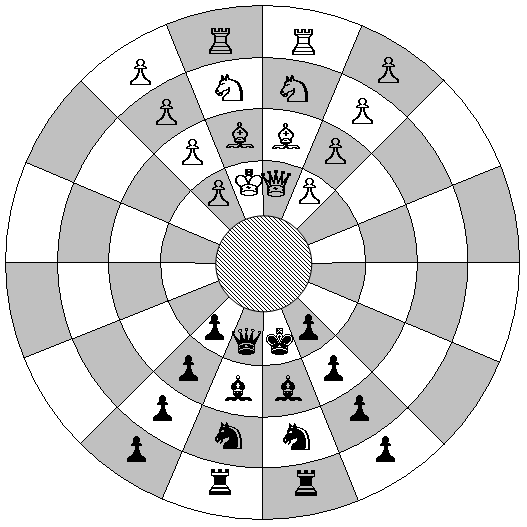
Al-Muddawara (Zaquitrion).
Image: Dogface, CC BY-SA 3.0,
via Wikimedia Commons
Hom ha d'entendre els escacs circulars senzillament com a un
Xatranj que es juga en un escaquer
circular. Els àrabs els anomenaren
Xatranj ar-Rumiya (escacs bizantins), o
Xatranj al-Muddawara (escacs circulars), i consistia en
64 caselles, organitzades en quatre anells concèntrics amb 16 caselles
cadascú. Només es requereix considerar dues regles, degudes a la
topologia circular del tauler:
No hi ha promoció dels peons; uns peons giren en sentit de les
agulles del rellotge, i altres en sentit invers. Sembla raonable
pensar que els peons tindran alguna marca o una forma distintiva
per a indicar el sentit de gir.
Dos peons enfrontats del mateix jugador, col·locats en el mateix
anell, caselles consecutives i sentit de rotació oposat, poden ser
retirats per l'adversari en el torn següent, sense comptar com a
jugada.
Podem observar, com a curiositat, que el Firz d'un jugador pot
capturar el Firz de l'oponent, doncs, si el tauler fos escacat,
ambdos Firzs hi serien en un escac del mateix color. Això el
diferència de totes les altres variants de Xatranj, on sempre
els Firzs dels jugadors es posicionen en escacs que serien de
diferent color en un tauler escacat.
Els documents a la Biblioteca Britànica i en altres llocs
suggereixen que els escacs circulars es van jugar a Pèrsia ja en el
segle X EC, i altres referències es troben a l'Índia, i més tard, en
Europa. També existeixen referències que afirmen que la forma de les
peces del joc eren diferents de les habituals del Xatranj, però
no ha quedat cap constància de les formes; probablement els peons
tindrien alguna mena de distintiu per saber en quin sentit es movien,
doncs existeixen en joc peons rotant en sentit horari, i altres en sentit
antihorari.
Tot i que Forbes i Murray l'esmenten com a un diagrama
aparegut en un manuscrit anglès del segle XIII,
conservat a Londres en la British Library
(Cotton MS, Cleopatra B IX), ha de destacar-se que el
Llibre dels escacs, daus
i taules d'Alfons X, escrit en el segle XIII, no
recull els escacs circulars; es pot deduir que almenys llavors no tenia
gaire rellevància, ni a la península ibèrica, ni per als erudits àrabs,
que foren la font principal del manuscrit d'Alfons X, i des de on
tampoc en tenim gaires referències. Tot i això, també s'ha de considerar
que tampoc apareix cap referència als escacs oblongs, tot i dedicar-ne un capítol als
jocs de daus, i un altre als jocs de taules, que sovint acompanyaren als
escacs oblongs pel revers.
Ibn al-Jatib, poeta, escriptor, historiador, filòsof i polític granadí
que visqué en el segle XIV, amb família d'origen iemení que arribà a Al-Andalus
en el segle IX, documenta la creació dels escacs circulars, que segons ell es
recull a un manuscrit de l'any 618 trobat a Istanbul, en el qual es descriuen
uns escacs rodons, circulars, anomenats, Rumi, l'invenció dels quals
atribueix a Abu Ali Ibn Rashiq al-Murci (mort en 694).
El terme Rūm prové de la paraula que els àrabs empraven per a designar
els territoris de l'Imperi Romà, i els escacs rodons sovint es troben esmentats
com a Xatranj ar-Rumiya (escacs bizantins) en les obres àrabs.
La referència més primerenca i més vàlida és doncs la d'Al-Massudí
(segle X) en la seva obra enciclopèdica d'història del món
Meadows of Gold and Mines of Gems, i podria ser rellevant que
els anomenés Xatranj ar-Rumiya (escacs bizantins), tot i que
no existeix cap altra evidència històrica que vinculi el nom amb Bizanci
més que el nom que els àrabs li donaren i alguna llegenda, també àrab, molt
posterior.
Chess Eccentricities.
Public Domain, via Internet Archive
L'interès pel joc va ressorgir en el segle XIX, quan en 1885
George Hope Verney el va descriure en el seu llibre Chess Eccentricities,
juntament amb variants per a tres i quatre jugadors inventades per ell mateix.
També apareix esmentat en el llibre
The sports and pastimes of
the people of England (1833, Joseph Strutt. Book IV,
Chapter II), referint-se al manuscrit anglès del segle
XIII, conservat a Londres en la British Library
(Cotton MS, Cleopatra B IX).
En 1983 l'escriptor anglès Dave Reynolds es proposà reanimar-lo
amb les regles actuals dels escacs; construí un tauler i el presentà
en una taverna de Lincoln (Anglaterra), on tingué èxit entre els
jugadors locals. Havia nascut la versió moderna
dels escacs circulars, i en 1996 es va fundar la
Societat d'Escacs Circulars, per a l'organització d'un torneu
com a medi per a la seva difusió i popularització.
Versió
moderna dels escacs circulars
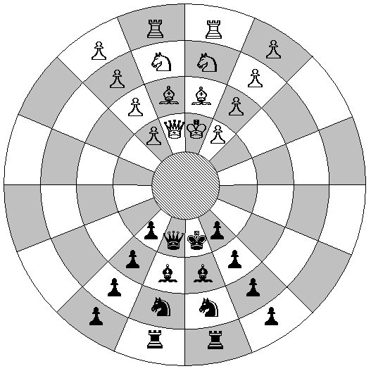
Escacs circulars.
Image: Dogface, CC BY-SA 3.0,
via Wikimedia Commons
Els escacs circulars proporcionen al Xatranj un major dinamisme,
proporcionant més potència a les torres, però desgraciadament, perdent
els cavalls una mica de potència. No és una solució òptima, i per aquest
motiu no ha superat la prova del pas del temps, doncs la complexitat del
tauler circular no aporta prou millores: força la creació de dos fronts,
però encaixona més les peces, delimitant molt més la seva àrea d'influència,
excecpte el cas de les torres. En tant que incrementa la potència de les
torres, rebaixa lleugerament la del cavall (¼), fent el joc més desequilibrat.
A més, l'absència de cantonades fa que l'escac i mat sigui més complicat
d'aconseguir, per la qual cosa probablement la majoria de les partides
acabaven despullant el Rei, o en taules, un final molt menys
artístic que en el Xatranj tradicional.
La versió moderna del Xatranj circular són els escacs
circulars, incorporant el moviment de l'Alfil i la Dama
moderns, però, desgraciadament, el moviment de l'alfil es troba molt
perjudicat en passar d'un escaquer quadrat a la versió circular. La
Dama, conseqüentment, també té un perjudici en els seus moviments
diagonals, però ja s'ha dit que els moviments ortogonals de les Torres
guanyen en potència, i per tant, també el de la Dama; podem pensar
la situació amb tres peces de moviment ortogonal cada jugador, en un escaquer
que només té quatre files, amb la potència disminuïda del Cavall i
de l'Alfil.
No volem dir que no sigui un joc perfectament jugable, a més, amb l'avantatge
que no existeixen grans estudis sobre obertures, com en els escacs ortodoxes,
permetent un joc agradable per practicar escacs sense les consideracions
vinculades a les obertures estudiades, i amb un enfocament diferent,
motiu pel que es practica en molts clubs, particularment en Anglaterra.
Però probablement el comportament és preferible com a Xatranj que
com a escacs moderns.
Convertir l'afició als escacs circulars en una competició
comporta tornar a l'estudi de les obertures, i llavors es perd la condició
de joc més relaxat.
A més d'incorporar el moviment de l'Alfil i la Dama moderns,
cal tenir en consideració algunes regles addicionals en la versió moderna
dels escacs circulars:
El posicionament de les peces canvia respecte la versió tradicional,
de manera que ambdós Reis queden enfrontats (veure la diferència en
la imatge dels escacs circulars respecte de la de l'Al-Muddawara).
Encara que s'incorpora el moviment doble dels peons, no
existeix la captura al pas, i tampoc existeix l'enroc.
S'apliquen les regles dels escacs moderns per a la finalització de
la partida: l'ofegat són taules, i no existeix la victòria si es
deixa al Rei nu.
Els peons promocionen després de moure sis caselles des de la seva posició
inicial, a l'escac inmediatament anterior a la línia inicial de l'oponent.
La regla que permet retirar els peons enfrontats d'un mateix jugador ja no
és necessària, ja que el cas no pot succeir.
Anunciar l'escac no es obligatori, i es permet capturar el rei contrari
si no es retira d'una posició d'escac, guanyant la partida.
En la versió moderna s'incorpora la potència de la reina: tan sols existeixen
quatre anells, i tres peces de moviment ortogonal per a cada jugador. També es
pot criticar que els moviments diagonals moderns de llarg abast no es visualitzen
amb claredat en el tauler circular, i poden no resultar obvis.
L'afició als escacs circulars moderns radica en el les grans diferències,
tant en les obertures, que no estan estudiades, com en els finals. Els finals
bàsics en escacs circulars són: rei i dama; rei, torre i peça menor o rei i tres
peces menors contra rei. El final rei i peó contra rei sempre gana, a condició
que el rei no pugui capturar el peó abans que coroni o sigui defensat. L'escac
i mat és més difícil d'aconseguir, i moltes partides que es perdrien en els
escacs ortodoxos per la diferència de material, finalitzen en taules.
Tot i que no queda gaire informació, en part perquè era un joc pensat per ser
guiat per algun erudit de l'època amb certs coneixements d'astrologia,
sembla que el joc anomenat Escaques, detallat per
Alfons X en el Libro de los juegos: acedrex, dados e tablas de
1283 podria ser gairebé la transcripció del al-Falakîya Xatranj, un
joc per a set jugadors en un tauler circular dividit en set anells concèntrics,
cadascú per a un dels astres (per ordre: Lluna, Mercuri, Venus, Sol, Mart,
Júpiter, Saturn), el més intern per a la Lluna, i cadascú dels anells
dividit en escacs. Però Alfons X també indica que no deixa les
informacions completes, perquè només hauria d'estar a l'abast de savis.
Els diferents anells no tenien el mateix nombre d'escacs, sent les quantitats,
per ordre des de l'interior: 12, 24, 36, 48, 60, 72 i 84. A més, el cercle
més intern, interior als escacs de la Lluna, es divideix en quatre, per als
quatre elements: foc, aire, aigua i terra. Les set fitxes, una de cada astre,
tenien estipulada color i forma, per exemple, per a la Lluna la fitxa havia
de representar, Una dona vestida de blanc, i amb les seves mans per sobre
del cap aguantant la figura de la lluna, Mart un soldat clàssic, o
Venus una dona amb un mirall i una pinta.
Era un joc d'apostes gens relacionat amb el Xatranj, tot i
tenir-ne el nom, sinó relacionat amb l'adivinació astrològica lúdica.
Cada jugador iniciava el joc amb dotze punts, i es jugava amb
un dau de set cares que determinava quin astre s'havia de moure, i un altre
dau indicant quants moviments s'havien de fer. La posició resultant de l'astre
respecte dels altres astres determinava, seguint unes regles, els guanys o
pèrdues; aquestes regles venen en gran part determinades per l'astrologia
de Claudi Ptolemeu (100 - 170 EC).
Un dau de set cares generalment es refereix a un
dau llarg, o una
ballaruga, que és un dau llarg amb un eix
que facilita fer-lo rodar, de vuit cares, descartant un dels valors.
Escacs etíops actuals (Senterej)
Actualment existeixen els escacs etíops (Senterej) que es juguen tradicionalment en Etiòpia i Eritrea.
Aquests escacs conserven tots els moviments del Xatranj, tot i que es caracteritzen per uns
moviments inicials de les peces que fan els jugadors, indeterminats en número i no necessàriament
alternats, moviments que acaben amb la primera captura. Es valora el sentit artístic del joc,
considerant més respectable el mat fet amb l'Alfersa (Ferz) o amb un
Elefant (Fil), i encara més admirable si el fa un Peó; el mat
amb un Cavall o una Torre es consideren poc artístics.
Evolució dels escacs occidentals
Els escacs occidentals es distingeixen
particularment pel patró escacat del tauler.
Image: Nevit Dilmen, Public domain via Wikimedia Commons
Tot i que es desconeixen els detalls de la ràpida extensió dels escacs
per tota Europa, podem intuir els motius: La difusió per les corts
musulmanes, el prestigi que li atorgaven erudits àrabs i perses
com a part de la formació dels cortesans, i la classificació com a
joc de reis, junt amb les legendàries riqueses associades amb
alguns conjunts de peces, fàcilment s'associava a luxe, poder,
erudicció i distinció. En Europa la diferenciació entre els
escacs medievals i el Xatranj és molt subtil, però
és cert que es dona una apropiació del joc. Les
diferències es podrien enumerar en quatre punts:
El tauler escacat en dos colors. La primera referència a un
escaquer bicolor ja apareix en el primer escrit conservat que
esmenta els escacs en occident, a finals del segle X:
versos de scachis,
datat en els anys anteriors al canvi de segle, l'any 1000;
tot i que només l'esmenta com a una manera de facilitar el joc als
jugadors, des de llavors el tauler escacat serà la identitat dels
escacs occidentats en front el Xatranj islàmic.
El retorn a les peces amb representacions figuratives,
oblidant la simbologia abstracta islamica. Amb el temps s'arribarà a
representacions simbologies pròpies, una vegada oblidada la islàmica.
La presència de peces simbòliques abstractes d'influència islàmica
serien un indicador del joc en la seva forma de Xatranj, doncs
l'apropiació del joc comporta la consecuent utilització de
simbologia pròpia. Això s'hauria de puntualitzar per alguns casos
concrets, doncs existeixen alguns indicis de l'arribada del
Xatranj a Bizanci des de Persia, amb anterioritat a la dominació
musulmana de Pèrsia, i proves clares de l'arribada del joc a Rússia
anterior a aquesta dominació; la senzilla simbologia islàmica, en aquests
casos, podia resultar particularment útil per a un joc ja conegut, però
s'ha de reconèixer una gran ignorància referent a la introducció en Europa
del joc.
El canvi de nom d'algunes peces: apareix la reina,
el calvus o curvus per a l'elefant, i la torre
perd el seu significat de carruatge de guerra, una andròmina
que ja no té sentit en els exèrcits de l'època. Però els moviments
de les peces del Xatranj, tot i canviar de nom, encara
es mantindran.
Els canvis a les regles foren molt subtils: la promoció
dels peons y el primer moviment d'algunes peces (else peons,
la regina i el rei). A més, aquestes
subtileses tenien variacions geogràfiques.
El primer moviment diferenciat s'ha mantingut per als peons,
va deixar de tenir sentit per a la Dama en canviar els seus
moviments, i per al Rei es convertí en l'enroc.
Els canvis en la finalització de la partida arribaran molt més
tard: el cas del rei ofegat es comença a considerar taules a
Itàlia des del segle XIII, i es comença a difondre per Europa;
ja fou quasi general després del segle XV, però a Anglaterra no
serà acceptat com a taules fins al segle XIX.
En quant al cas de deixar el rei nu, sense peces, no es
deixarà de considerar una victòria fins després del segle XV,
ja amb la presència de l'alfil i la dama
moderns.
Entre l'any 600, i abans del 712 EC:
Les peces d'escacs més antigues que s'han trobat són les
peces d'Afrasiab,
prop de Samarcanda, Uzbekistan. Es conserven en el
Museu Afrasiab de Samarcanda.
Aquesta ubicació es pensa que és l'origen dels escacs occidentals.
Es poden observar les formes del Xatranj persa abans de la
dominació islàmica.
En el segle VIII la difusió dels escacs pels khazars i posteriorment
per la via varega cap al Rus de Kíev, abans de la dominació islàmica de Pèrsia,
pot ser confirmada per la presència arqueològica en la
fortificació khazar de Sarkel,
actualment sota l'embassament de la presa del riu Don, prop de la desembocadura
en la mar d'Azov, una mar connectada amb la mar Negra. Sarkel hi era
prop de l'actual ciutat de Rostov, Rússia, i tenia forts lligams amb l'imperi
romà d'Orient.
En la fotografia es pot veure un elefant d'ivori trobat en la fortificació
khazar de Sarkel, datat entre el segle VIII i el segle X. Actualment es troba
en el museu de l'Hermitage, en St Petersburg (Rússia).
En les terres de dominació islàmica les peces del Xatranj
eren geomètriques, i no representaven figures humanes. Malgrat l'acceptació
de les altres religions del llibre, altres, com el zoroastrisme
o el budisme, no foren inicialment acceptades. Molts jocs d'escacs
d'aquest període són de procedència islàmica, i en Espanya fins i tot de
mossàrabs (cristians dominats) de la península.
Segle IX‑X:
Los bolos de San Genadio (Pañalba de Santiago, Lleó). Només quatre peces
d'os s'han conservat, associades al sant.
Una història d'Espanya profunda: Podem llegir l'història en
Las piezas de ajedrez de San
Genadio
explicada pel mateix
Miguel Ángel Nepomuceno,
mestre d'escacs que va anar a buscar les peces, ja esmentades
en 1843 pel escriptor Enrique Gil y Carrasco,
i amb diverses referències posteriors.
Segle IX‑X:
El joc d'escacs de Venafro (Itàlia) és probablement testimoni de la
presència àrab en
Venafrum, ocupada entre els segles IX i X per les tropes de l'emir de Bari.
Són peces
fabricades d'os.
Segle X:
Les peces de l’excol·legiata
de Sant Pere d'Àger, de cristall de roca.
Al segle XI, el conjunt estava format per 96 peces,
i al XVI se'n conservaven només 44. Actualment en queden només 29.
D'aquestes, 19 peces es conserven en
l’antic Museu Diocesà de Lleida,
pero les altres 10 es troben en el Museu Nacional de Kuwait.
Foren documentades a començament del segle XIX pel pare
Jaume Villanueva i Astengo,
i això va fer possible la seva recuperació arqueològica i
conservació.
Sembla que serien aquestes mateixes peces les que apareixen en
el testament d'Arsenda de Àger en 1068, on li deixa els
escacs al seu marit, i uns anys més tard en un inventari
d'Arnau Mir de Tost,
senyor d'Àger, i marit d'Arsenda de Àger, s'enumeren
tretze taulers de plata, tres jocs d'ivori i altres tres de
cristall.
Es pensa que la manufactura d'aquestes peces podria haver estat
en Egipte, però actualment també es considera Còrdova com a
possible taller, en Medina
Azahara, en comptes d'Egipte, però, en qualsevol cas, amb
tota certesa arrivaren a través de Còrdova.
Es pot llegir més informació en l'article del lloc web
http://history.chess.free.fr.
Peces similars, però en menor número, han estat trobades
en altres indrets d'Espanya: San Millán de la Cogolla (La Rioja)
i San Rosendo de Celanova (Orense, Galícia).
Segle X:
Les peces de la catedral de la ribagorçana Roda d'Isàvena
foren documentades a començament del segle XIX pel pare
Jaume Villanueva i Astengo:
Un saquillo con varias piezas de cristal, que serán unas
cuarenta entre grandes y pequeñas, dentro del arca llamada de
san Valero, i les identifica com a piezas del juego de
escaques antiguo, semblants a les d'Àger. No es coneix la
datació, doncs aquestes peces han desaparegut, però per la
descripció podem pensar en una datació similar a les d'Àger.
Es pensa que apareixen en un inventari de la catedral datat
en el segle XII, però no es troben explícitament esmentades
com a peces d'escacs.
Segle X:
Escacs fatimites (de l'Egipte medieval) de Celanova o
Ajedrez de San Rosendo. Es preserven en el museu de la
catedral de Orense, i són uns escacs de cristall de roca
procedents de San Miguel de Celanova, amb 8 peces
del segle X: una torre, dos alfiles, dos cavalls i tres peons.
Pertanyen a l'anomenat Tesoro de San Rosendo, sembla que
extretes del primitiu sepulcre del sant galleg existent en Celanova.
Possiblement durant molts anys només han estat considerades simples
vidrets tallats. Actualment també es considera Còrdoba com a
possible origen de les peces,
un taller de Medina Azahara, en comptes d'Egipte.
Segle X:
En el Monestir de San Millán de Yuso, San Millán de la Cogolla
(La Rioja), l'Arqueta de San Felices inclou tres peces de cristall
de roca amb forma de peces d'escacs àrab (Xatranj). En aquest cas
sembla que les peces d'escacs només van ser apreciades com a peces
decoratives pels reis de Navarra.
Any 1008: Inventari de l'esglèsia de
l'abadia de Ripoll,
redactat en l'any 1008, on es reporta un conjunt de 28
scacos cristallinos. Desgraciadament les peces
d'escacs no han arribat fins als nostres dies.
Any 1010: En el testament
d'Ermengol I d'Urgell, fundador
del Casal d'Urgell, trobem la primera referència a la
possessió d'un joc d'escacs a Europa, on li fa donació a l'abadia
de Saint-Gilles-du-Gard de Llenguadoc. El testament va ser fet
amb motiu de la campanya contra Còrdova dels comtes catalans.
Desgraciadament les peces d'escacs no han arribat fins als nostres dies.
Cinquanta anys més tard, Ermessenda de Carcassona, comtessa consort
de Barcelona, Girona i Osona, cunyada d'Ermengol I d'Urgell, vídua
del seu germà gran, Ramon Borrell, va fer donació a la mateixa
esglèsia llenguadociana de les seves peces d'escacs, com es pot llegir
en el seu testament de 1058.
En Catalunya s'han trobat diverses referències priemerenques a jocs d'escacs
en testaments i inventaris, mostrant la difusió del joc en aquestes terres,
i l'afició entre la noblesa; les referències escrites als escacs en la
resta de l'Occident cristià no solen ser tan primerenques.
Entre finals del segle IX i inicis del XI:
Roc d'atzabeja angloescandinau trobat sota la posada
'Coach and Horses' del carrer de Nessgate, York (UK).
Junt amb la peça bessona trobada en les mines prehistòriques
de pedrenyal de Grime's Graves, en Norfolk, podrien mostrar
la pronta introducció del joc en Anglaterra, però, tot i això,
aquesta presència de dues peces individuals idèntiques i no
connectades es podria correspondre amb un altre joc, per exemple,
podrien ser Hnefis (Reis) del Hnefatafl, però la forma similar a un
roc àrab seria molt inusual; això sí, recordem que el moviment
del Hnefi és el mateix de la torre dels escacs.
Aquesta peça pot evocar-nos el record de les
peces del rei Canut,
que es correspondrien en datació.
Segles XI i XII:
També en Europa es troben peces inspirades pels dissenys musulmans
del Xatranj, en alguns casos clarament resultat d'intercanvis
comercials, com les peces d'Osnabrück (Alemanya), però en altres de
clara confecció local: ossos de cèrvols (Polònia i Escandinàvia),
de balena (Witchampton, Dorset, UK) o de narval (Escandinàvia).
Desgraciadament no existeixen documents escrits associats, com en el
cas de Catalunya.
Des del segle XII ja les peces d'escacs són principalment figuratives,
en comptes de les figures abstractes del Xatranj. Aquesta tendència
sembla iniciar-se principalment en Itàlia, que faria pensar en una
influència Bizantina.
Amb posterioritat, les peces de l'Illa de Lewis, i algunes
peces russes, escandinaves
i del nord d'Alemanya.
Segle XI: Un alfil d'ivori trobat en el sud d'Itàlia;
la representació de l'alfil en Itàlia en aquesta època era d'estil
bizantí, com a un elefant.
Miguel Hermoso Cuesta, CC BY-SA 4.0
i Siren-Com, CC BY-SA 3.0 via Wikimedia Commons
Segle XI: El mal anomenat
escacs de Carlemany, doncs és gairebé
300 anys posterior a Carlemany (la seva coronació va ser a l'any 800), és part del
tresor de St. Denís, que els reis de França havien acumulat
en la basílica de Sant Denís, construida sobre l'anterior església merovíngia, i des de
llavors
necròpolis dels reis de França. La Revolució provocà la desaparició de gran quantitat
d'Objectes
i la profanació de les sepultures, quedant els objectes restants en el museu del Louvre
i el
gabinet de medalles de la biblioteca nacional. Actualment el Tresor de
Saint-Denis
es preserva en el Musée de la BnF, París.
Les peces d'escacs són tallades en ivori, datades al voltant de l'any 1080, doncs es
representen
amb aparell militar que correspon a normands i bizantins, enfrontats a Itàlia en les
guerres bizantí-normandes.
Probablement foren fabricades en Salern (Itàlia).
Segle XII: Els escacs es van transmetre per les
rutes fluvials a través d'Ucraïna i Rússia pel nord de la mar Negra i de
la mar Càspia. En les manifestacions arqueològiques trobem representats vaixells,
doncs Ладья (vaixell) és la paraula de l'idioma rus per a la torre dels escacs.
En la fotografia es pot veure un vaixell d'ivori d'inicis segle XII, trobat a Vaukavisk,
Bielorússia. Actualment es troba al museu d'art bielorús de Minsk.
British Museum, CC BY-SA 4.0, via Wikimedia Commons
Segle XII: Les peces d'escacs de l'illa de Lewis,
peces d'ivori de morsa de l'època del regne de Mann, que va dependre per vassallatge
de Noruega.
És important destacar que apareixen les figures de bisbes representant els
alfils,
i ja no apareixen elefants ni carruatges; la presència de bisbes podria indicar
vincles amb Islàndia, doncs sembla ser el primer lloc on es va fer servir aquesta
representació.
Com a curiositat, els Rocs en aquests escacs es representen amb guardes
o amb berserkers, en una representació molt pròpia del regne de Mann on van ser
trobades.
Segle XII: En Europa, temps després, algunes peces encara conservaren
les formes simbòliques del Xatranj islàmic, tot i que aviat les valuoses peces
d'ivori van ser adornades amb talles, sovint amb motius cristians.
En la fotografia es pot veure un Roc trobat a Casals (Cazaux), un poble
d'occitània
(França) entre Andorra i Tolosa. La peça s'ha datat com pertanyent aproximadament a
mitjan
segle XII. Actualment es troba al Musée du Louvre, Paris.
Siglo XII: Les peces de luxe amb formes abstractes simbòliques de
fabricació europea incorporen gravats, i la tendència és representar la forma
figurativa de la peça. Amb el temps, els simbolismes islàmics s'aniran oblidant.
En la fotografia es pot veure un Alfil trobat a Escandinàvia, datat en el
segle XII.
En el Segle XIII les figures són generalment
figuratives, i ja és difícil trobar les peces simbòliques abstractes islàmiques,
característiques del Xatranj.
En la primera fotografia podem veure un Rei en el seu tro
Game Piece in the Form of an Enthroned King, tallat en pedra tosca
fina, datat entre 1200–1250. Va ser trobat al nord d'Alemanya, i actualment es preserva
al Met
(Metropolitan Museum of Art) de Nova York, USA.
En la segona fotografia es pot veure una Reina (Regina) a cavall, tallada
en ivori de morsa, datada entre 1250–1350. Actualment es preserva en el
Statens historiska museers (Suècia).
Va ser trobada a la regió sueca de Västergötland
– país del gots occidental –, i des d'allà, acostant-se a la costa, es pot
albirar
el canal Kattegat i Dinamarca. Fou el primer lloc del país en fer-se cristià, i dues de
les primeres dinasties reials de Suècia eren d'aquesta província. Per a la majoria dels
historiadors, Västergötland és el bressol del país.
Versus de scachis: Inici dels escacs occidentals
La referència als escacs en occident més antiga coneguda és el poema en llatí
Versus
de scachis, datat al voltant
de l'any 1000, finals del segle X o començaments del segle XI. Es va trobar en
dos escrits conservats en la biblioteca de
l'abadia
d'Einsiedeln (Suïssa).
El text
original es pot consultar en wikisource,
i la seva importància va ser destacada per Gamer, Helena M.The Earliest Evidence
of Chess in Western Literature: The Einsiedeln Verses. Speculum 29 (1954): 734 - 750.
El color de les peces eren blanques i vermelles, en comptes de blanques i negres que
posteriorment es generalitzen en occident, o negres i vermelles com en orient. També
apareix en aquest poema el caràcter bicolor de l'escaquer per primera
vegada, tot i que senzillament com a ajuda als jugadors, sense ser el patró escacat
obligatori.
El precedent de l'Alfil rebia el nom de Comes –comte, però també
company– o Curvus –torçat,
fent referència a un ancià–; els seus moviments es limitaven a saltar dues caselles
en diagonal, com el Fil del Xatranj. El Roc s'esmenta com a
Rochus, però també com a Marcgravi, títol militar semblant al de
marquès, una mena de governador militar de les zones frontereres de l'imperi
Romanogermànic. La paraula Ferz, transcrita en llatí com a Ferzia,
Fierze en francès medieval, va dur a Vierge (Verge),
i apareix llavors en llatí el nom de Regina,
present en aquest poema, molt abans de ser modificats els seus moviments.
La promoció del Pedes –Peó– el permet convertir-se en Regina,
però sempre que ja no n'hi sigui la Regina en joc a l'escaquer.
La figura de la Regina en aquesta època encara tenia els moviments de
l'Alfersa, una única casella en diagonal. El canvi de nom sembla que
va ser progressiu; tot i que el poema en llatí fa servir ell nom de
Regina, gairebé 280 anys més tard
El Llibre dels Jocs
d'Alfons X fa servir en nom d'Alfersa, amb clara influència
àrab.
De qualsevol manera, aquestes expressions en el document, de clares arrels
llatines, poden fer pensar que els escacs va ingressar als territoris del
cor d'Europa, ja sigui a través de la península itàlica o, tal vegada amb
més probabilitat, directament des de Bizanci. També destaca el títol
germànic de Marcgravi, que resulta molt natural si es considera la
localització de l'abadia d'Einsiedeln, i el fet que l'abat tenia el títol
de príncep de l'imperi Romanogermànic des de que Otó I així el va
establir (965).
Certament, encara ens trobem més a prop del Xatranj que dels escacs moderns occidentals,
però
en l'occident catòlic comença a diferenciar-se per les caselles de dos colors, i l'adopció del
nom de
Reina per referir-se a l'Alfersa. També es comencen a pensar alternatives
a l'elefant (Fil), doncs els elefants de guerra no eren una realitat en l'occident
medieval.
Però no serà fins el segle XIII que apareix una peça amb els moviments del modern Alfil
en els
Escacs del Missatger – Courier Chess.
La referència en occident als escacs més antiga coneguda,
Versus
de scachis, un poema en llatí datat al voltant de l'any
1000, i trobat en la biblioteca de l'abadia d'Einsiedeln (Suïssa),
tradicionalment s'ha vinculat a una influència italiana, amb
vinculacions amb Bizanci, i fins i tot amb la Sicília musulmana,
o amb les repúbliques marítimes de Venècia o Amalfi del segle IX.
Desgraciadament, tot i que sabem que els escacs a Itàlia ja tenien
força difusió cap a la meitat del segle XI, no existeix cap
constància ni indici que permeti conèixer el camí d'entrada.
El matrimoni en el 951 d'Otó I el Gran amb
Adelaida d'Itàlia,
va unir els regnes italià i alemany, acostant així Occident a
Bizanci, i donant lloc a l'anomenada renaixença
otoniana.
Aquest matrimoní es dona juntament amb altres circumstàncies: la
vinculació del papa amb l'emperador, l'estabilitat política, la
millora de les biblioteques, la promoció cultural, doncs aquests
reis s'envoltaren d'erudits dels monestirs d'Alemanya i Itàlia,
i es va donar una més gran facilitat de comunicació i comerç,
destacant els contactes amb el comtat de Barcelona.
Així, com a hipòtesi alternativa es pot presentar Catalunya com a
possible focus, fins i tot com a origen d'aquesta temprana moda
pels escacs que va aparèixer a Itàlia en el segle XI, explicable per
la relació existent de Catalunya amb el papa Silvestre II, sense
menystenir la importància dels escacs en Itàlia, de forta influència
bizantina en el segle XI; recordem que l'emperador Aleix I Comnè
(1048- 1118) n'era un gran aficionat.
Gerbert d'Orlhac l'any 967 viatjà des del
monestir d'Orlhac a la cort del comte de Barcelona,
Borrell II. Borrell II encarregà la seva instrucció
a Ató, bisbe de Vic i matemàtic de renom.
Sota la direcció d'aquest va romandre tres anys com a estudiant en
l'escola catedralícia de Vic, amb estades en el Monestir de Santa Maria de Ripoll,
i en Barcelona. Es creu que en aquest període va viatjar també a Còrdova,
accedint a altres continguts, a més dels disponibles en el monestir
de Ripoll i en l'escola catedralícia de Vic. Aquestes escoles, degut al
veïnatge del califat de Còrdova, tenien fortes influències culturals
i científiques, tant pròpiament musulmanes, com procedents de Grècia,
d'Egipte, de Síria o de l'Índia, motiu pel qual l'abad de sant Giralt
d'Orlhac demanà a Borrell II de dur-se a Gerbert amb ell
per a fer-li aprendre ciències.
Aquesta estada a la península Ibèrica li va permetre conèixer a la
noblesa catalana, entrar en contacte amb la ciència àrab i iniciar-se
en l'estudi de les matemàtiques i de l'astronomia. Gerbert
d'Orlhac fou matemàtic, músic, astrònom i, per sobre de tot,
gran pedagog. Va conèixer la numeració aràbiga de l'1 al 9, que en
Catalunya ja es coneixia gràcies als contactes que els comtats
catalans tenien amb l'Al-Àndalus. Destaca Gerbert per l'ús
i construcció d'àbacs, que amb l'ajut de la numeració aràbiga
permetia multiplicacions i divisions complexes. També destaca
pel coneixement de l'astrolabi, i probablement fou el seu mestre
Lupitus Barchinonensis el
constructor de
l'astrolabi de Barcelona.
Viatjà a Roma en peregrinació acompanyant al seu protector, el
comte Borrell II, la qual cosa li va permetre conèixer al
llavors papa Joan XIII i a l'emperador Otó I, qui
li va nomenar tutor del seu fill, el futur Otó II.
Considerant el gust de Gerbert per la matemàtica i la
lògica, probablement va apreciar els beneficis del joc dels
escacs, que tenia una alta consideració en la cultura àrab, més
encara en el seu rol de tutor de l'hereu de la corona germànica.
Uns anys més tard, l'arquebisbe de Reims, Adalberón, el
va cridar per al seu col·legi episcopal, on va ensenyar i va fer
ensenyar coneixements d'aritmètica, geometria, astronomia i música.
Quan morí Adalberón, Gerbert fou nomenat nou
arquebisbe de Reims. Amb el nomenament d'Otó III com a
rei dels Llombards, i més tard com a emperador,
el mateix any 996, Gerbert, qui ja havia participat en
l'educació d'Otó III, es convertí en conseller del
nou emperador, junt amb el bisbe Adalbert de Praga.
Otó III, nomenat amb tres anys rei d'Alemanya,
en 983, va tenir gran talent, a més d'una exquisida educació.
Va somiar la restauració d'un imperi universal format per
la unió del papat, l'Imperi Romà d'Orient i el Romà Germànic,
incloent, per tant, Itàlia entre tots tres.
Finalment, en l'any 999 Gerbert fou nomenat papa, amb el
nom de Silvestre II (potser evocant l'unió romana que
podia representar Constantí I el Gran, en temps de
Silvestre I). Mai no va oblidar la seva estada
als comtats catalans. A més d'intervenir en la reforma del
monestir de Sant Benet de Bages i atorgar furs eclesiàstics
a Sant Cugat del Vallès, també va signar cinc butlles, com
la que reconeixia tots els privilegis i possessions de l'Església
urgellenca, un fet que va ser cabdal de cara a mantenir la
independència davant els comtes francs.
Cal recordar que el segon fill de Borrell II de Barcelona
fou Ermengol I
d'Urgell, qui en el seu testament deixà
la primera constància de la possessió d'un joc d'escacs
en occident. Tot i que Ermengol I d'Urgell nasqué quan
Gerbert ja havia completat la seva instrucció a Catalunya,
Ermengol viatjà a Roma a començament del mil·lenni, just
quan Gerbert es feia dir Silvestre II, com explica
en la crònica d'Ermengol: Vaig anar a Roma i allà hi vaig
trobar el gloriós i sapientíssim papa Gerbert, per altre nom
anomenat Silvestre.... Per a Ermengol, el pontífex
continua sent Gerbert, l’amic i protegit del seu pare,
Borrell II, comte de Barcelona.
Així, Gerbert es relacionà directament amb el primer propietari
conegut d'un joc d'escacs a l'Europa occidental, i també amb els
rectors de la dinastia que promovia els monestirs on apareixen els
primers esments literaris. La coincidència d'una figura destacada
i coneixedor de la cultura àrab, com va ser Gerbert, amb
els llocs i les dates en què els escacs es varen difondre pel
Sacre Imperi Romanogermànic, França i Itàlia és difícilment
explicable com a fets aïllats, que, a més, coincidiren amb una
conjuntura social i política favorable, i el coneixement del joc
arribant des de diferents punts.
També, si realment tinguera Gerbert influència en la difusió
dels escacs, s'ha de considerar la importància de la seva estada a
Reims, centre cultural de França, i punt de connexió de la
via Francígena o camí llombard de pelegrinatge a Roma,
que s'allarga fins a Canterbury, Anglaterra. El tauler escacat en
dos colors també apareix en aquestes dates, esmentat com a opció
per primera vegada en el poema Versus de scachis; les dots
pedagògiques de Gerbert, juntament amb la seva ment matemàtica,
el fan un perfecte candidat com a promotor d'aquest patró.
Les bones relacions entre el Sacre imperi Romanogermànic i
l'imperi romà d'Orient es trencaren en el nou mil·leni, i en
l'inici del segle XI es donen les batalles en Itàlia on morí
Otó III (1002) i Gerbert (1003), el papa
Silvestre II. Arrel d'aquestes batalles començàren les guerres
italianes entre bizantins i normands.
Aquesta hipòtesi és present a diferents fonts. Personalment, la primera
vegada que vaig llegir-la va ser en el
blog de cathalaunis, on cita,
com a primer promotor de la relació de Gerbert amb els escacs,
Chess: The History of the Game (1985) de Richar Eales, indicant
també el requeriment d'una
intelligentsia, que aquí hem
denominat conjuntura social, perquè altres factors socials
poden haver participat.
Podem trobar aquesta hipòtesi també esmentada en l'article
The Chess Queen de
Hillary Svoboda, Llicenciada en Història.
El romanç llatí Ruodlieb va ser escrit cap a
l'any 1030 EC.
És la primera referència als escacs en la literatura alemanya. Parts del poema
van ser descobertes en l'abadia benedictina de Tegernsee (fundada en 746 d. C.),
en l'Alta Baviera (Alemanya). El poema va ser escrit probablement per un monjo
anomenat Froumunt de l'abadia de Tegernsee. Descriu les aventures d'un
cavaller medieval anomenat Ruodlieb. Era un jove de noble bressol que
sali a la recerca de fortuna. Els escacs (ludus scachorum) apareix en una
escena en la qual Ruodlieb es veu obligat a jugar per diners en la cort
d'un rei estranger. El poema va quedar inacabat. El manuscrit es va tallar i es
va utilitzar per a enquadernar llibres. Fins a principis del segle XIX no es van
anar descobrint i reconstruint fragments del poema. Alguns fragments es van
descobrir sota l'enquadernació d'uns llibres antics en l'abadia de Tegernsee.
Aquests fragments es van enviar a la Biblioteca de Munic, que conserva 34 fulles
del poema.
Zaquitrion: Els escacs a l'imperi romà d'Orient
Els escacs els anomenaren Zaquitrion en l'imperi romà d'Orient, una
hel·lenització del persa Txatrang i no de l'àrab Xatranj, datant
el coneixement del joc d'escacs en Bizanci aproximadament en el segle VII,
anterior a l'any 700 EC.
Desgraciadament no existeixen constàncies datades de la presència dels escacs
en l'imperi romà d'Orient, que, a més, de vegades es confon amb els
escacs circulars, doncs podria ser
que aquesta variant tingués particular acceptació a Bizanci, i s'afegeix així la
dificultat de determinar la variant a què es refereixen les poques fonts
existents.
Al-Massudí (segle X) anomenà Xatranj ar-Rumiya
(escacs bizantins) als escacs circulars o Xatranj al-Muddawara,
tot i que no existeix cap altra evidència històrica que vinculi els escacs
circulars amb Bizanci més que el nom que els àrabs li donaren i alguna
llegenda, també àrab, molt posterior. El terme Rūm prové de la paraula
que els àrabs empraven per a designar els territoris de l'Imperi Romà, i els
escacs rodons sovint es troben esmentats com a Xatranj ar-Rumiya
(escacs bizantins) en les obres àrabs.
De qualsevol manera, la presència dels escacs en l'Imperi romà d'Orient sabem
que és anterior a Aleix I Comnè (1048- 1118), doncs la seva filla
Anna Comnè, en la gran obra històrica
La Alexíada, documenta que n'era aficionat, però
desgraciadament no n'hi ha referències anteriors datades i confiables.
Poema de Winchester:
Arribada dels escacs a Anglaterra
Poema de 36 línies escrites en llatí i entitolat
De Shahiludio: Poema tempore Saxonum exaratum.
Va ser trobat a Winchester en un manuscrit amb continguts diversos
i data anterior a 1150. Aquest poema fa servir el terme Regina
per a la peça original, en tant que Ferzia per a anomenar el
peó coronat amb les característiques de la Regina. Anomena Calvus
als alfils, representant la vellesa i sabiduria.
És un altre testimoni de la ràpida arribada dels escacs al Regne Unit,
junt amb les conegudes
peces de l'illa de Lewis.
Sobre l'any 1013 els escacs entraren en Anglaterra amb l'invasió
Danesa. La importància dels vikings determina probablement la
ràpida entrada dels escacs en Anglaterra i la resta del Regne Unit, doncs
en l'època del rei Canut el Gran, II de Dinamarca i I d'Anglaterra
i Noruega (994-1035) els escacs ja eren coneguts pels vikings,
probablement importats per la ruta varega, connectant llavors amb el
coneixement que ja n'hi havia en l'Europa de l'època.
Es refereix que en l'incendi de 1144 de l'Abadia Hyde, en Winchester,
varen desaparèixer dos jocs d'escacs que havien estat donats
pel Rei Canut. El fet podria ser perfectament veritable,
doncs és més que possible que el rei Canut tingués coneixement, com
a mínim de l'existència, del joc dels escacs.
També existeix la llegenda de la disputa entre Rei Canut i el
comte Ulf a causa dels escacs en Roskilde, Dinamarca.
Canut el Gran es va enredar en una discussió sobre una partida
d'escacs el dia de nit de Nadal amb el seu propi governador Ulf,
que també era el seu cunyat. Canut el Gran va exigir canviar una
jugada, però Ulf es va aixecar i va colpejar el tauler d'escacs
de manera que totes les peces van caure. Llavors, Canut va manar
assassinar a Ulf.
Escacs del
missatger – Kurierspiel: L'alfil modern
Die Schachpartie – el joc dels escacs, Lucas van Leyden
(1494–1533)
via Wikimedia Commons
Els Escacs del
missatger –Courier Chess– introdueixen els moviments moderns de
l'Alfil des d'inici del segle XIII (1202).
No va ser fins ja avançada la segona meitat del segle XV que el missatger
va ser incorporat als escacs, amb la introducció dels moviments de l'Alfil modern.
Independenment, també en el segle XIII, el Shogi japonés va incoporar una peça amb
aquests
moviments. A final del segle XIII trobem el Cocodril en
El Llibre dels Jocs d'Alfons X, amb els mateixos
moviments.
La primera referència data de 1202, en un romanç artúric de Wirnt von Gravenberg,
anterior a El llibre dels escacs, daus i taules d'Alfons X de Castella, i als
Escacs de Tamerlà. Posteriorment Heinrich von Beringen esmenta el
Courier Chess com a una millora dels escacs, en el poema Schachbuch,
de l'any 1300, una adaptació en vers en idioma alemany de l'obra de
Jacobus de Cessolis. En aquest poema es referia clarament als moviments
incorporats per l'alfil, en forma de una nova peça anomenada Missatger – Kurier –
o també anomenat el corredor – Läufer –.
El joc encara mantenia el primitiu alfil medieval (salt de dos espais diagonalment,
schütze –caçador o arquer–), i l'alfersa o reina medieval (només moviment
diagonal d'un espai). A més incorporava dues altres peces: El schleich –furtiu
o bufó–, que mou una casella ortogonalment, de la mateixa manera que el visir
en els escacs de Tamerlà; i el Rath o Mann, que mou de la mateixa
manera que el rei, però sense regalia.
En 1337 Kunrat von Ammenhausen descriu una partida en Constança. És en 1508 que
Lucas van Leyden pinta el quadre Die Schachpartie – el joc dels escacs,
i en 1616 Gustav Selenus descriu detalladament les regles del joc.
Aquesta variant, popular durant segles en molts països del nord d'Europa, s'associa
particularment amb poble de
Ströbeck,
perquè Frederic Guillem de Brandenburg va donar a aquest poble un tauler en 1651,
que es pot veure en el museu d'escacs local.
El seu net, Frederic el Gran de Prússia va visitar el poble i va jugar a aquests escacs
en 1744. Visitants en 1825 i 1831 van informar que el joc s'havia extingit,
però la tradició dels escacs en aquest poble encara és viva.
Fins començament del segle XIX n'hi ha constància d'aquest joc, aproximadament una durada
de sis-cents anys: des de l'època dels escacs medievals, arribant fins una llarga convivència
amb
els escacs ortodoxos.
Es pot consultar més informació d'aquest joc en el lloc web
http://history.chess.free.fr
de Jean-Louis Cazaux. També existeix un lloc web específic del
Courier Chess que ha comercialitzat una
còpia per a coleccionistes, fidel a les evidències històriques.
El llibre
dels jocs: Alfons X de Castella
Imatge del Grande Acedrex del llibre dels jocs.
http://www.chessvariants.com
via Wikimedia Commons
Posició inicial de les peces del Grande Acedrex.
Ente X, CC BY-SA 3.0
via Wikimedia Commons
El llibre dels escacs, daus i taules d'Alfons X de Castella,
descriu les regles i s'inclouen 103 problemes, dels quals 89 apareixen en altres tractats
d'origen àrab. Es va escriure entre el 1252 i el 1284, i en la primera part descriu els
escacs, en la segona els daus, i en la tercera les taules (blackgamon).
És un tractat amb una recopilació d'informació particularment rellevant, doncs en aquesta
data es generalitzen els escaquers amb escacs de dos diferents colors, i les peces d'escacs
comencen a prendre el nom i la forma actuals, tot i que l'Alfil i la Dama
no tenien encara els seus moviments moderns.
Grande Acedrex
També són notables els escacs medievals Grande Acedrex que refereix el llibre, on juguen, en
un escaquer format per 12×12 escacs, dotze Peons, un Aanca, dos Cocodrils,
dues Jirafes, dos Unicornis (Rinoceronts), dos Lleons
i dues Torres amb el Rei. L'Aanca era un au mitològica semblant a un
Roc,
però sovint es tradueix com a Griu per facilitar la comprensió.
He de reconèixer que de petit em meravellaven uns escacs que podien tenir cocodrils,
unicornis o lleons... tot i que mai no els he trobavat del tot adequats en el context
d'un joc de batalles medievals.
És força important en el Grande Acedrex el moviment definit per al
Rei, que en el seu primer moviment
podia fer un salt de dues caselles en qualsevol direcció,
tan en ortogonal, com en diagonal. Aquest moviment del Rei es desconeix
quan exàctament es va començar a incoporar a les regles del joc d'escacs, però va ser
l'inici de l'actual moviment de l'enroc.
El Cocodil, tenia el moviment de l'Alfil modern, però
els Escacs del Missatger són anteriors, i
es troba entre una varietat de fauna entre els que passa desapercebut.
Tots els escaquers del El llibre dels escacs, daus i taules eren
escaquers en dos colors, com ja era habitual els escaquers europeus d'aquest segle. El
Concili de París de 1212 comdemnà el joc dels escacs, doncs eren freqüents les
apostes, i la prohibició va ser reafirmada pels reis de Polònia i França, però no va
tenir gaire efecte pràctic, com ho prova aquest tractat que va encarregar Alfons X,
o el tauler d'escacs de Lluís IX de França, que conserva el museu del Louvre.
Escacs de les quatre estacions
Escacs de les quatre estacions.
Ente X, CC BY-SA 3.0
via Wikimedia Commons
Els Escacs de les quatre estacions (Acedrex de los quatros tiempos) són uns escacs
per a quatre jugadors, descrit en El Llibre dels
Jocs, d'Alfons X de Castella. Els jugadors han d'anar derrotant als altres,
retirant-se llavors les seves fitxes, fins quedar un guanyador. També es podia jugar assistit
amb daus, de manera semblant al Xaturaji.
Bonus
Socius i Civis Bononiae
Són dues col·leccions de manuscrits de problemes d'escacs, Bonus Socius de mitjans
del segle XIII, i Civis Bononiae aproximadament de l'any 1300.
Ambdós varen ser escrits en llatí a Llombardia (Itàlia), tot i que posteriorment foren traduïts
a diferents idiomes (de les zones d'influència del francès, alemany i italià). A més de
problemes
d'escacs, també inclouen problemes del Marro de nou i del Trictrac, que és un joc
molt similar al backgammon. Molts problemes es troben repetits en els documents, però
sovint presentant diferent solució. Els escaquers dibuixats no presenten escacats en dos colors,
però podria ser senzillament degut a la dificultat per incorporar-los en el dibuix, doncs són
manuscris.
Thanks to: Caxton.
Public domain, via Wikimedia Commons
Ludus scacchorum
Public domain, via Wikimedia Commons
Jacobus
de Cessolis
fou un frare dominic que visqué a final del segle XIII i començament del XIV.
A voltants de l'any 1300 va escriure en llatí el Libellus de moribus hominum et officiis
nobilium
super ludo scacchorum (Petit llibre dels costums dels homes i dels deures dels nobles
sobre el
joc d'escacs), conegut com a Ludus scacchorum –Joc d'escacs–. El llibre va
traduir-se
a molts idiomes, i la primera edició impresa es va publicar el 1473 a Utrecht. En català es
conservaren
cinc manuscrits (Barcelona, Girona, Sant Cugat del Vallès, Madrid, i Roma). Tot el llibre està
impregnat de l'analogia entre els escacs i la societat medieval, atès que al segle XIV,
ja estava
molt assentada la metàfora dels escacs com a reflex de la vida i de la societat. Cal tenir en
compte que
la societat medieval tenia un fort sentit guerrer.
A més d'aspectes socials, on cal considerar que els escacs principalment eren un joc per als
nobles,
el llibre destaca per deixar constància del doble moviment inicial per als Peons,
el Rei i la Dama. En el cas dels Peons, encara es conserva; en
el cas
del Rei, el moviment més tard va donar lloc a l'enroc; i en el cas de la Dama va
deixar de
tenir sentit en definir-se els seus nous moviments, en comptes dels moviments d'Alfersa,
nom occidental pel Ferz del Xatranj.
Tot i que generalment es considera ben documentat que ere un frare dominic nascut a Lombardia i
establert
a Gènova, també existeix la tesi que defensa que era un frare barceloní, amb el nom Jaume de
Cessoles.
Xatranj
Al-Kabir: escacs de Tamerlà
Posició inicial dels escacs de Tamerlà.
public-domain-photos.com
via Wikimedia Commons
Posteriorment, durant el segle XIV, en el
imperi Timúrida (dinastia musulmana d'origen turcomongol amb
capital a Samarcanda), s'inventaren els
escacs de Tamerlà, que potser d'una manera més adequada hauriem
d'anomenar Xatranj de Tamerlà, una variant més gran que el Xatranj;
aquests escacs s'anomenaven Xatranj Kamil (escacs perfectes) o
Xatranj Al-Kabir (escacs grans). Tenien 110 caselles (10x11) i dues
d'addicionals anomenades ciutadelles; en total 112, totes del mateix color.
Les ciutadelles, una moda en les variants d'aquesta època,
consistien en caselles, generalment una per jugador, on no podia entrar cap peça,
excepte el Rei de l'oponent; si el Rei de l'oponent entrava en la
ciutadella del jugador, la partida acabava en taules.
A més de les peces que es feien servir en el Xatranj, incorporava de
noves: dos avantguardes, dos camells, dues jirafes,
dues dabbābah i un visir (que podem entendre com a conseller
o ministre); el moviment del Visir era d'un escac en ortogonal: davant,
darrera, esquerra, o dreta, i els avantguardes movien com el modern
Alfil, però ha de moure un mínim de dos caselles. El Camell té
un moviment similar al cavall, però més allargat: salta un escac en diagonal
i dos en ortogonal (en comptes d'un i un del cavall). Finalment, les
jirafes tenien un moviment similar al de l'Aanca del
Grande Acedrex d'Alfons X de Castella, però havia de fer un
moviment mínim d'un escac diagonal i tres ortogonals, sense saltar. Podem
veure els diagrames dels moviments en
http://history.chess.free.fr.
En els escacs de Tamerlà, de la mateixa manera que en altres variants
històriques dels escacs, cada peó, quan arriba a l'última línia,
promociona a la peça de la columna. Això crea la paradoxa de determinar en quina
fitxa es promociona en arribar un peó a la última fila de la columna del rei,
i així es defineix una nova peça, el Príncep, amb els
mateixos moviments que el Shah (rei). Quan un jugador incorpora un
Príncep, si llavors es captura el seu Rei, la partida no acaba,
sinó que el príncep automàticament promociona a Rei; a més, tenint un
Príncep els moviments en cas d'escacs no són forçats, doncs el
jugador pot permetre que el Rei sigui capturat.
En els escacs de Tamerlà existien diverses disposicions inicials.
Podem llegir més informació en el lloc web
http://history.chess.free.fr i en la
Viquipèdia.
Sembla que Tamerlà era un bon jugador d'escacs, i feia servir
diferents variants d'aquest joc, tant el Xatranj as-Saghir
(Escacs petits, és a dir, el Xatranj ortodox), així
com el gran Xatranj Al-Kabir, però també el
Xatranj oblong,
i les versions contemporànies als escacs de Tamerlà:
el Xatranj al-Husûn
(Xatranj amb ciutadelles) i el
Xatranj ar-Rumiya al-Husûn o
Xatranj al-Muddawara al-Husûn (Xatranj circular, també
en la versió de l'època, amb ciutadelles).
Xatranj al-Husûn:
Xatranj amb ciutadelles
Aquesta variant feia servir un tauler de 10×10 + 4,
monocolor, com tots els taulers de Xatranj, incorporant
dos Dabbâbas que movien com el modern Alfil.
El tauler incorporava quatre ciutadelles, i es coneixen dues
disposicions inicials diferents: una amb incorporant els
Dabbâbas en les cantonades, afegint-los a la disposicó
habitual del Xatranj, i una altra incorporant-los un
al costat del Rei, i l'altre al costat del Firz,
deixant el Rei i el Firz en caselles contigües.
És destacable la incorporació dels Dabbâbas en la funció
de l'Alfil modern, conjuntament amb l'Alfil
medieval del Xatranj (denominat arquer en els
escacs del missatger), una disposició molt similar als
Escacs del Missatger,
només que aquest últim incorporava també el schleich
–furtiu o bufó–, equivalent al visir dels escacs de
Tamerlà, i el Rath o Mann, sumant un total
de dotze columnes. Veiem que l'arribada de l'Alfil modern
cada vegada és més propera; ja feia segles que ho feien servir els
escacs del missatger.
En els escacs de Tamerlà, qui, com diem, coneixia i jugava
al Xatranj al-Husûn, es descarten dues ciutadelles, i es
treu potència als moviments diagonals, limitant el moviment de les
Avantguardes, tot i que s'incorporen altres peces
pretendidament potents, com el Camell o la Jirafa;
des de la perspectiva actual, veiem molt més pròxim el
Xatranj al-Husûn que els escacs de Tamerlà.
Xatranj ar-Rumiya al-Husûn:
Xatranj circular amb ciutadelles
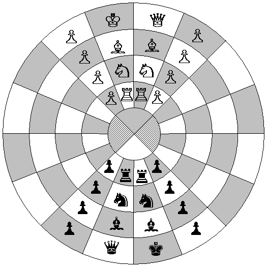
Al-Muddawara al-Husûn.
Image: Dogface, CC BY-SA 3.0,
via Wikimedia Commons
Una variant dels escacs circulars, Xatranj al-Muddawara
o Xatranj ar-Rumiya, que incorpora dues ciutadelles. A més,
la disposició de les peces canvia, posicionant les Torres en
l'anella més interna, en tant que el Firz i el Rei en
la més externa, intercanviant llavors també les posicions dels
alfils amb els cavalls.
Podem veure en el diagrama la disposició, i totes les regles, amb
l'excepció de les ciutadelles incorporades i els canvis en la
disposició inicial, són les del Xatranj al-Muddawara
o Xatranj ar-Rumiya, els escacs circulars que ja hi eren presents des
de feia quatre segles.
Recordem que el tauler del Xatranj ar-Rumiya era
monocolor, no amb el patró del escacs en dos colors, com
es mostra en el diagrama.
Escacs complets de Tamerlà
En les disposicions inicials dels escacs de Tamerlà queden forats
per omplir, espais buids entre les peces de la disposició inicial.
Els Escacs complets de Tamerlà omplen aquests forats amb
noves peces: dos Lleons, dos Toros, un monstre marí
i un Revelador, però no incorporen el Visir, i tenen tres
Cavalls però només un Camell.
Desgraciadament no tenim constància del moviment d'aquestes noves peces.
Una interessant i molt coherent proposta pels
moviments d'aquestes noves peces, feta per Jean-Louis CAZAUX
la podem trobar en el seu lloc web:
http://history.chess.free.fr.
Grans Escacs Turcs
La tradició del escacs de Tamerlà va donar lloc a uns altres
grans escacs: Els Grans Escacs Turcs
–Xatranj al-kabir–. En una data desconeguda, es
jugaven en un tauler de 13×13 caselles, i incorporaven com a peces
diferents bèsties, però l'única amb un moviment diferent dels existents en els
Escacs de Tamerlà era el Rinoceront, amb moviments que
coincidien amb l'Unicorn del Grande Acedrex
d'Alfons X de Castella.
És destacable indicar que, a diferència de la tendència en els escacs europeus,
que des del segle XIII, tot i considerar-lo com a opcional, ja sempre
es mostraven en caselles de dos colors, ni en el tauler del
Xatranj de Tamerlà, ni en el dels Grans Escacs Turcs, i naturalment
tampoc en el del Xatranj amb ciutadelles, ni en el circular, es
diferencien les caselles fent servir dos colors tot i que
tots els diagrames dels escacs circulars s'han mostrat aquí amb escaquers de dos
colors. Clarament, el color de l'escaquer diferenciava els escacs
occidentals del Xatranj oriental.
Escacs
ortodoxos
Representació fictícia dels grans mestres d'escacs
de l'època romàntica, reunits per a jugar en el Café de la Régence de París.
Antti Favén, Public domain, via Wikimedia Commons
Amb aquest nom ens referim als escacs tradicionals, els escacs occidentals de l'actualitat: Joc per a dos
jugadors, en un escaquer de vuit per vuit escacs quadrats, de color alternativament blanc i
negre (un color clar i un altre fosc), on cada jugador té vuit peons, dues
torres,
dos cavalls, dos alfils, una dama i el rei.
En The
Oxford Companion to Chess es citen 700 obertures, amb fins a 1.327 variacions amb nom. Les
partides
generalment s'inicien dins del llibre, es a dir, fent servir obertures conegudes, i tot jugador
d'escacs ha de ser coneixedor de les obertures, si més no, de les més bàsiques, si no vol caure en
desavantatge des del començament.
El joc, una vegada establertes les regles en el segle XV, podríem diferenciar que s'ha desenvolupat en
quatre etapes diferents de la història. En l'actualitat les màquines han superat l'home, i
potser
és aquest un dels motius pels que l'interés per al joc ha decaigut molt, i ja no és freqüent veure jugar
a
escacs fora dels locals específics de les agrupacions d'aficionats; cada vegada és més estrany veure
jugar a
escacs en cafès, bars i pubs, una imatge que s'havia iniciat en la era romàntica i havia estat natural i
freqüent fins molt avançada la segona meitat el segle XX. La modalitat dels escacs per correu, que
permetia
als jugadors la consulta de qualsevol material o publicació, ha anat perdent sentit en tant les màquines
han
pres protagonisme.
I - Establiment del
joc
modern (1474 a 1749)
Escacs d'amor (1474)
El poema valencià Escacs d'amor (1474),
dels poetes valencians Bernat Fenollar, Narcís Vinyoles i
Francí de Castellví és la referència més antiga
que es conserva de les regles modernes dels escacs ortodoxos. En aquest poema apareixen per
primera vegada totes les regles dels escacs moderns, incloent-hi captures al pas i
moviments de totes les peces, amb la Dama descrita per primera vegada amb els seus
moviments moderns. També descriu les mateixes limitacions per a fer l'enroc dels
escacs moderns, quan descriu les limitacions per fer el salt del Rei,
un moviment de salt de dues caselles que podia fer el Rei en el seu primer moviment,
que evolucionà donant lloc a l'enroc, tot i que ambdós moviments varen conviure durant
molt de temps.
Tot i això, trobem algunes regles relatives a la Dama que no s'apliquen avui dia,
potser els únics punts discordants amb els escacs moderns:
No es pot tenir més d'una dama en l'escaquer (estrofa LVII).
Les dames no poden capturar-se una a l'altra (estrofa LX).
Si es perd la dama, es perd la partida (estrofa LXIII).
Cal anotar que la regla de
no permetre a un jugador tenir més d'una Reina era
habitual en la època, per motius étics, donat que representava el
matrimoni reial. A vegades s'usava l'estratagema de denominar
Reina a la primera peça, reservant el nom de Dama quan
s'obtenia una segona peça mitjançant promoció.
També veiem en els Escacs d'amor altres dues regles
que tampoc són vigents avui dia: En primer lloc, dota la Dama
d'un veritable caracter reial quan s'afirma
si es perd la dama, es perd la partida,
sent la regalia
una condició reservada per al Rei en els escacs, aspecte sexista heretat
directament de la història.
El tercer cas es dona quan s'indica que
les dames no poden capturar-se una a l'altra,
que hi fa pensar en una reminiscència de la figura de
l'Alfersa, heretada del Xatranj, doncs era una figura amb
debilitat de color,
i la posició inicial per a les blanques era en blanc, i per a les negres, en negre.
Així, abans de canviar els moviments d'aquesta peça ja coneguda en Europa com a Reina,
no podia capturar la de l'oponent, senzillament perquè no podia moure a un escac d'un altre
color. La regla incorporada en els Escacs d'amor sembla no ser més que
de transició, preservant una característica del joc de la època.
Aquest poema, de la mateixa data que la unificació monàrquica dels reialmes de Castella i Aragó
pels
Reis Catòlics, potser incorpora una certa influència d'Isabel de Castella com a
reina,
tot i que, com ja s'ha comentat, una peça amb el nom de Reina ja feia gairebé 500
anys
que s'incorporava en els escacs europeus. El punt que resalten els defensors d'aquesta tesi és
que
ara la peça passa, de ser una peça feble, a ser la peça amb més poder de l'escaquer. Aquest fet
pot
ser merament casual, però, de totes maneres, sí podria haver contribuït a l'acceptació de la
nova
peça. També s'ha de recordar que el poema fa servir la paraula Dama molt més que el nom
Reina que s'havia adoptat en França i incorporat en el llatí com a Regina per a
l'Alfersa medieval; tanmateix, la posició en l'escaquer, al costat del Rei no
deixa
gaires més opcions a la imaginació.
Tot i que no representa una partida amb uns moviments
particularment destacables, és la primera partida que es té referència fent servir
les regles actuals. El text sencer del poemaScachs d'amor, junt amb la representació de la partida,
el podem trobar en Viquitexts.
La partida, en mode interactiu, la podem trobar, per exemple, en
chessgames.com.
Aquest nou estil dels escacs iniciats a Espanya va ser anomenat
els Escacs de la Reina, però causà molta polèmica, i en diferents
cercles de jugadors homes enfurits començaren
a anomenar-ho els escacs de la dama boja (madwoman’s chess,
scacchi alla rabiosa), també l'anomenaven Scacchi de la donna en Italia,
o Welsches Schachspiel (Escacs francesos) en Alemanya.
Gràcies a l'arribada de la impremta i de la popularitat
dels llibres d'escacs en el moment, els Escacs de la Reina s'escamparen per tota
Europa ràpidament, sent Francesc Vicent el primer que va difondre les noves regles
del joc. L'aparició d'algunes dones poderoses a l'inici del Renaixement també pot haver
contribuït a l'acceptació del gran poder de la Dama o Reina:
Caterina Sforza (1463-1509), Isabel d'Este (1474-1539),
Lucrècia Borja (1480-1519), Caterina de Mèdici (1519-1589).
Lucrècia Borja va acollir a
Francesc Vicent,
i Isabel d'Este a Leonardo da Vinci i Luca Pacioli,
que li dedicà el llibre d'escacs
Schifanoia.
L'enroc, junt amb la promoció dels peons, foren les dues regles més darrerenques dels escacs,
doncs no quedaren completament fixades fins mitjans del segle XVII. La península fou un dels
darrers llocs on es va começar a fer servir l'enroc, potser perquè ja es varen fixar les
regles del salt del Rei, conegudes tant en el poema Escacs d'amor,
com en la publicació de Ramirez de Lucena.
Aquestes regles priemerenques prohibien al Rei saltar altres peces en el moviment,
de manera que l'enroc fet manualment en dos moviments no era possible.
Francesc Vicent:
Llibre dels jochs partits dels schacs en nombre de 100 (1495)
El Llibre dels jochs partits dels schacs en nombre de 100
és el primer tractat d'escacs moderns del món, escrit per
Francesc Vicent,
un jugador d'escacs i escriptor valencià. Va ser publicat a València en 1495,
tot i que cap exemplar ha arribat a l'actualitat. Se sap que n'hi va haver una
còpia a la biblioteca del Monestir de Montserrat però va desaparéixer durant
la invasió napoleònica.
Vicent és considerat el fundador dels escacs moderns,
per tal com la seua obra, pel que se'n sap, va difondre per tot Europa
la innovació de la reina o dama, peça que apareix documentada per
primera vegada al poema Scachs d'amor (1474).
L’any 1506 es troba una altra vegada una referència a Vicent
en Itàlia, en la cort dels Ferrara. Ho confirma el mestre italià
A. Sanvito, de la cort de Lucrècia Borja, quan parla d’un
maestro Francesco Spagnolo maestro di scachi.
Ara, l'investigador valencià José A. Garzón argumenta que el
còdex de Cesena, que data de l'any 1502 i va ser trobat en 1995
a la Biblioteca Malatestiana de Cesena (Itàlia), inclou 100 problemes del
llibre de Vicent, i en diversos problemes d'escacs sobrevisqué la
redacció original en valencià de Vicent, amb expressions de la
València de finals del segle XV. Sembla que no hi ha dubte que aquest
tractat és l'origen d'altres textos, però, a més, sembla que el llibre
de Lucena seria una traducció
al castellà de l'original de Vicent escrit en valencià.
Ja s'havia destacat la dependència que els tractats de
Lucena (1497) i Damiano (1512) tenien amb l'obra de
Vicent. De fet, es pot observar que l'obra de Damiano va
ser escrita en l'entorn del papa Alexandre VI i els seus fills,
i Vicent el podem situar en 1506 en la cort de Lucrècia,
filla d'Alexandre VI, com al seu professor d'escacs. Els
continguts del llibre de Damiano podrien ser una reedició dels
materials d'escacs moderns de Vicent.
Repetición de Amores et Arte de Axedrez
con CL Juegos de Partido (1497)
La publicació és important perquè recull totes les regles dels escacs moderns,
fins i tot les regles antigues, així com les
idees fonamentals de moltes obertures i defenses:
El Giuoco
Piano de la
obertura italiana,
l'obertura Ruy López,
el gambet de
rei,
la defensa
francesa, la defensa holandesa
els Fianchetto...
també inclou les idees fonamentals del desenvolupament de les peces, els problemes de l'avaç
dels
peons, l'importància d'ocupar el centre...
Caldran cent cinquanta anys per acabar de madurar tots aquests conceptes, i concretar les
diferents obertures que ja intueix i no se li poden atribuir, perquè encara es continuaran
desenvolupant, fins i tot durant el segle XX.
Alguns dels continguts tenen connexió amb el
Manuscrit de Göttingen, una de les obres més
antigues enterament dedicades als escacs moderns que es coneixen, i hom pensa que
Luis Ramirez de Lucena el va fer servir per escriure el seu llibre. Aquest
document tracta obertures i problemes d'escacs, però, a diferència del text de
Luis Ramirez de Lucena, només es refereix als escacs moderns, i no fa menció
a les antigues regles.
De ludo scachorum
o Schifanoia (1500)
De Ludo Scachorum,
diagrames suposadament de Leonardo da Vinci
Public domain, via Wikimedia Commons
Tractat d'escacs manuscrit en llatí per Luca Pacioli, matemàtic de
l'incipient Renaixement, amb les corts italianes actuant com a
mecenes d'artistes i pensadors. De ludo scachorum, també conegut
com a Schifanoia, que vindria a significar perseguir el tedi,
inclou al voltant de cent problemes d'escacs, alguns d'escacs medievals,
però molts del nou Escacs de la Reina.
El manuscrit ha estat descobert recentment, en 2006, entre un fons bibliotecari
de més de 26_000 volums existent en el palau Coronini Cronberg
de Gorizia (Itàlia). La seva importància radica en el fet que, probablement,
els diagrames d'escacs d'aquest llibre els va fer Leonardo da Vinci.
Luca Pacioli i Leonardo da Vinci eren amics, i Leonardo ja havia
il·lustrat el llibre de PacioliDe divina proportione. Ambdós
fugiren de Milà quan va ser envaïda per Lluís XII de França, anant a Màntua, on
foren acollits en la cort d'Isabel d'Este.
El manuscrit està dedicat a Isabel d'Este, una princesa del ducat de Ferrara i Mòdena,
descendent d'Alfons V el Magnànim, que va esdevenir marquesa consort i regent del
ducat de Màntua. Isabel d'Este fou una destacada humanista i mecenes, creant al seu
voltant una brillant cort. També fou una prolífica escriptora de cartes, que en gran part
es conserven, i una gran amant del joc d'escacs. Leonardo da Vinci va pintar un
retrat seu.
Manuscrit de l'Escorial (1500)
Escrit en castellà de finals del segle XV, principis del segle XVI, conté
en total, 89 problemes d'escacs, de molt diversa naturalesa, però
predominant les posicions dels escacs moderns, anomenat de la dama, sobre
les dels antics escacs medievals del vell.
La major part escrit per la mateixa persona, però hi ha sens dubte altres mans
addicionals que van col·laborar ocasionalment en el text: El problema numero 17 està
escrit amb una bella cal·ligrafia procedent d'una altra persona i una tercera transcriu
els problemes 37 i 38, que curiosament estan redactats en italià.
Molt important és també que l'anònim jugador d'escacs ens presenta posicions
finals de les seves pròpies partides; amb aparició dels primers finals alfils de
diferent color i de dama contra torre i peó.
En el lloc Web del Peón eléctrico en col·laboració amb lichess.org podem
veure alguns dels problemes del manuscrit, amb
capacitat interactiva.
Pedro Damiano (1512)
Pedro Damiano va escriure Questo libro e da imparare
giocare a scachi et de li partiti, publicat a Itàlia en 1512, del
que es varen fer vuit edicions en mig segle, sent l'última de 1564.
És el llibre més antic que indica la posició del tauler d'escacs,
amb l'escac blanc de la fila més propera a cada jugador en la dreta.
El llibre descriu les regles del joc, ofereix consells sobre
estratègia, presenta una selecció de problemes d'escacs
i proporciona anàlisis d'algunes obertures, tot en el context
dels nous escacs de la Reina. Es pot dir que va ser escrita en l'entorn
del papa Alexandre VI, considerant els editors de les dues primeres
edicions en Roma.
Carles I Angulema
i Lluïsa de Savoia jugant a escacs. Le livre des échecs amoureux moralisés
Miniatura de Robinet Testard (1497)
Public domain, via Wikimedia Commons
Miniatura bohèmia segle XV
Public domain, via Wikimedia Commons
Tristán i Isolda juguen als escacs
mentre beuen la poció d'amor a bord d'un vaixell (1470)
Miniatura medieval, manuscrit prosa.
Bibliothèque nationale de France. Public domain, via Wikimedia Commons
Estudi d'obertures, defenses i finals: segles XVI i XVII
Fixades, doncs, les regles en el segle XV, al llarg dels segles XVI i XVII,
a més de desenvolupar-se els primers elements d'obertures i defenses, varen
fer-se les primeres anàlisis sobre els finals; eren els
començaments dels aspectes més teòrics del joc, similars als que s'havien
fet anteriorment en el mon islàmic pel Xatranj.
El Manuscrit de Göttingen i Luis Ramirez de Lucena ja havien
començat a fer aquests estudis, que es varen anar aprofundint fins culminar en
1749, quan es publicà el llibre L'analyse des échecs,
de François-André Danican Philidor.
També es fixaren les regles de l'enroc, que no quedaren determinades
fins la segona meitat del segle XVII. Des del segle XIII es feia servir el
salt del Rei, un moviment de salt de dues caselles que
podia fer el Rei en el seu primer moviment, però també es va començar a fer
simultàniament el moviment de la Torre, donant lloc a l'enroc.
Tots dos moviments van conviure, compartint fins i tot el nom de salt del rei,
fins que, fixades les regles de l'enroc, l'antic salt del rei en solitari va quedar
descartat com a obsolet. Sembla que l'evolució va sorgir de l'avantatge de fer el moviment
de la Torre per acostar-la, i posteriorment fer el salt del Rei, a mode
d'enroc manual en dos moviments.
També va existir el salt del rei com a moviment de salt cavall, sovint restringit
a les dues primeres files, és a dir, acceptant només els dos moviments que el posicionen
en la segona fila, c2 i g2 per al rei blanc, c7 i g7 per al
rei negre. Però tot i existir registres escrits, sembla que les regles eren molt lliures,
i les regles del salt del rei podien canviar d'una zona a una altre, o fins i tot
barrejar-se amb el modern concepte d'enroc.
N'hi ha constància de l'enroc amb les mateixes regles actuals des de finals del segle XVI,
però en el segle XVII es va fer popular l'enroc lliure, que ampliava les posicions finals
del
Rei i de la Torre. Tot i que les regles de l'enroc es varen fixar
en la segona meitat del segle XVII, encara a començaments del segle XIX es troba documentat
l'us de l'enroc lliure.
En canvi, la promoció dels peons
no va acabar de quedar definida fins el segle XIX, amb la
creació dels campeonats mundials,
que varen deixar definitivament formades les regles.
Variant índia dels escacs
Potser és d'interés, i d'alguna manera, rellevant per qualsevol record històric que del
Xaturanga hagi pugut quedar, la variant Índia dels escacs, una variant que es jugava a
Índia des de el segle XVII (l'era mogola) fins la dècada de 1960, i sembla que fins i tot
avui dia queda algun record en certs llocs de la Índia.
És interessant senyalar que en
aquesta variant l'alfil s'anomena camell, i la torre, més potent,
elefant. No existeix l'enroc en aquesta variant dels escacs, però el rei pot fer
un únic moviment de cavall, que s'anomena enroc indi.
El rei de cada jugador es posiciona a la dreta, amb la dama a la seva esquerra,
no quedant així els reis de tots dos jugadors enfrontats.
Aquestes dues últimes caracteristiques coincideixen amb les descripcions de John Gollon
per al Xaturanga, i també s'observa la inclinació per una peça potent per representar
l'elefant.
II - Era romàntica dels escacs (1749 a 1873)
Caissa
Ja en el segle XVIII, en 1749, es publicà el llibre L'analyse des échecs, de
François-André Danican Philidor, on s'analitza l'estratègia i la importància de la estructura
dels peons en el joc com a un factor posicional. En el llibre es descriuen les característiques dels
peons aïllats, doblats, endarrerits i les illes de peons. Hom pot considerar aquesta publicació com
el fi de la primera etapa, etapa d'estandardització i dels primers estudis, similars als que
s'havien fet anteriorment en el mon islàmic pel Xatranj. Fou Philidor qui asseverà
que els peons són l'ànima dels escacs, però no fou l'escola de Philidor qui
tinguè èxit, sinó l'escola italiana.
Així inicia la època romàntica i la popularització del joc dins d'una classe
intel·lectual que s'havia començat a perfilar en el segle XVIII, arribant els escacs
a ser un entreteniment en els cafès de París en el segle XIX. Aquesta etapa es caracteritza per
les obertures amb gambit (sacrificant peons, o fins i tot peces majors), el joc obert, sacrificis
descarats i atacs atrevits, jugant més com un art que aplicant uns fonaments teòrics. Els jugadors
treien la Dama precipitadament i no desenvolupaven les altres peces, llançant un ràpid atac
al Rei de l'oponent. La defensa era pobre i sense planificació profunda.
També en aquesta època trobem al campió estadounidenc
Paul Morphy, de qui podem veure les seves partides en
https://www.ajedrezeureka.com, i també l'anglès
Howard Staunton, qui va organitzar el primer torneig internacional
del món a Londres en 1851, al mateig temps que la Gran Exposició.
Aquest enfocament romàntic del joc no acabà fins als finals del segle XIX, després de
1873, quan Wilhelm Steinitz descriu com evitar debilitats en la pròpia posició, i com
crear i explotar aquests punts febles en la posició de l'oponent; un enfocament pràctic, fora
de la vistositat o la elegància que tant s'havia valorat fins llavors. Serà
l'etapa clàssica, que reprendrà els enfocaments de Philidor.
Caissa
Caissa és una
dríada mítica de Tràcia, venerada com la musa dels escacs. El mite de Caissa no existia
en l'època antiga, sinó que prové d'un poema titulat Caissa, escrit per Sir William Jones el
1763.
El turc (1769)
El Turc va ser una famosa farsa que simulava ser un autòmat que jugava als escacs,
construït per Wolfgang von Kempele.
Es va exhibir per primera vegada a la cort de l'emperadriu Maria Teresa d'Àustria
el 1770, i va fer una gira en la dècada de 1780 per Europa; en París va jugar una
partida contra Benjamin Franklin, qui va perdre.
El secret del seu funcionament va ser ben conservat, i l'èxit més gran del Turc
fou després de la mort de Kempele, quan va derrotar a Napoleó Bonaparte
en 1809. També va jugar amb Charles Babbage en 1820.
Finalment va ser donat al Museu Peale de Filadèlfia, però l'any 1854 va ser destruït
en un incendi. El fill de l'últim propietari va publicar posteriorment un llibre en
el qual explicava els seus secrets.
Aquests treballs inicials foren ambiciosos, però no havien fet una veritable
feina sobre el terreny, i patien de greus errors. La denominada teoria
Cox-Forbes inicialment fou exposada pel capità Hiram Cox,
superintendent de Palongkee (Índia), ciutat que es batejà com a
Basar de Cox en el seu honor, i posteriorment aquesta teoria fou
defensada i ampliada per Duncan Forbes. La teoria Cox-Forbes,
degut a una molt incorrecta datació dels documents indis, datava l'origen dels
escacs en el 3000 a.e.c, com a una transformació del Xaturaji, que
denominaven Xaturanga, confonent ambdós jocs. En el cas de
Josep Brunet i Bellet, encara considerava una datació anterior per al
joc, doncs el datava en l'any 4000 a.e.c, originat en l'Egipte dels faraons,
perquè confonia el Senet amb els escacs.
S'hauria d'esperar que Harold James Ruthven Murray publiqués en 1913,
després de traduir diversos manuscrits en un seriós treball d'investigació:
A History of Chess (1913).
Les tesis que defensa H.J.R. Murray en aquest llibre, en general,
coincideixen amb les conclusions acceptades avui dia, i es reconeix el gran
treball d'investigació que va fer.
Variants dels escacs i George Hope Verney
També aquesta etapa destaca per la proliferació de variants dels escacs.
El Xatranj va anar incorporant variants al llarg dels segles, i
els escacs occidentals no foren més que una nova variant, que
va culminar amb la incorporació de l'alfil dels Escacs del Missatger, i
els nous moviments de la Dama, en el que es va denominar
Scacchi de la donna. Això ha de recordar-se quan s'adopten
postures immobilistes enfront de noves possibles variants, ja que la grandesa dels
escacs prové de les diferents variants que s'han succeït al llarg dels segles.
Una vegada aconseguida gran perfecció del joc en el segle XV, i únicament amb
algunes regles pendents de normalitzar, van trigar a aparèixer noves variants,
i durant els segles XVI i XVII l'esforç es va centrar en l'estudi d'obertures,
defenses i finals, com anteriorment havien fet els àrabs per al Xatranj.
Com a excepció, abans de l'era romàntica trobem la variant de Pietro Carrera,
publicada en 1617 en el seu llibre Il Gioco degli Scacchi. Aquesta
variant, amb poca acceptació en el seu moment, va donar lloc, en 1874, a la
variant de Henry Bird, destacat jugador de l'era
romàntica, que fonamentalment va modificar la distribució inicial. Ja en
l'era clàssica,
José Raúl Capablanca reprendria aquestes idees
per a la seva variant, els escacs de
Capablanca.
És cert que els Escacs del Missatger es varen mantenir després de l'entrada
dels Scacchi de la donna, per a extingir-se en l'era romàntica.
No obstant això, en aquesta era l'interès per noves variants dels escacs va
augmentar, particularment les variants d'escacs multijugador, amb una certa
desaprovació d'alguns jugadors d'escacs, com va quedar palès en l'article aparegut
en el Times, que donà lloc a la publicació del llibre
Four-Handed Chess per
George Hope Verney en 1881. Proliferaven les versions per
a tres, quatre, i fins i tot més jugadors, que Duncan Forbes, en el seu
llibre The History of Chess: From the Time of the Early
Invention of the Game in India Till the Period of Its Establishment in
Western and Central Europe (1860), qualificava de "*monstrosities".
Verney, després del seu èxit amb la publicació de Four-Handed
Chess, va continuar amb la publicació, en 1885, de Chess Eccentricities,
on recull múltiples variants per a tres i quatre jugadors,
incloent-hi la variant per a quatre jugadors dissenyada per ell mateix, i les
variants d'escacs circulars per a tres i quatre jugadors, també
dissenyades per Geo. H. Verney. En el llibre també apareix la variant
russa per a quatre jugadors amb fortalesa, que ell data en 1850, data en què
van ser publicades les regles completes. També es descriuen altres variants dels
escacs; les variants històriques i d'altres llocs geogràfics, són bàsicament
referències als estudis de Duncan Forbes, però el llibre recull també
multitud de variants dels escacs occidentals: canviant els tipus de peces,
la seva disposició, o la grandària i forma del tauler; entre elles, la més
antiga esmentada és la variant de Pietro Carrera. Trobem a més altres
curiositats, com una manera de jugar, que diu és habitual a Rússia, que fa servir
la Dama enriquida amb el moviment del Cavall.
A més, també podem considerar a
Vernon Rylands Parton com un continuador
d'aquesta afició per les variants dels escacs d'aquesta època romàntica. Encara
que els treballs de Parton ja són del segle XX, en molts casos amb una
profunditat d'anàlisi que els delata posteriors a la innocència de les versions
del romanticisme, enyorava algunes coses de l'època victoriana, i d'una certa
manera la seva imaginació el vincula amb ella.
III - Escola moderna (1873) i Establiment com a esport (reconegut des de 1924)
Es considera que en 1886 es va disputar el primer campionat del món,
que guanyà
Steinitz; en 1894 li guanyà el matemàtic Emanuel Lasker, que mantingué
el títol durant 27 anys. El cubà
José Raúl Capablanca guanyà a Lasker en 1921;
Capablanca no va perdre cap partida en els tornejos que va participar entre 1916 i 1924.
Capablanca va perdre el títol en 1927 en front al rus, posteriorment nacionalitzat francès,
Aleksandr Alekhin, que sempre va evitar la partida de revenja.
Machgielis (Max) Euwe, jugador d'escacs neerlandés, va vèncer el campió regnant,
Alekhin, en 1935, però va perdre el títol davant el mateix Alekhin, el 1937. Després
de la mort d'Alekhin el 1946 el títol va quedar vacant. Des de llavors el títol ha estat un
reguitzell de jugadors soviètics, posteriorment russos, amb l'excepció del jugador nord-americà
Bobby Fischer, des de 1972 fins renunciar a disputar-lo en 1975. El domini soviètic-rus acabà
en 2007, data en que va guanyar el jugador indi Viswanathan Anand. El 22 de novembre de 2013,
amb 22 anys, el jugador noruec Sven Magnus Øen Carlsen es declarà campió del món, i és, a dia
d'avui, l'any 2020, el campió actual. Carlsen té el títol de Gran Mestre des de 2004, a
l'edad de 13 anys, i número 1 mundial des de 2010 segons la classificació d'Elo de la FIDE; desprès
de Garri Kaspárov, ha estat el campió del món d'escacs més jove.
La primera olimpíada d'escacs es celebrà en París en 1924, i la
FIDE (Fédération Internationale des Échecs)
es va crear per organitzar l'esdeveniment. Des de llavors n'hi ha olimpíades bianuals, i campionats
mundials en totes les categories per sexes i edats. Els escacs van ser reconeguts com a esport pel
Comitè Olímpic Internacional en el 2001.
Escola Clàssica (Moderna) (1873)
L'etapa clàssica repren els enfocaments del segle XVIII plantejats per
François-André Danican Philidor,
qui en 1749 publicà el llibre
L'analyse des échecs, on s'analitza l'estratègia
i la importància de la estructura dels peons en el joc com a un factor posicional.
L'era romàntica no havia apreciat gaire aquestes premisses, tot i que sí,
en certa manera, s'havien pres en consideració.
Fou en 1873 que Wilhelm Steinitz derrotà a
Joseph Henry Blackburne, que era una icona dels
escacs romàntics a causa del seu estil de joc obert i altament tàctic,
convertint-se Steinitz en el primer campió del món.
L'estil de Wilhelm Steinitz era un enfocament pràctic, fora de la
vistositat o la elegància que tant s'havia valorat el l'era romàntica,
evitant debilitats en la pròpia posició, per a crear i explotar aquests punts
febles en la posició de l'oponent.
Fou el primer es sistematitzar i dogmatitzar alguns principis posicionals,
com la importància del centre, la debilitat de caselles, els peons febles,
la importància de la parella d'alfils, l'alfil dolent...
Els jugadors moderns preparen amb
paciència la consecució de la partida, tot adoptant un pla, i buscant els
punts febles de la posició del contrincant.
És destacable d'aquesta escola
Siegbert Tarrasch, metge i jugador
d'escacs jueu alemany, que va contribuir a assimilar els ensenyaments de
Wilhelm Steinitz. El 1897 fou editor de la revista d'escacs alemanya
Deutsche Schachzeitung, i fou especialment conegut en la seva època
pel llibre Das Schachspiel (The Game of Chess,
en anglès), dividit en tres parts (final, mig joc, i obertura). Fou el seu darrer
llibre, però el més reeixit. Es va publicar originalment el 1931. Podem accedir
a una reedició de 1976 d'aquest llibre en https://archive.org.
Però, sense dubte, el representant més destacable d'aquesta escola és el matemàtic
Emanuel Lasker,
campió del món entre 1894 i 1921, vint-i-set anys, un dels millors jugadors
de la història. Fou Lasker qui li va prendre el títol a Steinitz.
Combinacions, enganys i amenaces. Joc caracteritzat per atacs a curt
plaç, que requerexen càlcul per part dels jugadors.
Sense fixar grans metes, ni esforçar-se per plans estratègics a llarg
termini, s'aprofiten els errors de l'oponent amb superioritat tàctica.
La partida transcorre maniobrant, buscant guanyar avantatge.
El gran mestre del joc tàctic fou
Frank Marshall,
campió dels Estats Units per 27 anys consecutius, qui va crear el
Marshall Chess Club. Fou conegut pels seus
swindles (enganys, estafes), maniobres tàctiques
per a recuperar-se d'una partida que podria semblar perduda, i fer taules,
o fins i tot guanyar. Va escriure el llibre
Marshall's Chess "Swindles" (1914), que recollia
diverses partides on havia fet servir aquest artifici.
Joc basat en l'estratègia, a guanyar i explotar petits avantatges, i a
analitzar la posició més àmplia, en lloc de calcular les tàctiques més
immediates.
José Raúl Capablanca
Graupera va utilitzar un estil que encarna el concepte
d'escacs posicionals; per exemple, Capablanca sovint prenia
un petit avantatge en els finals i l'utilitzava per a guanyar la partida.
Capablanca guanyà el títol a Lasker el 1921, després de la interrupció
dels escacs deguda a la primera Guerra Mundial. Va perdre el títol el 1927 contra
Aleksandr Alekhin, i no va tenir l'oportunitat de recuperar-lo perquè el
jugador rus es va negar sempre a la revenja.
Un altre destacat jugador posicional fou
Salo Flohr (Salomon Mikhàilovitx Flohr),
jueu txecoslovac, i posteriorment soviètic, heroi nacional a Txecoslovàquia durant
els anys trenta. Va dominar molts dels torneigs d'escacs dels anys de la preguerra,
però el seu pacient estil posicional va ser superat pels mètodes més tàctics i
aguts dels joves jugadors soviètics després de la Segona Guerra Mundial.
Escola Hipermoderna (1927)
Del concepte d'escacs posicionals va sorgir l'hipermodernitat,
o la idea de controlar el centre amb peces, no sols amb peons. S'acceptava
que cada posició depenia d'unes certes consideracions i detalls intrínsecs
a ella, i per tant les generalitats i preceptes de l'Escola Clàssica
podien no ser tan útils. La idea va sorgir en la dècada de 1920, i alguns
exemples d'obertures hipermodernes són les defenses Grünfeld,
Benoni, l'Índia i Alekhin, entre altres.
El jugador d'escacs Richard Réti
va revolucionar l'estratègia escaquística, afirmant que el centre clàssic,
ocupat per peons, té més inconvenients que avantatges, i que dominar el
centre des de lluny, amb l'acció de les peces, és un factor estratègic de
més pes. El 1924 va obtenir una ressonant victòria contra el
Campió del món José Raúl Capablanca al Torneig de Nova York.
Réti va tenir sempre una visió artística del joc, que en certa manera
recuperava l'esperit romàntic.
L'altre gran teòric de l'hipermodernitat fou
Aron Nimzowitsch qui
pretenia sistematitzar l'art dels escacs per a fer-ne un joc gairebé científic.
Va escriure el tractat més important sobre escacs fins a aquella època, el
llibre My System
(Mein system, en alemany), editat entre 1925 i 1927 en forma de cinc
folletons que va ser el manual de gran quantitat d'escaquistes moderns, fins i
tot actualment té valor pràctic. En aquest llibre tracta sobre la
importància del centre i el desenvolupament, conceptes ja
esmentats i estudiats per Morphy i Steinitz, la gran fecunditat
de les columnes obertes com a mitjà per a arribar a la setena
i vuitena files, el peó passat, el canvi de
peces, la peça clavada o l'escac a la
descoberta; la major part dels temes actuals hi van ser analitzats.
Però la seva revolució principal va ser sobre el concepte de la
cadena de peons, fent paradigmàtica la defensa
francesa, i amb ella la variant de l'avanç, a banda de portar al món dels
escacs els conceptes de sobreprotecció, ja esmentat
per Siegbert Tarrasch i de profilaxi, del qual en Kàrpov ha
estat el major exponent.
També, en la difusió de l'hipermodernitat participà Savielly
Tartakower, no només per ser un gran jugador d'escacs, sinó
també un dels principals periodistes d'escacs dels anys 1920 i 1930s.
S'ha de destacar que l'hipermodernitat no es considerava un trencament
amb les anteriors tendències, sinó més aviat una amplicació, a
diferència de les tendències d'oposades romanticisme vs. modernisme
o tàctic vs. posicional; efectivament, el romanticisme
havia tingut un alt component d'escacs tàctics, i el modernisme
d'escacs posicionals. Així trobem que
Aleksandr Alekhin
(o Alexandre Alekhine, com ell mateix ho escrivia) era considerat
un jugador tant tàctic com posicional. Tot i això, els jugadors
hipermoderns consideraven les idees clàssiques de
Siegbert Tarrasch massa dogmàtiques, i algunes fins i tot
antiquades.
Després de la Segona Guerra Mundial, una generació de jugadors d'escacs
soviètics, dirigida pel futur campió del món Mikhaïl Botvínnik,
van començar a obtenir una sèrie de victòries sobre competidors
internacionals que va sorprendre el món. Els jugadors soviètics van
dominar els escacs des de 1948 fins a 2006, amb l'única excepció de
Boby Fischer entre 1972 i 1975.
Aquest llarg període de dominació soviètica sovint s'anomena l'Escola
Soviètica d'Escacs, que varen ser un conjunt heterogeni de jugadors
que en conjunt destaquen per la seva exhaustiva preparació d'obertures,
l'estil altament dinàmic en el tractament de les posicions del joc mig i
l'agressivitat. És cert que l'estil canvia entre els diferents jugadors,
i, per exemple, Mikhail Tal i Tigran Petrosian tenien
estils oposats, molt agresiu el primer, i molt posicional i més defensiu
el segon. Però els escacs actuals no s'entenen sense les aportacions
radicals dels jugadors de la URSS des dels anys 30 fins els 70s, i moltes
d'aquestes aportacions tenen característiques comunes: l'exhaustiva
preparació d'obertures, i l'apreciació tàctica, dinàmica, és fonamental
per a la avaluació de les posicions i per a l'elecció dels plans de joc;
en resum, un entrenament rigorós i l'estudi del joc, és a dir,
considerar els escacs un esport més que un art o una ciència.
Sovint l'Escola Soviètica d'Escacs únicament es considera des de 1948
fins a 1972, moment de la derrota dels soviètics per Boby Fischer.
Història: Formació de la Escola Soviètica
(en castellà)
Tradición rusa previa
Es probable que cuando el músico Ziryab cautivaba a la corte de
Abderramán II en Córdoba, el ajedrez también comenzaba a introducirse
en Europa por otro flanco. Todo indica que el shákhmaty,
nombre ruso del ajedrez, llegó al Rus de Kiev directamente desde Oriente
Medio y Asia Central, a través de las rutas comerciales que subían por el
río Volga desde el mar Caspio. Las piezas más antiguas que se han desenterrado
del territorio ruso datan del siglo X, y entre los siglos XII al XIV las
excavaciones muestran que ya se jugaba ajedrez en el 20 por ciento de las
ciudades rusas.
Iván IV, mejor conocido como Iván el Terrible, el primero de
los zares, murió, literalmente, sobre el tablero, cuando sufrió un infarto
mientras jugaba una partida en 1584. Se sabe que Pedro el Grande y
su mujer Catalina I que lo sucedió, fueron grandes fanáticos del
juego.
Durante el siglo XIX, tanto en Europa como en Estados Unidos, el ajedrez
dejó de ser un simple pasatiempo y se convirtió en la recreación intelectual
por excelencia. El ajedrez fue visto como un juego digno de caballeros, la
actividad apropiada para la emergente burguesía ilustrada. Con ello se dió
una paulatina profesionalización, el surgimiento de campeones nacionales,
y la organización del primer torneo internacional de ajedrez en Londres, en
1851. El último de los zares rusos, Nicolás II, también fue un gran
entusiasta del juego. Bajo su auspicio y financiaxción, tres de los torneos
internacionales más importantes previos a la primera Guerra Mundial se
llevaron a cabo en San Petersburgo durante 1898, 1909 y 1914; Rusia se
convertía en el epicentro del ajedrez europeo.
No sorprende que algunas figuras prominentes del comunismo también fueran
apasionados ajedrecistas. Se sabe que Marx, Trotski y Lenin estuvieron
obsesionados por el juego. Sobrevive una curiosa fotografía de 1908,
donde aparecen Lenin y el revolucionario Alexander Bogdánov
jugando una partida de ajedrez en la isla de Capri, Italia, durante una
visita a la villa del escritor Maksim Gorky, quien también se
observa en el fondo de la toma. Sin embargo, para 1917, Lenin ya
había abandonado por completo el ajedrez.
Instauración del ajedrez como deporte socialista
El ajedrez apareció como un componente idóneo para la construcción del
estereotipo oficial del hombre soviético: calculador, lógico y racional,
incluso en sus ratos de ocio. Además era un componente que se integraba
muy adecuadamente en la revolución cultural, y
la dominación absoluta de los ajedrecistas soviéticos a partir de 1945
en el ámbito internacional durante décadas, sirvió para legitimar al
régimen y pregonar una superioridad intelectual sobre las sociedades
capitalistas.
El ajedrez se vinculó con el Consejo Central de Entrenamiento
Militar Universal, mejor conocido como
Vsevobuch, su acrónimo en ruso, que gestionaba
la formación física y militar obligatoria, junto con la educación
comunista. El Vsevobuch tomó el control de todas las sociedades
y clubes deportivos del país. El ajedrecista Aleksandr
Ilín-Zhenevski (el ginebrino) era comisario de
administración en Vsevobuch, y sus argumentos del estímulo que
el ajedrez proporcionaba a la audacia, la creatividad, la determinación
y la habilidad estratégica, así como un complemento para conseguir la
erradicación el analfabetismo, el movimiento
likbez de la revolución cultural, convencieron
a Podvoisky, director general de la agencia.
Esto permitió la financiación de una olimpiada de ajedrez, siendo la
primera ocasión en la historia en que un Estado brindaba soporte
financiero al ajedrez. También solicitó, y obtuvo, espacio en el
periódico de Vsevobuch para escribir la primera columna de
ajedrez en la era soviética, y el 23 de mayo de 1920 fue inaugurado
el primer club de ajedrez de la Rusia posrevolucionaria. En realidad
sólo 16 de los 30 invitados se presentaron a la olimpiada durante el
otoño de 1920, pero la coyuntura de la pasada revolución y la todavía
en curso guerra civil no era nada favorable. El ganador fué
Alexander Alekhine, que un año después se exiliaría, y el
ginebrino obtuvo un decoroso noveno lugar. la olimpiada fue
reconocida posteriormente como el primer Campeonato de ajedrez
de la Unión Soviética.
En marzo de 1923 se decretó el cierre de Vsevobuch y la cancelación
de su programa de entrenamiento militar universal, aunado a la
desmovilización de tropas del Ejército Rojo y concluyó una primera
etapa de estrecha relación entre el Estado soviético y el ajedrez.
Pero a partir de entonces, el ajedrez sería considerado,
al menos burocráticamente, como una actividad deportiva.
Además, la vinculación del ajedrez con los deportes le valió
librarse de una posible censura que se impuso a
partir de 1922 a varias actividades culturales catalogadas de
burguesas, y los ajedrecistas tampoco sufrieron la persecución
que asedió a buena parte de la intelligentsia durante esos años.
La Comisaría Popular de Educación, agencia encargada de diseñar
e implementar todas las políticas soviéticas relacionadas con la
instrucción pública, la cultura y las artes, fué dirigida por
Anatoly Lunacharsky desde 1917 hasta 1929 con el encargo de
reformar el sistema de escuelas y universidades públicas para adaptarlo
a las nuevas condiciones del país. Lunacharsky empleó un método
elemental y mordaz de recompensa y castigo, con el objetivo de
estimular a los artistas y miembros de la intelligentsia para que
se sumasen al esfuerzo bolchevique o, de lo contrario, no lograran
interferir en él. Dentro de la Comisaría Popular de Educación
se creó en 1922 Glavlit, el órgano oficial de censura que se
mantuvo vigente hasta la desintegración de la URSS. El propio
Lenin consideraba la intelligentsia como un enemigo de clase.
Por otro lado, las cifras muestran la gran labor realizada:
en 1917 tan sólo el 28.4 por ciento de la población soviética
sabía leer y escribir; para 1926, la cifra había aumentado a 51.1
por ciento y, para 1939, alcanzó el 81.2 por ciento.
Creación de la Sección de Ajedrez,
en el Consejo Superior de Cultura Física
Un grupo de ajedrecistas se propuso rescatar a Sociedad Rusa de
Ajedrez en la anterior capital, Petrogrado, que posteriormente
se denominó Leningrado, y actualmente San Petersburgo. Consiguieron
celebrar en 1923 el segundo Campeonato de ajedrez de la Unión
Soviética.
Mientras tanto en Moscú había un patrocinio completo y participación
directa del gobierno en el desarrollo del ajedrez. Se solicitó la
creación de un Instituto de Ajedrez gubernamental, rechazado,
pero convencieron a las autoridades locales de Moscú de incluir
secciones de ajedrez en las estructuras de los sindicatos
obreros.
En 1924 la Sociedad Rusa de Ajedrez celebró un tercer encuentro
nacional, en la ya denominada Leningrado. La ocasión se aprovechó
para discutir el futuro del ajedrez en la URSS. Cuando
estaban reunidos recibieron una carta del dirigente Nikolái
Vasílyevich Krylenko dando su apoyo a un ajedrez institucionalizado
(y politizado), algo que la Sociedad Rusa de Ajedrez, aunque se
encontraban en minoría, hubiera querido evitar.
se decidió disolver la Sociedad Rusa de Ajedrez, y en su lugar,
se propuso crear una Sección de Ajedrez, en el
Consejo Superior de Cultura Física de la Unión Soviética, con
su propia publicación, que se llamaría 64 (en referencia al número
de escaques que hay en un tablero). El grupo de ajedrecistas de Leningrado
fue relegado a segundo plano, debido a su perfil conservador y su
reticencia inicial a la politización del juego; en tanto que Listok,
su publicación emblema, y pionera en el ámbito editorial soviético, quedó
bajo la autoridad del ginebrino Alexander Ilyín a partir de ese
momento. Escogieron a Krylenko como presidente de la Sección,
y también como editor en jefe de la publicación 64, quien empleó
los fondos estatales para perseguir dos grandes objetivos:
La popularización del juego mediante eventos ajedrecísticos
masivos, apoyándose en la emergente estructura de las organizaciones
partidistas y los sindicatos. Ese mismo año se organizó el primer
Torneo de sindicatos obreros de la Unión Soviética,
el cual atrajo apenas a un puñado de jugadores. Sin embargo, en pocos años,
este certamen anual se convirtió en uno de los eventos deportivos y
culturales más populares en la URSS, donde participaban cientos de miles
de jugadores. También el aparato militar se sumó al esfuerzo por masificar
el juego y se organizó el primer Campeonato de ajedrez del Ejército
Rojo.
El segundo objetivo que persiguió Krylenko fue el ajedrez a gran
escala, torneos costosos y elitistas que no necesariamente
seguían los preceptos del marxismo-leninismo, con la intención de
establecer la Unión Soviética como una potencia cultural en la arena
internacional.
Primeros eventos internacionales
A principios de 1925 Rabinóvich viajaría a Baden-Baden, Alemania,
como el primer representante oficial de la Unión Soviética en un campeonato
internacional de ajedrez. Alcanzó la séptima posición, pero el primer lugar
lo había ganado el moscovita Alexander Alekhine, quien a raíz de su
exilio en 1921 se había convertido en un rabioso crítico del régimen
bolchevique.
En el verano de 1925 se disputaría en Leningrado el cuarto Campeonato de
Ajedrez de la Unión Soviética, y destacados jugadores
como el ucraniano Efim Bogoliúbov y el ruso Alekséi Selezniov
aceptaron la invitación para volver temporalmente de su exilio para participar.
Fue el primero de los torneos a gran escala que organizaba la Sección
de Ajedrez, y debía poner a prueba la calidad de sus ajedrecistas en el
exterior.
En 1925 se celebró en Moscú el Campeonato Internacional de
Ajedrez (se puede ver el vídeo adjunto disponible en este sitio web),
en el que participaron los 10 mejores ajedrecistas soviéticos y 11 jugadores
internacionales, siendo la figura más destacada el cubano José Raúl
Capablanca, el flamante campeón mundial que en 1921 le había arrebatado
el título al matemático alemán Emanuel Lasker, quien también
participaría en el torneo, junto con el campeón estadounidense Frank
Marshall, el polaco Savielly Tartakower, el checo Richard Réti
o el austriaco Ernst Grünfeld, siendo la única ausencia notable
el exiliado moscovita Alexander Alekhine, quien no recibió invitación.
Existía una gran desinformación sobre las condiciones de vida en la URSS,
pero encontraron a su llegada una gran ciudad exultante, donde todo parecía
girar en torno al ajedrez. La Sección de Ajedrez convenció a Capablanca
de realizar un viaje relámpago a Leningrado para ofrecer una exhibición de
partidas simultáneas. Capablanca ganó 18 de las 30 partidas que disputó,
empató ocho y perdió cuatro. Entre las derrotas, la que más llamó la atención
de la prensa fue aquella que le propinó un adolescente enjuto y miope, que
recién había cumplido 14 años, Mikhaíl Botvínnik.
Contra todo pronóstico, el ginebrino Alexander Ilyín le arrebató un
valioso punto al cubano. Capablanca también perdió una segunda partida
ante el ucraniano Boris Verlinsky, quedando en el tercer puesto de la
clasificación final. El otro gran favorito, Emanuel Lasker, también
perdió dos de sus partidas: ante Grigory Levenfish y ante el mexicano
Carlos Torre, obteniendo el segundo puesto. El ganador del torneo fue
Efim Bogoliúbov, el ajedrecista ucraniano que, a invitación de
Krylenko, había regresado de su exilio unos meses antes para participar.
Los ajedrecistas soviéticos habían demostrado al mundo que podían dar batalla,
e incluso vencer, a los mejores jugadores internacionales, y el enorme interés
que había despertado el torneo significó un gran avance hacia la ambicionada
masificación del juego; una gran victoria para la Sección de Ajedrez. Además
todo ello quedó reflejado en un cortometraje de 20 minutos: Fiebre
de ajedrez, una sátira sobre la fiebre del ajedrez que se desató
en Moscú con motivo del Torneo Internacional de Ajedrez, con la participación
de Capablanca en calidad de actor, y otros ajedrecistas, aunque en
papeles menores: el norteamericano Frank Marshall (1877-1944); el
checo Richard Réti (1889-1929); el mexicano Carlos Torre Repetto
(1904-1978); el inglés Frederick Yates (1884-1932) y el austriaco
Ernst Grünfeld (1893-1962).
Progresiva intromisión de contenido político
Durante el campeonato tres psicólogos soviéticos realizaron un estudio
experimental, y según los resultados de Psikhologiia shakhmatnoi
igry (Psicología del ajedrez) dados a conocer en 1926:
el ajedrez constituía un método poderoso de disciplina y desarrollo
intelectual, que conlleva beneficios no sólo para jugadores capaces de
convertirse en maestros, sino también en sujetos que no poseen dichas
cualidades. La práctica habitual del ajedrez podría desarrollar en la
población aptitudes que formaban parte del arquetipo del ciudadano socialista:
serenidad, autocontrol, confianza, voluntad, disciplina, e intensa actividad
intelectual.
En 1926 Moscú y Leningrado inauguraron su propio campeonato anual, y
abrieron academias públicas, especializadas en la enseñanza del ajedrez
con jugadores de primer nivel. En otras regiones y repúblicas soviéticas
también se impulsó la masificación del ajedrez, principalmente a través
de los círculos ajedrecísticos que se habían formado dentro de los
sindicatos obreros que organizaban competencias nacionales, regionales y
locales. El ajedrecista Fiódor Duz-Khotimirksy se encargó de visitar
entre 1924 y 1931 todas las provincias de Rusia y ocho repúblicas soviéticas
como parte de una campaña propagandística a favor del ajedrez. A partir de
1929 se editan los primeros manuales de ajedrez traducidos y escritos en las
lenguas vernáculas de las diferentes repúblicas de la URSS.
Los resultados de la campaña fueron contundentes: la Sección
de Ajedrez pasó de tener 1159 jugadores registrados en 1923, a casi
un millón de jugadores a finales de la década de 1930.
En 1928 la Sección de Ajedrez emprendería su propio plan
quinquenal con el objetivo de acercar el juego a la mayor cantidad
posible de personas, y popularizó un nuevo eslogan dentro de su organización:
¡Saturemos el ajedrez con contenido político!. Cientos de instructores
fueron enviados a todos los rincones del país con la consigna de popularizar
el juego y sus virtudes, principalmente entre niños y adolescentes. En tanto,
los últimos círculos de ajedrez y revistas independientes fueron
clausurados: toda persona que quisiera jugar ajedrez o hablar de él
tendría que formar parte de la Sección; y los ajedrecistas soviéticos deberían
mostrar, además de talento, su apego total a los valores del comunismo. Cientos
de ajedrecistas se contaron entre las víctimas de la represión política del
estalinismo.
A partir de la década de 1930, los campeonatos ajedrecísticos adquirieron
el estatus de evento gubernamental, por lo que los jugadores tenían
derecho a días de asueto obligatorio en sus trabajos para entrenar y participar
en ellos. Además, se establecieron mecanismos de clasificación para que los
ajedrecistas pudieran aspirar al título de Maestro del deporte de la
Unión Soviética y, por lo tanto, recibir un estipendio mensual
financiado por el gobierno.
Nueva generación de maestros soviéticos
Mikhaíl Botvínnik, Misha, que en 1925 había derrotado al campeón
mundial Capablanca durante una exhibición de partidas simultáneas en
Leningrado, estaba destinado a convertirse en el primer gran héroe del ajedrez
soviético. Como parte de aquella primera generación que creció y alcanzó la
madurez bajo el gobierno bolchevique, Botvínnik fue hasta su muerte un
convencido comunista, orgulloso portavoz de los logros y proyectos del Estado
soviético.
En 1931 Botvínnik obtuvo el primer lugar en el séptimo Campeonato de
ajedrez de la Unión Soviética, donde midió sus fuerzas con la vieja guardia
de ajedrecistas prerrevolucionarios. El segundo puesto lo obtuvo el campeón
moscovita Nikolái Riumin, la otra joven promesa del torneo. En 1933
Misha refrendó su título, y junto a él una nueva generación de jugadores
se mostró lista para tomar el relevo del ajedrez soviético: Había surgido
una nueva generación de maestros soviéticos.
En 1935 se celebró el segundo Campeonato Internacional de
Moscú, con la presencia de los 20 mejores jugadores soviéticos y
extranjeros, entre estos últimos los viejos conocidos Lasker,
Capablanca y Flohr. La única ausencia notable fue, nuevamente,
el renegado moscovita entonces ya nacionalizado francés, Alexander
Alekhine, quien desde 1927 ostentaba el título de campeón mundial. El evento
fué un gran éxito, y en el primer día del torneo se presentaron alrededor de
cinco mil espectadores, pasando a se el campeonato ajedrecístico más importante
del momento. Flohr y Botvínnik empataron su última partida, y ambos
compartieron el primer lugar, mientras que Lasker y Capablanca
concluyeron en tercer y cuarto lugar respectivamente. Los soviéticos ganaron
26 partidas, perdieron 25 y empataron 45 contra sus rivales internacionales,
lo que significaba un gran avance en comparación con los resultados de 1925.
Botvínnik participó en el torneo de Nottingham, Inglaterra, y obtuvo el
primer lugar de la clasificación. Este resultado significó el primer triunfo
de la URSS en una competencia cultural internacional, siendo elogiado
ampliamente en la primera plana de Pravda.
En 1938 Krylenko fue arrestado, condenado y ejecutado, y su cargo al
frente de la Sección de Ajedrez fue tomado por Vladímir Nikolayevich
Snegiryov. Botvínnik se apoyó en Snegiryov para convencer
al gobierno de entablar las negociaciones con miras a disputar el campeonato
por el título mundial, en manos del exiliado ruso nacionalizado francés,
Alexander Alekhine, que a ojos del gobierno soviético era un
renegado. En 1939, cuando parecía que finalmente estaban cerca de
llegar a un arreglo, Hitler y sus tropas invadieron Polonia: Europa
entraba en guerra.
La segunda Guerra Mundial
Aunque resulta imposible precisar con exactitud las dimensiones del desastre,
se calcula que alrededor de 26 millones de ciudadanos soviéticos murieron
como resultado directo de la segunda Guerra Mundial. Aunado a las pérdidas
humanas, el grado de destrucción que dejó el ejército alemán a su paso por
el territorio soviético, especialmente en las regiones del Báltico,
Bielorrusia y Ucrania, no tiene parangón en la historia de la humanidad.
El 22 de junio de 1941 arrancó oficialmente la Operación Barbarroja, nombre
clave del plan militar con que Hitler se propuso invadir y ocupar el territorio
soviético, y en septiembre, ya habían sitiado Leningrado. En noviembre de ese
mismo año las autoridades ajedrecísticas en Moscú decidieron llevar a cabo su
torneo anual conforme al calendario preestablecido, con la participación de
aquellos pocos jugadores que no habían sido reclutados por el Ejército Rojo
como parte de la movilización militar obligatoria.
Entre las sirenas de ataque aéreo, los bombardeos, el toque de queda y las
evacuaciones, se disputó el campeonato anual de Moscú. Incluso en Leningrado,
donde el bloqueo alemán se prolongó durante 872 días y provocó la muerte
de cientos de miles de personas, el torneo local se llevó a cabo regularmente,
utilizando como sede refugios y hospitales.
En mayo de 1944, con la guerra aún en curso, se llevó a cabo en Moscú el
décimo tercer Campeonato de Ajedrez de la Unión Soviética. El ganador del
torneo fue Mikhaíl Botvínnik, quien había sido eximido de sus
obligaciones militares debido a su deficiencia visual. Pero no todos los
ajedrecistas soviéticos corrieron la misma suerte; decenas de miembros
destacados del ajedrez soviético como Iliá Rabinóvich, el
ginebrino Alexander Ilyín, Nikolái Riumin, e incluso
Vladímir Snegiryov, el sucesor de Krylenko al frente de la
Sección de Ajedrez, se contaron entre las millones de víctimas mortales
de la guerra.
La postguerra
El resultado de 1945 fue el colapso definitivo de Europa en provecho de dos
grandes potencias mundiales: la una, extraeuropea, los Estados Unidos;
la otra, euroasiática, la Unión Soviética.
Stalin se había mantenido en el poder, y también el sistema político
construido en torno a un solo partido y una sola ideología sobrevivió intacto.
Además, la URSS recuperó el territorio cedido durante la primera Guerra Mundial
y anexó nuevas regiones en sus fronteras oriental y occidental, mientras su zona
de influencia directa se expandió hacia aquellos países que habían sido liberados
de la ocupación alemana por el Ejército Rojo: Polonia, Checoslovaquia, Hungría,
Rumania, Bulgaria, Albania y la fracción oriental de Alemania se sumaron veloz
y coercitivamente a la causa socialista.
Stalin se encargó de reinstalar en cuestión de meses el sistema
totalitario que había imperado en los años anteriores a 1939; las
esperanzas del pueblo soviético hacia una posible relajación del control
estatal sobre la sociedad y la economía se evaporaron casi de inmediato.
El discurso revolucionario, sin embargo, perdió ímpetu dentro del
país tras el fin de la guerra; aunque el régimen soviético nunca
renunció abiertamente a la aspiración utópica de alcanzar el comunismo, y
la consecuente desaparición del Estado, Stalin y sus sucesores dejaron
ver que la prioridad sería asegurar la continuidad del aparato institucional.
Las comisarías cambiaron de nombre a ministerios, y el Ejército Rojo se
convirtió en Ejército Soviético. El concepto de revolución comunista
se convertiría en material de exportación, ya no de consumo interno, y la
siempre activa propaganda se centraría a partir de entonces en
fomentar el patriotismo. Stalin creó el Buró de
Información (Kominform), que agrupaba a todos los partidos
comunistas europeos y que en la práctica funcionó como sucesora de la
Internacional Comunista (Komintern).
Cuando en 1948 se formó, con respaldo estadounidense, la Organización
Europea para la Cooperación Económica con el objetivo de gestionar las
ayudas del plan Marshall (predecesora de la actual OCDE),
Stalin replicó con la creación del Consejo de Ayuda Económica
Mutua (Comecon), y tras el nacimiento de la República Federal
Alemana en occidente, los soviéticos fundaron la República Democrática
Alemana en su fracción oriental.
El deporte fue uno de los primeros ámbitos donde la Unión Soviética y Estados
Unidos entablaron un cauce inocuo, si bien intenso, de competencia.
Renaudación de los encuentros internacionales de ajedrez
La rendición del Imperio Japonés firmada el 2 de septiembre de 1945 marcó
el fin de la segunda Guerra Mundial. Un día antes, el 1 de septiembre,
Estados Unidos y la Unión Soviética habían reanudado oficialmente su
participación en competencias deportivas internacionales con un
torneo de ajedrez a distancia. Se trató del
primer enfrentamiento directo entre ambos países en el ámbito
deportivo, pues la URSS nunca había participado como
equipo en competencias internacionales. El grupo de jugadores
soviéticos estaba encabezado por Mikhaíl Botvínnik y
Vasili Smyslov; el de los estadounidenses por Arnold Denker
y Samuel Reshevsky.
El resultado del encuentro fue contundente: de las 20 partidas disputadas,
los soviéticos ganaron 13, empataron cinco y perdieron dos. Según
Mikhaíl Botvínnik, el torneo demostró la madurez que había alcanzado
la Escuela Soviética de Ajedrez, y comienza a usarse este término.
Mikhaíl Botvínnik nunca renunció a sus aspiraciones de enfrentarse al
renegado Alexander Alekhine, cuya reputación política se había
deteriorado aún más a raíz de su participación en competiciones ajedrecísticas
financiadas por los nazis. En febrero de 1946, la Sección de Ajedrez
finalmente envió al renegado su propuesta formal y aval económico para
organizar la disputa por el título de campeón mundial. Sin
embargo, el ansiado encuentro nunca se llevaría a cabo: el 24 de marzo de ese
mismo año, Alekhine fue hallado muerto en una habitación de hotel en
Estoril, Portugal. Según la versión oficial, el campeón mundial sufrió un
ataque cardiaco; tenía 53 años.
La Federación Internacional de Ajedrez (FIDE) anunció que realizaría en
La Haya, Países Bajos, un congreso donde definirían los mecanismos para elegir
a un nuevo campeón. En consecuencia, la Sección de Ajedrez recibió
autorización directa de Stalin para afiliarse a la
FIDE con el fin asegurar la presencia de delegados soviéticos
en dicho congreso.
La comitiva reunida en La Haya acordó organizar un torneo entre los cinco
mejores ajedrecistas internacionales para definir al nuevo campeón.
Los jugadores elegidos para disputar el título fueron los rusos
Botvínnik y Smyslov, el estonio Paul Keres, el
estadounidense Samuel Reshevsky y el neerlandés Max Euwe.
Tal como estaba previsto, Botvínnik se impuso sin mucha
dificultad a sus cuatro contrincantes, y el 9 de mayo de 1948 fue declarado
oficialmente nuevo campeón mundial de ajedrez. Al día siguiente,
el periódico Pravda celebró en su primera plana la coronación de Botvínnik
como una victoria de nuestra cultura socialista.
El paréntesis de Bobby Fischer
En la classificació pel Campionat del món de 1972
Bobby Fischer, després de totalitzar en un cert
moment 19 victòries consecutives en condicions de torneig oficial, rècord
encara no igualat, va guanyar contra Tigran Petrosian, disputant i
guanyant el Campionat del món a Reykjavík, Islàndia,
contra Borís Spasski.
Uno de los pilares que sostenía a la Escuela Soviética de Ajedrez
era su imbatibilidad, por lo que después de 1972 jamás lograría
sostenerse con la misma fuerza: el campeonato mundial había inflingido
una cicatriz indeleble a su prestigio internacional. La derrota fue especialmente
dolorosa, por el rival y por el enorme interés que había despertado el torneo
alrededor del planeta. Además, los soviéticos ni siquiera tuvieron
oportunidad de reparar su prestigio a través de una revancha: en 1975,
Fischer no se presentó a defender su título. El nuevo campeón,
Anatoly Kárpov, se coronó sin mover una sola pieza.
El término Escuela Soviética
A partir de 1930, las autoridades a cargo del desarrollo deportivo soviético
persiguieron paralelamente dos grandes objetivos: massovost y
masterstvo. El primero hacía referencia a los programas masivos
de entrenamiento físico que tenían la finalidad de inculcar hábitos
deportivos en la población y proveer conocimientos básicos de higiene
y primeros auxilios. El segundo contemplaba la formación de deportistas
profesionales de alto rendimiento con base en una clasificación
rigurosa de estándares de excelencia, siendo Maestro del deporte de la URSS,
clase internacional y Maestro del deporte de la URSS” los dos títulos
más altos a los que un deportista soviético podía aspirar. En la opinión de los
líderes del Partido Comunista, la victoria de los atletas soviéticos en
diferentes disciplinas, campeonatos mundiales y Juegos Olímpicos servían para
demostrar al mundo entero la superioridad del sistema soviético sobre las
democracias occidentales.
Fue en este ámbito específico donde el ajedrez resultó un agente
sumamente eficaz al servicio de la política exterior de la URSS.
Antes que cualquier otra disciplina deportiva, los soviéticos manifestaron
en el ajedrez una absoluta y sostenida superioridad sobre sus rivales
occidentales. Lev Abramov, presidente de la Sección de Ajedrez
en la década de 1950, resume el papel que tuvo el juego para legitimar el
progreso soviético desde los primeros años de la guerra fría:
Obtuvimos logros ajedrecísticos antes que en cualquier otro ámbito.
El ajedrez se convirtió en una prueba tangible de que el sistema funcionaba;
algo completamente confiable, algo que no decepcionaría al Estado.
El ajedrez gozaba, además, de una notable reputación intelectual y cultural,
por lo que el prestigio internacional derivado de la excelencia en el juego
tenía alcances mayores que la mera destreza física. Esto explica por qué,
a partir de 1945, los soviéticos comenzaron a utilizar con mayor
frecuencia y con fines marcadamente propagandísticos el término Escuela
Soviética de Ajedrez, para referirse a un estilo de juego que
compartían sus jugadores y que reflejaba los valores intrínsecos de
su sociedad.
Los triunfos de la Escuela Soviética de Ajedrez no sólo demostraban
la solidez de sus programas deportivos, también refrendaban la capacidad
intelectual y el carácter combativo de toda su población. Lo que asume el
ajedrecista soviético Alexander Kotov en la introducción a su libro
es reflejo de esa postura: el ascenso de la Escuela Soviética a
la cima del ajedrez mundial es el resultado lógico del desarrollo cultural
socialista.
Font principal, bàsicament un resum de:
EL AJEDREZ EN LA UNIÓN SOVIÉTICA:
ESTUDIO DE CASO DEL DESARROLLO DEPORTIVO Y CULTURAL DE LA URSS Y SU
PAPEL EN LA POLÍTICA EXTERIOR DURANTE LA GUERRA FRÍA (1917-1972).
Tesi d'ALESSANDRO TRIACCA SÁNCHEZ presentada en el
Colegio de México, Centro de Estudios Internacionales
Ciutat de Mèxic, gener de 2015.
Dia Internacional dels Escacs
El Dia Internacional dels Escacs es commemora cada any el dia
19 de novembre, data de naixement del cubà
José Raúl Capablanca Graupera.
Leonardo Torres Quevedo dissenyà en 1912
El
ajedrecista, un autòmat finit capaç de jugar els finals
de torre i rei; era el primer veritable enginy capaç de jugar a escacs,
tot i que de manera molt limitada.
Els primers programaris amb capacitat per participar en un joc sencer començaren amb els
treballs de
Claude Elwood Shannon en 1949, que va fer la estimació de
possibles jugades en una partida d'escacs en 10120, el nombre de jugades que caldria
analitzar fent servir la força bruta; pensem que el número d'àtoms de tot
l'univers es considera inferior a 1080. També Shannon donà les primeres
indicacions per construir un programari capaç de jugar, limitant la profunditat de la recerca en
l'arbre minmax
de possibilitats i determinar el seu valor mitjançant una funció heurística.
Finalitza la dècada de 1970 amb petites computadores personals què ja eren capaces d'assolir un
nivell acceptable per a un jugador mig, però encara lluny dels nivells de mestre, ni fent servir
grans computadores; però ja començaven les expectatives de quan una màquina seria capaç de
derrotar a un gran campió.
Començant amb la dècada de 1990, les computadores ja començaren a guanyar partides a grans
mestres,
i el febrer del 1996 l'ordinador Deep Blue, un projecte d'IBM, va sorprendre el món en
guanyar
una partida contra el llavors campió mundial regnant, Garri Kaspàrov, tot i que en
Kaspàrov va guanyar el matx.
El maig del 1997, en el matx de revenja, el superordinador millorat Deeper
Blue va derrotar el campió per primera vegada, una derrota que alguns van voler
fer polèmica fent servir d'argument alguns errors considerats primaris per a un jugador
de la
seva talla; els arguments de Kaspàrov són relatius a la
falta de deportivitat de IBM, per exemple, no
permetent
la revisió
del registre de la màquina després de les partides, cosa que li va fer pensar que era un fraud.
En 2007 el programa Rybka es va mostrar superior a qualsevol jugador humà, i ja no
calien supercomputadors; els ordinadors personals eren suficients.
En desembre de 2017, Alphazero, construit amb la intel·ligència artificial creada por
Deep Mind, propietat de Google des de 2014, adquirí un nivell superhumà després de
4 hores de joc d'assaig contra ell mateix.
A diferència d'altres programes, AlphaZero no es fonamenta en el
coneixement humà, i la seva comprensió del joc, fora de les regles bàsiques, prové únicament de
la seva capacitat d'autoaprenentatge guiada per una cerca
de Montecarlo (aleatòria). El seu anàlisi massiu de possibles jugades es fonamenta en la
tria de les jugades que poden tenir més interés, fent servir la experiència adquirida en el seu
autoaprenentatge previ, aplicant reconeixement de patrons. Aquesta tècnica se sembla molt més a
la
manera com ho fan els grans mestres: la tria dels milers de jugades que és capaç d'analitzar, i
la cerca dins d'aquestes jugades, és independent dels heurístics que s'hagin programat, sent
millor jugador que altres programes que analitzen més jugades.
Posició inicial dels escacs de Capablanca. Els arquebisbes són a c1/c8; els cancellers són a h1/h8.
Els Escacs
de Capablanca són una ampliació dels escacs ortodoxos inventada en 1920 per José
Raúl
Capablanca. Fa servir un escaquer de vuit per deu escacs quadrats, i introdueix dues
noves peces: el Canceller i l'Arquebisbe.
Aquestes peces, però amb diferents noms, ja havien estat introduïdes en el segle XVII per Pietro Carrera
en
1617, també fent servir un escaquer de vuit per deu escacs. També els escacs de
Bird, que daten de 1874, feien servir un escaquer de vuit per deu escacs i les mateixes
peces, però amb altres noms. Ja en 1984, els Escacs Grandiosos defineixen un escaquer de deu per deu amb
unes
posicions inicials específiques, i canvien els noms de les dues noves peces dels Escacs de
Capablanca, anomenant-les Mariscal i Cardenal. En l'any 2000 els Escacs
Gòtics es definiren com a una variant dels Escacs de Capablanca, modificant només la
posició
inicial de les peces, però en realitat cada variant s'ha diferenciat per la posició de les dues noves
peces,
i fins i tot Capablanca va modificar les posicions en dues ocasions abans de la versió
definitiva.
Així, amb les mateixes peces i escaquer, trobem variants que només es diferencien en les posicions
inicials
de les peces: els escacs de Pietro Carrera, els escacs de Bird, els escacs de
Capablanca i finalment, en l'any 2000, els escacs Gòtics. N'hi ha d'altres variacions
d'aquestes posicions inicials que no s'ha considerat esmentar; en realitat aquestes quatre variacions
són
representatives de les quatre etapes en els escacs que
haviem
diferenciat.
Canceller
El Canceller
és una peça amb la
capacitat de fer els moviments de la torre i del cavall, introduït en els escacs
occidentals
per Pietro
Carrera en 1617, amb el nom de Campió. En 1887 ja trobem el nom de Canceller
en els Escacs
del
Canceller, un precedent als escacs de Capablanca de 1920. En 1984 reb el nom de
Mariscal
en els Escacs
Grandiosos, una nova variant que amplia les mides de l'escaquer a deu per deu.
En C'escacs, aquesta peça, amb moviments en el tauler hexagonal de
Torre i Cavall, és coneguda com a
Drac.
Arquebisbe
L'Arquebisbe és una peça amb la
capacitat de fer els moviments de l'alfil i del cavall, introduït en els escacs occidentals
per
Pietro
Carrera
en 1617, amb el nom de Centaure. En 1984 rep el nom de Cardenal en els escacs
grandiosos,
una nova variant que amplia les mides de l'escaquer a deu per deu.
En C'escacs, aquesta peça, amb moviments en el tauler hexagonal de
Torre i Alfil, és coneguda com a
Pegàs.
En C'escacs, el nom d'Arquebisbe no resultava adequat,
doncs en català no fem servir el nom Bisbe, com en anglès o portugués, sinó
Alfil. A més, la potència en l'hexcaquer, degut al seu caràcter tricolor, és molt
menor que en un escaquer quadrat. El nom de
Pegàs
va sorgir d'immediat per les seves característiques en el joc, doncs et permet acostar ràpidament
un cavall a un punt llunyà de l'hexcaquer. Aquí m'agrada també recordar que el nom de
l'Alfil fou, en els seus
inicis, Corredor o Missatger, probablement per un motiu similar:
la velocitat de moviment.
Canceller no és un títol actualment rellevant en el nostre país, tot i que ho ha estat
en altres èpoques, i ho és en altres països. El títol de Conseller li havia pres la
Dama al Ferz del Xatranj, i ara tornava un
Ministre al tauler de joc. La potència de la peça i el context medieval dels escacs,
adobat amb l'existència dels Pegassos en el joc, va portar al nom de
Drac.
La tradició dels escacs de fades deixa el drac per a una combinació de Peó
i Cavall, degut al cos militar dels
dragons, infanteria muntada i armada amb mosquets.
El meu punt de vista és que aquestes unitats representen el final de l'edat mitjana
(van crear-se a finals del segle XVI) i queden una mica lluny del caràcter ancestral
dels escacs; prefereixo la meva visió artúrica i una mica exòtica del
joc, on el Drac és una peça
comparable en potència a la
Dama;
La peça és en realitat una perillosa
Víbria,
una femella de Drac.
En aquest document ja ha aparegut esmentat el Xaturaji, que es jugava amb daus i
per parelles. En jugar amb daus, el joc ja té una component d'atzar que
el diferencia del que normalment entenem com a escacs. No obstant això,
jugar una parella de jugadors contra una altra parella, equilibra el
component multijugador. També s'han vist els
escacs de les quatre
estacions, que també podia jugar-se amb daus, encara que en
aquest cas no s'esmenta el joc per equips.
Les variants d'escacs per a tres jugadors, o de quatre jugadors, quan no
es juga per parelles, incorporen un factor més en el joc:
la diplomàcia. Fins i tot de manera inconscient, dos jugadors poden
aliar-se contra el tercer, degenerant el joc en una cosa molt diferent dels
escacs. No obstant això, en els escacs per a quatre, jugant per parelles,
els objectius de nou queden ben definits, determinant les aliances com a part
del joc.
Si s'augmenten els jugadors a més de dues parelles, trobarem de nou el problema
de la Diplomàcia, i és necessari que aquest component sigui una part
del joc i de les regles, com és el cas en
Qiguo Xiangqi (七國象棋)
El joc dels Set Regnes, que permet fins a set jugadors, però
les aliances i la petició d'ajuda són part del joc. El
Diplomat és un joc per a tres jugadors
que també pren en consideració la diplomàcia com a un component més del joc.
Variants dels escacs per a tres jugadors
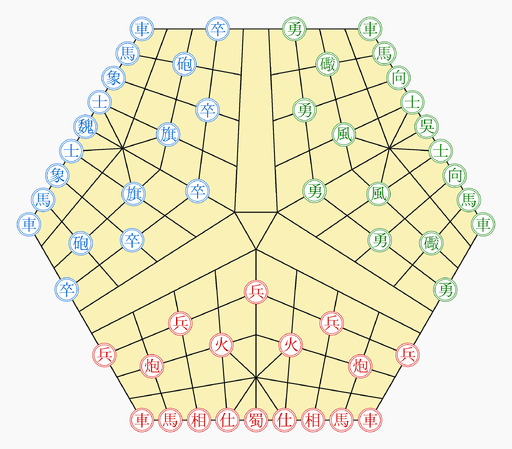
Joc dels tres regnes
Ihardlythinkso, CC0, via Wikimedia Commons
Els escacs per a tres jugadors tenen
sens dubte el seu origen a la Xina, on el
Sanguo Qi (三國棋),
El joc dels Tres Regnes,
per a tres jugadors, va ser dissenyat per a recordar el període dels
Tres Regnes (221–264 DC), i
possiblement es remunta al segle XII. Com a variant del Xiangqi, les
peces es posicionen en les interseccions de les caselles, i un riu
separa les posicions dels oponents.
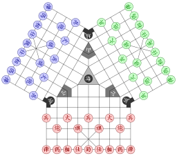
Joc dels tres amics
Mliu92, CC BY-SA 4.0, via Wikimedia Commons
Una altra variant posterior, de final del segle XVII, és el
Sanyou Qi (三友棋),
El joc dels Tres Amics,
molt similar, però hi ha una certa continuïtat entre les caselles,
desapareixent el riu, encara que hi ha caselles marcades com a mar,
muntanya o ciutat, separant les forces dels oponents.
A Europa hi ha constància de versions d'escacs per a tres jugadors des de
la versió de Philip Marinelli (1722), encara que el tauler simètric
va arribar amb la versió de S. Waider (1837), que
a més il·lustrava la portada del llibre
Chess Eccentricities de
George Hope Verney.
Ja en el segle XX, encara que no ha despertat major interès, la
incorporació del
tauler hexagonal va permetre definir una geometria més apta per
a distribuir tres jugadors, tal com ja havia fet la més antiga de les
variants per a tres jugadors,
els escacs dels tres regnes
(Sanguo Qi). En un tauler amb aquesta geometria es poden definir
les caselles tant deformant caselles quadrades, incorporant caselles
hexagonals, o fins i tot mitjançant caselles triangulars.
Una solució per a abordar el problema de la diplomàcia és acabar
el joc després de guanyar un dels jugadors amb un escac i mat,
considerant com a perdedors als altres dos... però fins i tot aquesta
situació és problemàtica, ja que és diferent donar escac i mat
al jugador següent en el torn, o a l'altre, que té l'oportunitat de ser
salvat pel jugador que té el torn, però també aquest jugador pot
incorporar-se a l'escac i mat, i tindríem dos jugadors
guanyadors si tots dos amenacen simultàniament al rei. Per tant,
en la pràctica, és molt difícil evitar que dos jugadors uneixin les seves
forces contra el tercer.
Un cas particularment interessant és la incorporació de tres jugadors en uns
escacs circulars, un disseny de George Hope Verney que apareix en el seu llibre
Chess Eccentricities. En aquest cas es fa molt més evident que
la batalla natural esperada és contra el jugador al qual li correspon
el següent torn, generalment en sentit invers a les agulles del rellotge.
Es pot provar una versió actualitzada en
https://greenchess.net, encara que les regles no
corresponen exactament amb les de Verney, que fins i tot definia
l'enroc.
Variants dels escacs per a quatre jugadors
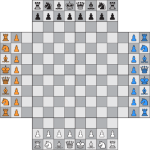
Escacs per a quatre jugadors.
Marcin Jahr, Poland, Public domain, via Wikimedia Commons.
El problema de la Diplomàcia pot ser eliminat en els escacs per a
quatre, formant dos equips. En realitat, en la versió actual dels escacs
per a quatre, fins i tot és freqüent que únicament s'enfrontin dos jugadors,
prenent cada jugador dos conjunts de fitxes aliades. La diferència entre jugar
dues parelles o quatre jugadors és, en realitat, molt gran, i si no es juga
per parelles, i juguen quatre persones, ens trobem de nou amb el problema de
la Diplomàcia.
Ja en Chess EccentricitiesGeorge Hope Verney esmenta múltiples variants dels escacs per a quatre;
gran part d'elles comparteixen el mateix tauler, i es diferencien en les regles,
particularment els casos d'escac, el moviment dels peons i la seva promoció,
atès que els peons enfrontats pertanyen a la parella de companys en el joc,
i determinar què succeeix una vegada un jugador ha perdut perquè ha rebut un
escac i mat: acaba el joc?, es retiren les peces i es continua?, es
continua, però es mantenen les peces?...
Així com els escacs per a tres jugadors ha acabat sent poc més que una
curiositat (encara que s'ha comercialitzat en diverses ocasions), els
escacs per a quatre jugadors ha presentat major interès; des de la seva creació,
el mateix Verney va fundar el club Four-Handed Chess
en 1885, que es va mantenir fins a la segona Guerra Mundial. Posteriorment, es va
reprendre un cert interès en la dècada de 1960, i en l'actualitat a causa de la
disponibilitat del joc mitjançant internet a través del servidor
chess.com.
Les regles d'aquests escacs generalment prohibeixen la comunicació entre companys
d'equip, encara que alguna variant, ja citada per Verney, permetia alguna
comunicació, limitada, mai suggerint moviments concrets. Això, avui dia, és molt
poc viable, ja que sovint els jocs són en línia, i no pot controlar-se la
comunicació entre jugadors. En
wikibooks pot trobar-se més informació.
També trobem en el llibre de Verney diferents grandàries de tauler,
però la variant més diferenciada en aquest aspecte és la variant russa
amb fortaleses, i, naturalment, la versió dels
escacs circulars per a quatre jugadors, un
disseny de Verney que apareix
en el seu llibre Chess Eccentricities. Els escacs
circulars tanquen molt més les peces, de manera que la batalla queda molt
més determinada entre jugadors amb torns consecutius... habitualment els
torns es corresponen amb el sentit invers a les agulles del rellotge, i,
en general, haurem de defensar-nos del jugador amb el torn anterior,
i atacar al del torn posterior.
En els escacs circulars, un dels inconvenients és el desequilibri de les
peces, ja que les peces menors perden potència, fins i tot el Cavall,
però sobretot l'Alfil, mentre que les Torres augmenten la seva
potència. No obstant això, agregant més peces al tauler, i part d'elles aliades,
la potència de les Torres queda limitada de manera natural, de manera
similar a la falta de mobilitat de les Torres en un tauler ortodox quan
encara hi ha gran quantitat de peces en joc. En els escacs circulars per a
quatre la mobilitat de les Torres limita la potència que poden tenir
en el tauler buit, equilibrant-se, almenys fins a mig joc, davant unes peces
menors que perden potència.
En la meva opinió els
escacs circulars per a quatre jugadors són la millor
versió d'escacs per a quatre, després del
passapeces, i també la
millor versió d'escacs circulars amb regles modernes
(alfil i dama); fins i tot, en fer més gran el cercle, es
visualitzen millor els moviments de l'alfil.
Encara que les regles no es corresponen exactament amb les de Verney,
es pot provar el funcionament d'una versió actualitzada dels
escacs circulars per a quatre en
https://greenchess.net.
Variant russa per a quatre jugadors amb fortalesa
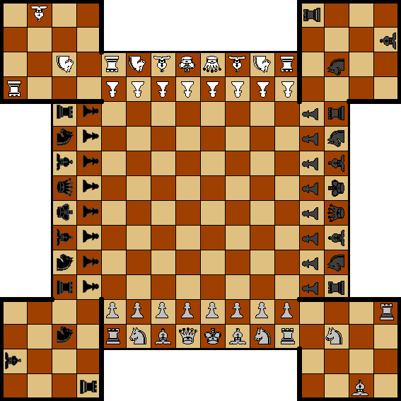Variant russa per a quatre jugadors
amb fortalesa.
Els escacs russos per a quatre amb fortaleses únicament agrega dues files
per a posicionar les peces, disminuint la grandària del tauler, respecte del
tauler habitual per a quatre jugadors, en 8×4=32 caselles, però agrega 4 fortaleses
amb 16 caselles cadascuna, és a dir 16×4=64 caselles en les fortaleses, que sumades
a les 64 caselles addicionals, queda un total de 192 caselles, en lloc de les 128
que té habitualment un tauler d'escacs per a quatre. Aquests escacs el juguen
dues parelles de jugadors. Aquestes fortaleses a més tenen uns
murs que limiten l'entrada, per a evitar l'accés des del bàndol enemic, i contenen
unes fitxes addicionals del jugador: una Torre, un Cavall i un
Alfil, que si correspon blanc a un jugador, correspondrà negre a la seva
parella. Aquestes peces addicionals inicialment es posicionen en la fortalesa del
jugador, en qualsevol posició, però respectant el color de l'Alfil.
Una estratègia que se cita és realitzar l'enroc (curt), i desplaçar el Rei
a la fortalesa, sent aquest el lloc en el qual pot protegir-se millor. Les
fortaleses d'aquests escacs no tenen relació amb les ciutadelles del
Xatranj, com les del Xatranj
de Tamerlà, i en aquest cas es tracta de simples extensions del tauler, amb
l'excepció de la presència dels murs.
El primer esment per Coxe a aquests escacs russos per a quatre jugadors
apareix citada i datada (1784) en Chess Eccentricities, encara que la
data que referencia Verney associada al joc és 1850, data en la qual
van ser publicades les regles completes, encara que en algun punt encara
existeix alguna ambigüitat. Aquesta variant també va ser descrita breument
per Butrimov (1821), però no es publiquen les regles completes fins a
Petroff (1850), qui narra que el seu avi explicava que
Catalina la Gran (1729–1796) jugava a aquests escacs.
Detalls en l'article
Russian four-handed chess:
myths and misconceptions de Georgi Markov
aparegut en Board Game Studies Journal nº9 2015. També
accessible en http://history.chess.free.fr.
Passapeces
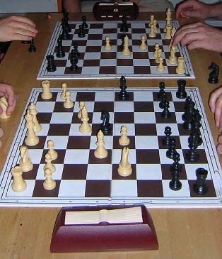
Passapeces.
Daniel Shantsev, Public domain, via Wikimedia Commons.
Aquesta variant és particularment popular, doncs permet una entretinguda partida
d'escacs
per parelles,
per a quatre jugadors. Es juga en dos taulers, i les peces capturades pel teu company en
l'altre tauler, les pots incorporar en el teu joc en comptes de moure una peça, sempre
sense fer mat en incorporar la nova peça.
Es permet comentar les jugades entre els jugadors del mateix equip, i
generalment es juga amb rellotge (dos rellotges, un per a cada escaquer), en partides
llampec o ràpides, on els peons no promocionen, i es retiren de
l'escaquer quan arriben a la vuitena filera. Pot haver variants del joc, però el més
freqüent quan es juguen partides llampec és que guanyar en un dels dos escaquers comporta
la victòria per a la parella de jugadors, i s'acaba el joc.
Probablement, entre els escacs multijugador, és la variant que es manté més a prop dels escacs,
doncs en les variants multijugador sempre hi participa un component de Diplomàcia, que en
la variant del passapeces queda sota control, més encara que en els escacs per a quatre
jugant per parelles; el passapeces és possiblement la variant multijugador que
més preserva l'esperit dels escacs.
A vegades s'han presentat escacs per a sis o fins i tot vuit jugadors.
En general aquests jocs han quedat en l'oblit com a experiments sense
gran acceptació. No obstant això, el cas que destaca és el xinès
Qiguo Xiangqi (七國象棋),
El joc dels Set Regnes,
un joc per a fins a set jugadors inspirat en els escacs, tot i que també poden jugar-ne
menys jugadors. En aquest joc, demanar ajut a un dels contrincants que no sigui part de
la pròpia aliança, requereix que el jugador es prengui un got de licor; i existeixen
regles similars, per a rectificar un moviment, si es realitza un moviment incorrecte,
o per a sol·licitar a l'aliança un atac. La finalitat del joc és capturar els generals
enemics, però també es guanya per punts obtinguts per les peces capturades.
El joc data del segle XI, i va ser dissenyat pel ministre imperial i historiador
Sima Guang per recordar els
Set regnes combatents (403–221 AC).
Com tots els escacs (i jocs afins) d'extrem orient (Xina, Japò, Corea, fins i tot
Vietnam), es juga fent servir les línies per a moure les fitxes, i els vèrtexs per
a col·locar-les.
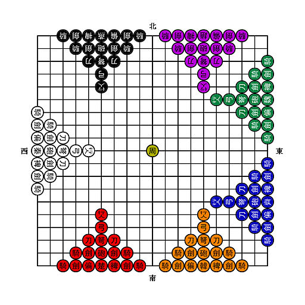
Qiguo Xiangqi (七國象棋),
九翼天使, CC BY-SA 3.0, via Wikimedia Commons
Un jugador és eliminat quan el seu General, o onze de les seves peces que no siguin el
General, són capturades. Un jugador guanya quan captura 30 peces que no són
Generals,
o dos Generals. En el centre es posiciona l'Emperador (en el dibuix, en groc),
una figura neutral que no es mou d'aquesta posició, ni es pot capturar.
Les peces de cada jugador són
1 GGeneral: Mou com una Dama.
1 DGGeneral Adjunt (Canceller):
Mou com una Torre. Equivalent al Carro de guerra del
Xiangqi.
1 OOficial: Mou com un Alfil.
1 AArquer: Mou com una Dama, però només un
màxim de 4 caselles.
1 CBBallester: Mou com una Dama, però només
um màxim de 5 caselles.
1 CACanó: Mou ortogonalment com la torre; captura
ortogonalment, però fent servir una peça intermèdia, amiga o enemiga, com a pantalla.
El mateix que el canó del
Xiangqi.
4 CCavall: mou primer un pas ortogonalment
i després segueix d'un a tres passos diagonalment cap a fora.
No pot saltar, i altres peces en el seu camí li poden impedir el moviment.
2 SSoldat amb espasa recta (Jian): Mou una
casella en diagonal.
4 BSoldat amb espasa (Dao): Mou una casella
ortogonalment.
1 DDiplomàtic (Intermediari): Mou com una
Dama,
però no pot capturar, ser capturat, ni donar escac. Es fa servir com a defensa, o com a
pantalla pels atacs amb el canó.
Escacs hexagonals
Llibre 'First theories of Hexagonal Chess' (1974)
Els escacs hexagonals són una variant dels escacs que es juga en escaquers formats per caselles de forma
hexagonal, que anomenarem hexcacs,
i per extensió hexcaquer al
tauler.
Varen ser inventats per Władysław Gliński l'any 1936.
Aquesta variant dels escacs són els coneguts amb el terme genèric Escacs Hexagonals.
Hom considera Lord Baskerville l'autor, en 1929, de la primera versió hexagonal d'escacs, tot
i que només era un prototip. Prèviament, en 1853, Thomas Hanmer Croughton inventà un joc que
es jugava en un escaquer hexagonal amb peces d'escacs, però l'objectiu no era fer mat al rei; un cas
semblant va ser Hexagonia, un joc comercial que va aparèixer en 1864.
Sigmund Wellisch, ja en 1912 presenta uns escacs hexagonals
per a tres jugadors, però els
moviments diagonals
encara no hi eren definits. Molt més tard, en 1929, va ser quan Lord Baskerville inventà el
prototip d'escacs hexagonals on calia fer mat al rei de l'oponent per guanyar
la partida. Aquests escacs s'anomenaven senzillament Escacs Hexagonals, i feien servir un
escaquer rectangular, amb 83 escacs hexagonals en onze fileres, alternant fileres de 7 i de 8 escacs.
Els escacs eren de tres colors diferents: blau, vermell i blanc, i s'hi jugava amb el mateix conjunt
de peces que els escacs ortodoxos, situant els dos alfils d'un jugador en un color i els alfils
de l'altre jugador en un altre color; així, els alfils d'un jugador no podien capturar els alfils de
l'altre jugador, i, a més, el tercer color no podia ser abastat per cap alfil. El projecte de
Baskerville havia estat presentat prematurament i amb poc estudi del joc i les seves
posibilitats.
En 1936 Władysław Gliński va resoldre els problemes que s'havien presentat en el prototip de
Baskerville, presentant un nou disseny. Els Escacs Hexagonals ara tenien un escaquer
hexagonal en forma d'hexàgon regular de sis hexcacs per a cada costat, amb un total de 91
hexcacs,
per al qual Gliński establí una notació algebràica. Cada jugador tenia tres alfils, un per a cada
color, i tots els peons hi eren a igual distància de la promoció.
A més, Gliński estudià casos on la promoció d'un peó és inevitable, l'oposició,
el mat del boig, i els
finals amb Dama,
amb Torre, amb dues i amb tres peces menors. El joc havia estat curosament dissenyat.
Amb la guerra, la popularitat trigà un temps, i es presentaren públicament en el
Festival of
Britain de 1951. Finalment
varen ser un èxit en la dècada de 1970. Arribà a
haver-hi més de mig milió de jugadors, i es vengueren més de 130,000 escaquers; s'en van crear
associacions
en el Regne Unit: en 1976 la BHCF
(British Hexagonal Chess Federation), i en 1980 IHCF (International Hexagonal Chess
Federation). El joc fou molt popular a l'Europa Central, particularment a Polònia, país originari de
Gliński, però també a Londres, lloc on va viure i des d'on es va difondre el joc fins a Febrer de 1990,
data
de la seva mort i decadència del moviment, que en 1996 traslladà l'IHCF de la Gran Bretanya a Hongria.
Escacs hexagonals de Gliński
Posició inicial en els
escacs hexagonals.
L'escaquer en forma d'hexàgon regular amb 91hexcacs queda format per
hexcacs de tres colors diferents, de manera que no s'hi
toquin els hexcacs d'un mateix color. Gliński anomenà els colors clar,
fosc i medi, quedant el color medi per a l'hexcac
central; així, són 30 hexcacs clars, 30 hexcacs foscos
i 31 de medis.
De vegades els aficionats han fet servir dos colors, com ara blau i vermell,
a més del blanc, però tot i que aquesta distribució de colors es correspon més amb la posterior
variant de McCooey, l'elecció dels colors no afecta el joc. Tanmateix, un escaquer
oficial tindrà el color medi en el hexcac central.
Les onze columnes s'anomenen fent servir les lletres de l'alfabet llatí, des de a fins a
ela. Les files obliqües es numeren des d'u fins a onze a totes dues bandes,
fent servir la numeració de les files obliqües en un sentit en la part esquerra de l'escaquer, i
les obliqües de l'altre sentit en la part dreta, dividint l'escaquer per la columna central per
a la numeració.
Les peces són les mateixes de les dels escacs ortodoxos, amb la incorporació d'un peó i d'un
alfil per al color addicional. El moviment de les peces es defineix de forma perfectament
equivalent als escacs ortodoxos, una vegada es defineixen els
moviments ortogonals
com a els sis moviments que segueixen les sis direccions dels costats d'un hexcac, i els
moviments diagonals
com els moviments que segueixen les direccions dels sis vèrtexs, tot seguint
hexcacs del mateix color. Aquesta perfecta equivalència es trenca pel cas del Peó; per a
la correspondència amb els escacs ortodoxos li haurien de correspondre tres moviments de captura,
i un moviment i mig sense captura.
El moviment del Peó queda definit per un únic moviment d'un hexcac en davant seguint la
fila
de la seva columna, amb l'opció de moure dos hexcacs quan es troba en les posicions d'inici,
indistintament que hagi estat mogut. Hi tenen dos moviments de captura, definits com els
moviments
ortogonals oblics en davant, i això fa que un peó que ha fet un moviment de captura pugui
restar
en una posició d'inici dels peons, tot i haver fet un moviment de captura. Com que es defineixen
moviments dobles
per als peons, queda també definida la
captura al pas, i quan un
peó fa un moviment doble travessant un hexcac on podia haver estat capturat per un peó del
contrincant, aquest pot fer el moviment de captura en el següent moviment, tot i que la peça
no es troba en aquest hexcac.
El posicionament inicial de les peces deixa els tres Alfils en la columna central, i els
peons d'angle, formant en realitat una
estructura de peons
tots defensats, i amb la propietat que així tots els peons queden a la mateixa distància de la
promoció. El que més
estranya quan es veu la disposició per primera vegada, és que queden hexcacs buits entre els
peons i la resta de les peces, sent aquesta característica important en el desenvolupament
inicial del joc.
El ràtio de peces queda molt equilibrat respecte els escacs ortodoxos; la situació de l'alfil
s'equilibra amb la introducció d'un tercer alfil, però la resta de peces incrementen la potència
i mobilitat en un factor de 150%, gairebé el mateix que s'incrementa la mida de l'escaquer, el
142%. Els peons no incrementen mobilitat, ni la seva potència si la mesurem en nombre de
moviments, però la captura en ortogonal i el seu posicionament inicial en realitat dota els peons
de més potència, amb cadenes de peons que no deixen files entre ells, només línies
diagonals; tot i aixó, i comptant que el nombre de peons s'incrementa en u, potser són els peons
l'apartat que més se separa dels escacs ortodoxos.
Escac continu, ofegat i taules
Les taules, o empat
entre tots dos contendents, en competició representen ½ punt per a cada jugador, i es
produeixen:
Quan el mateix moviment el repeteixen tres vegades tots dos jugadors,
no necessàriament consecutives.
Quan es donen 50 moviments consecutius de cada jugador
(cincuanta jugades),
sense cap captura ni moviment de cap peó.
En canvi, l'ofegat
es considera una victòria per la mínima, que en competició només atorga ¾ de punt
al guanyador, concedint ¼ de punt al jugador ofegat.
Altres regles
Peça tocada, peça moguda
Si una peça en joc es toca, s'ha de moure si és del teu bàndol,
o capturar-la, si és del contrari.
Un moviment fet no es pot rectificar una vegada s'ha deixat la peça en l'escaquer,
però un moviment
invàlid o il·legal s'ha de rectificar inmediatament.
Condicions que fan perdre una partida a un jugador:
Desordena la posició de les peces en joc de l'hexcaquer.
No accepta reprendre un joc interromput en un temps raonable.
Quan es fa servir rellotge i excedeix el temps.
Quan no compleix un requeriment legal de l'oponent.
Es nega a complir les regles.
Altres variants d'escacs hexagonals
Tot i ser la variant de Gliński la línia principal de la modalitat dels escacs jugats en
graelles d'hexagons, quina té legítimament el nom de Escacs Hexagonals, i va organitzar
l'IHCF, és cert que existeixen moltes altres variants. La
primera variant posterior a Gliński va ser la de Shafran, que podriem qualificar
d'intent fallit, i tot que sempre es menciona, probablement per ser la primera alternativa,
no fa cap aportació respecte la versió original de Gliński.
Els motius de l'aparició de posteriors variants és principalment les modificacions de la mida,
forma i orientació de l'escaquer, la disposició inicial de les peces, i la definició dels
moviments del Peó. Però és en realitat és aquest últim, la definició dels moviments
del peó, el principal motiu de base, perquè trenca l'equivalència amb els escacs ortodoxos.
David Brine Pritchard,
que fou un escriptor britànic de llibres d'escacs i d'altres jocs com el Go, diguè que,
probablement, els escacs hexagonals ideals encara resten per ser inventats. Pritchard és
l'autor de l'Enciclopèdia de variants dels escacs (The Classified Encyclopedia of
Chess Variants), on es descriuen més de 1.400 variants d'escacs.
Shafran
Posició inicial
dels escacs de Shafran
En 1939 el geòleg Sovietic Isaak Grigorevich Shafran inventà els Escacs
hexagonals de Shafran, registrats l'any 1956. Es mostraren a
l'Exibició
Mundial d'Escacs de Leipzig, en l'any 1960, però van quedar eclipsats per l'èxit
que
tingueren els escacs de Gliński, i en concret pel seu èxit a occident (Londres).
L'escaquer tenia forma d'hexàgon irregular, amb nou columnes
i deu files
obliqües; en total 70 escacs. Les columnes s'anomenen fent servir
lletres, i les files obliqües en un sentit es numeren, resultant una designació dels
hexcacs
molt asimètrica.
Degut a ser l'escaquer un hexàgon irregular, no n'hi ha escac central. Cada jugador té la
dama situada a la seva esquerra, mentre que a la dreta posiciona dos alfils; observar
que
les dames no es troben enfrontades, i tenint el rei en l'hexcac central és possible
l'enroc
amb qualsevol de totes dues torres. Les peces es posicionen seguint la forma de
l'escaquer,
quedant els peons a diferents distàncies de l'hexcac de promoció, i prohibint als peons
dels
flancs el moviment inicial doble.
Moltes característiques havien estat resoltes més convenientment per Gliński en el
disseny dels Escacs Hexagonals, fins i tot la numeració dels escacs necessària
per la
notació algebraica, més convenient la de Gliński que numera les files obliqües en
un
sentit per a una meitat de l'escaquer, i les obliqües en l'altre sentit per l'altra
meitat.
Shafran va donar importància a una versió similar als escacs ortodoxos; una prova
és
que el ratio de peces respecte del nombre d'escacs en l'escaquer és molt similar: 36
peces /
70 escacs = 0.51, mentre que en els escacs ortodoxos són 32 peces / 64 escacs = 0.5.
McCooey
Posició inicial en
la variant de McCooey.
Entre 1978 i 1979, tot i la llavors recent creació en 1976 de la BHCF, Dave McCooey i Richard Honeycutt desenvoluparen una altra variant d'escacs
hexagonals
fent servir un escaquer de 91 hexcacs; podriem dir que és una variant en el mateix
escaquer del disseny de Gliński per als Escacs Hexagonals. Les
opinions són dividides; quan en começar el mil·lenni quedava una tradició de més de 40
anys d'Escacs Hexagonals i la popularitat havia minvat notòriament, se sentien
veus defençant que la variant de McCooey i Honeycutt representava una
millora per als Escacs Hexagonals, malgrat que McCooey afirma que,
en el moment que van dissenyar el joc, no els coneixia.
La variant de McCooey, de certa manera, la podriem definir com aquella
que qüestiona el moviment dels peons establert per Gliński;
la captura dels peons ara es defineix amb un moviment diagonal, en realitat
més intuitiu i similar als escacs ortodoxos, però perdent gran part del joc dels peons.
Cal també senyalar una disposició inicial de les peces més compacta, que perd algunes
maniobres prou interessants existents en les obertures dels escacs de Gliński,
i també incorpora dos peons menys per a cada jugador, set, en comptes de nou.
El peó central, en la columna F no té la capacitat de moviment doble, per
evitar afavorir les blanques en el moviment inicial.
El motiu per al moviment dels peons, Gliński l'havia estudiat detingudament, i és
la necessitat d'aconseguir
estructures
de peons sense deixar files entre ells que permetin
un atac amb peces de moviment ortogonal, l'equivalent als escacs ortodoxos, on els
forats que queden de les estructures de peons només permeten l'accés diagonal.
Tot i això, la versió de McCooey resulta molt jugable, perquè la potència de les
peces en uns escacs hexagonals de 91 hexcacs ràpidament es desenvolupa, i de seguida
entrem en el mig joc.
La disposició inicial més compacta permet més mobilitat en el centre, i certa distància
dels peons amb els de l'oponent, però en la ràpida entrada en el mig joc la disposició de
Gliński incorpora uns peons quasi posicionats, encadenats, mentre que en la
versió de McCooey, a més de tenir menys peons, perden la potència que els hi
proporciona la capacitat de tancar les files fent servir fileres de peons.
També es pot observar que la disposició inicial en la variant de McCooey deixa
el peó de la columna F sense defensa, un punt que és particularment sensible a
un atac de cavall.
El cert és que són versions molt pròximes, però les diferències prou importants per fer
que siguin jocs diferents. Amb el mateix material podem jugar a tots dos; si bé, ens
caldran nou peons per jugar a la versió de Gliński, mentre que McCooey
només en fa servir set.
Personalment, sempre m'he decantat per la versió de Gliński, tot i que
hi trobo desconcertant el comportament dels peons. Em sembla més interessant la versió
de Gliński, però el veritable motiu per aquesta elecció sempre ha estat el fet
que els escacs hexagonals són molt desconeguts en Catalunya, i en general en tota
Espanya, així que si li presento a algú el joc, em trobo en la obligació de fer-ho amb la
versió de Gliński, i quan hem jugat moltes partides és perquè hem jugat a
C'escacs després, tot i que requereix canviar la mentalitat de la captura
dels peons.
Es va contactar amb Dave McCooey durant el disseny de C'escacs,
i en proporcionà consells que van determinar alguns canvis, particularment en el
moviment dels peons, la numeració dels hexcacs i la peça de l'elefant,
llavors encara no definida.
Mini Hexchess
Un petit escac en un hexcaquer regular de 37 hexcacs permet un joc curt i relaxat,
adequat com a passatemps de viatge. Fa servir preferentment el color blanc per a l'hexcac
central,
i dos altres colors; l'únic alfil que tenen els jugadors és el blanc.
El Mini
Hexchess va ser inventat per Dave McCooey, com a regal
a Hans Bodlaender, com ells mateixos expliquen en les pàgines de
Chess Variants,
lloc web on mantenien contacte.
Podeu provar el passatemps imprimint
l'hexcaquer que
podeu descarregar, i també les regles hi són disponibles en format PDF
per descarregar; consulteu en
El Racó
d'aquest lloc web.
Hexofen
△ = ♗
◯ = ♘ ⬡ = ♖ ☆ = ♕
Disposició inicial de les peces i numeració dels hexes en Hexofen.
Valeriy Trubitsyn presenta
Hexofen, que segueix les normes de la
de McCooey per al moviment de captura dels peons.
En aquesta ocasió s'introdueix un tercer Cavall i
onze Peons en una disposició inicial de les peces de manera que els peons
cobreixen totes les columnes, però quedant uns d'altres a diferent distància de l'hexcac de
promoció.
L'interés d'aquesta variant es troba en la incorporació de més peons, i la seva
distribució per totes les columnes de
l'escaquer, semblant a com ho fan els escacs ortodoxos o la variant hexagonal de Shafran.
Trubitsyn dona importància al ràtio de peces, que és de 0.46 (42/91),
de la mateixa manera que ho havia fet Shafran, però la proporció de peces probablement
s'ha de correspondre amb la nova topologia i diferent mobilitat,
i com a exemple podem pensar en la situació de l'alfil, que s'equilibra
amb la introducció d'un tercer alfil, però la resta de peces incrementen la potència
i mobilitat en un factor de 150%, gairebé el mateix que s'incrementa la mida de l'escaquer
fins a 91 hexcacs (142%). Tot i això, es cert que en els escacs hexagonals és molt
qüestionable el nombre i comportament dels peons, i en aquest cas el nombre de peons
s'ha mirat d'equilibrar, però decantant-se per la captura diagonal, que no
incrementa la potència dels peons en la mateixa mesura que la resta de peces, i tampoc
la seva mobilitat, a més de l'inconvenient de l'estructura dels peons, que ja
s'ha comentat en la descripció de la variant de McCooey.
Trubitsyn defineix una numeració dels hexcacs dividint l'escaquer en tres parts, i
cada hexcac es numera depenent de la part a què pertany fent servir el zero per a les
files (obliqües) que delimiten les zones; així ens trobem que les files comuns tenen
doble denominació: A‹0,5› = C‹5,0›, A‹5,0› = E‹0,5› i E‹5,0› = C‹0,5› ; no només per al valor
cinc d'aquest exemple, sinó per a totes les files zero definides entre el centre i una de les
cantonades. Aquest mode de numeració no introdueix gaires avantatges, si bé és cert que és
simètric per a tres visions de l'escaquer, però no per a les dues posicions dels jugadors.
Aquesta configuració delata el seu ús per a un joc de tres jugadors, el
Diplomat, on aquesta numeració sí és
molt pràctica.
Aquesta preocupació per una numeració diferent de la definida per l'IHCF denota
alguns inconvenients en la numeració actual dels escacs hexagonals, motiu de la
diferent numeració que fa servir la notació
de C'escacs.
La incorporació de símbols geomètrics representant les diferents figures per als
diagrames gràfics és enginyosa, però introdueixen més soroll en la documentació.
És més pràctic fer servir gràfics de les peces amb llicència Freeware
(alfaerie).
També avui dia Unicode incorpora com a caràcters els símbols dels escacs
ortodoxos i les incorporacions dels
escacs de Capablanca.
Una línea de peons amb dos peons avançats en las columnes cuarta i octava;
és a dir, blanques: a32 i e23, negres: c13 i c31.
La dama, per ser la figura més activa, es posiciona sempre en la cantonada
de cada jugador; blanques: e05, negres: c55.
La resta de peces es troben en la segona, tercera i cuarta
linies,
en ordre aleatori.
Els tres alfils es posicionen en diferents colors.
C'escacs
C'escacs
Disposició incial de les peces.
C'escacs es vol definir com a uns grans escacs
hexagonals,
mantenint-se proper a la línia dels Escacs Hexagonals (en el sentit IHCF, variant
de Gliński). Tot i això, no segueix el moviment dels
Peons
dels Escacs Hexagonals IHCF (Gliński):
El moviment de captura dels peons
es fa en un moviment diagonal, el mateix que en la
variant de McCooey.
C'escacs incorpora més mobilitat per als Peons:
en totes tres direccions ortogonals endavant.
S'introdueix la regla addicional de la captura del peó esquiu que permet al jugador
cert bloqueig dels peons de l'oponent en una columna.
Aquesta nova regla va semblar preferible a una regla de bloqueig a l'estil de
Brusky, que és una mera prohibició
i excepció a les regles de moviment.
Com a variant de gran hexcaquer, permet
moviments dobles
per als peons quan el moviment el fan endavant per la columna. El moviment doble només
és permés en una de les tres direccions de moviment dels peons; així, el peó té en total
quatre moviments possibles sense captura.
Per tant, la captura al pas
es dona en tot l'hexcaquer, quan un peó fa un moviment doble.
Quan el moviment del peó es fa des de les posicions inicials permet el
moviment triple, excepte en la
columna central i en les dues posicions dels flancs.
El mateix que els moviments dobles, el moviment triple només és permés
en els moviments per la columna.
El motiu per limitar el moviment triple en la columna central és impedir a les
blanques prendre l'hexcac central en la primera jugada.
Observar que també en la variant de
McCooey
està prohibit el moviment doble per ocupar l'hexcac central.
Els peons dels flancs ja tenen una posició avançada respecte dels altres,
i per això no es permet el moviment triple des de la posició inicial dels flancs.
La solució a la problemàtica de la
estructura
de peons, en C'escacs es busca amb l'introducció d'una nova
peça,
l'Elefant.
El nombre de peons és de tretze, amb l'important reforç de quatre Elefants.
Però potser un dels trets més característics de C'escacs és que incorpora les
peces clàssiques dels escacs de Capablanca,
amb moviments hexagonals:
el Canceller amb el nom de
Drac,
i l'Arquebisbe amb el nom de
Pegàs.
Els Elefants, gran reforç per als febles peons hexagonals, van ser inspirats
pels
elefants (Sin, o Gaja) presents en el
Sittuyin, els
escacs birmans. El mateixos moviments, com era d'esperar, els trobem
en l'alfil de ASEAN-CHESS, els escacs del sud-est asiàtic, doncs
unifica, per preservar-los, el Sittuyin i altres variants d'escacs d'aquesta part del món, hereves
directes
del Xaturanga.
També trobem aquests moviments en el General de Plata (銀) del
Shōgi.
En aquest lloc web es pot trobar informació de C'escacs:
Les regles,
disposició inicial i moviments de les peces.
Detalls de la creació el joc,
la seva evolució, i les diferents motivacions per als
moviments o els noms de les peces.
Ràtio de les diferents variants
Variant
Tauler
Peces
Ràtio
Escacs
64
32
0.5
Shafran
70
36
0.51
Hexofen
91
42
0.46
Gliński
91
36
0.4
McCooey
91
32
0.35
C'escacs
169
54
0.32
Variant
Tauler
Peons
Ràtio
Cadena
Escacs
64
16
0.25
✓
Shafran
70
18
0.26
✕
Hexofen
91
22
0.24
✕
Gliński
91
18
0.20
✓
McCooey
91
14
0.15
✕
C'escacs
169
22+8
(+8) 0.22
✓
En C'escacs se sumen els elefants;
es compensa sumant cada elefant com a dos peons. Cadena implica obstruir els moviments horitzontals
Fan falta elefants per construir una d'aquestes cadenes.
Variant
Tauler
Peces
Ràtio
Compensat
Escacs
64
16
0.25
-
Shafran
70
12+6 (-2)
0.23
0.31
Hexofen
91
14+6 (-2)
0.20
0.27
Gliński
91
12+6 (-2)
0.18
0.24
McCooey
91
12+6 (-2)
0.18
0.24
C'escacs
169
18+6 (-2)
0.13
(+4) 0.21
Els tres Alfils hexagonals es compten com a dues peces.
En el compensat:
- Les altres peces es compten com a 1.5 peces cadascuna.
- En C'escacs se sumen quatre, per les sis peces potents.
El ràtio és un indicador d'ocupació del tauler. S'ha de considerar que en un tauler hexagonal
(hexcaquer) totes les peces, excepte els peons i els alfils, incrementen en 150% la seva
mobilitat i potència. Podem fer una compensació per igualar condicions on els tres alfils
els equiparem a la parella en els escacs ortodoxos, i un increment del 150% en la resta de
peces per fer el càlcul d'un ràtio compensat.
En C'escacs trobem sis peces de gran potència,
tres per a cada jugador. Tot i que el Pegàs hexagonal
té una potència molt menor que Arquebisbe de Capablanca, el Drac és
equivalent a una Dama. Per compensar aquestes sis peces addicionals de potència
extraordinària se sumen quatre punts en el nombre de peces compensat.
Fer una compensació per als peons és molt més complex i ho evitarem, però s'ha de recordar
que
en general es perd la mobilitat de ½ moviment i un moviment de captura, a més de la seva
incapacitat per construir estructures de peons; No és així en el cas de
Gliński,
on és possible desenvolupar estructures de peons sòlides, i la pèrdua de potència i
mobilitat es compensa canviant les captures diagonals per les
captures ortogonals dels peons.
Però és molt difícil avaluar numèricament aquestes compensacions; en el cas de
C'escacs podem sumar els Elefants al número de peons,
i considerant la seva més gran potència podem fer una compensació comptant cada
Elefant
com a dos peons; però no es considera l'increment de mobilitat dels peons.
Observem que la variant de Shafran ha mirat de preservar el ràtio de peces en
joc,
però no considera l'increment de mobilitat i potència, excepte per als alfils, que
decrementen.
En la taula es mostra el valor compensat, com a una aproximació d'aquests factors.
Llavors, les variants de Gliński i McCooey s'ajusten als valors dels escacs ortodoxes,
seguides d'un valor també molt ajustat per Hexofen.
Aquests càlculs no són més que estimacions, i és fàcil trobar arguments per
rebatre'ls. Un baix ràtio per a C'escacs no ha de sorprendre, doncs
el tauler és molt gran.
Variants amb orientació punxeguda dels hexcacs.
En els escacs hexagonals totes les peces incrementen la seva mobilitat i potència de
captura en ½, excepte els alfils i el peons, que no la incrementen,
sinó que la decrementen, amb l'excepció de C'escacs, que
incrementa la mobilitat dels peons, tot i que no els moviments de captura.
L'orientació punxeguda dels hexcacs
(pointy topped) no deixa
columnes
verticals, sinó files horitzontals i
línies verticals.
Els peons no poden avançar en línia recta per una columna, però
això permet incrementar la mobilitat dels peons a dos direccions, el doble.
La captura queda també generalment definida per les dos hexcacs en
moviment diagonal
obliquament en davant, és a dir, cap als hexcacs del mateix color de la següent
fila horitzontal. Així el nombre de moviments de captura
no queda incrementat, però tots quatre moviments deixen el peó en la següent fila
horitzontal, definint el moviment dels peons molt convenientment comparable amb els escacs
ortodoxos, i la doble mobilitat podríem dir que equilibra el fet que no incrementi els moviments de
captura.
Inicialment De Vasa va definir tres posicions de captura per als peons,
incrementant també els moviments de captura en ½, incloent-hi l'hexcac definit
pel moviment diagonal endavant al front, avançant així dues files horitzontals en la
captura. Però aquest moviment el va haver d'eliminar en una revisió posterior del joc, perquè
feia que els peons fossin excessivament potents, a més de l'asimetria que introduïa per
l'avanç de dues posicions en aquest moviment, en comptes d'una.
Da Vasa
Configuració inicial de les peces
en la variant de Da Vasa.
La variant de Helge E. da Vasa data de 1953, i es publicà per primera
vegada
en el llibre Joseph Boyer's Nouveaux Jeux d'Echecs Non-orthodoxes
(Paris, 1954). La variant de Da Vasa
considerà canviar l'orientació dels hexcacs en consideració a la mobilitat dels peons, i
per això fa servir un escaquer en forma de rombe. Aquests escacs permeten un
moviment inicial doble dels peons, i per tant captures al pas, fent servir nou peons,
just el mateix nombre que en els Escacs Hexagonals (Gliński). Aquesta
versió, donada la seva orientació en files horitzontals, també permet l'enroc.
Brusky
Configuració inicial de les peces
en la variant de Brusky.
Yakov Brusky en 1966 introdueix petits canvis, però fonamentalment
mantenint les idees de Da Vasa. En la
variant de Brusky:
L'escaquer és un hexàgon irregular.
N'hi ha deu peons (un més que en la variant de Da Vasa),
situats en la fila inmediatament posterior a les figures
Es permet el moviment de captura tot en front del peó, avançant-lo així
fins la segona fila, però només per al primer moviment del peó, si no ha estat
mogut.
Això era en realitat un compromís entre la primera versió de la variant
de Da Vasa, que permetia al peó aquesta captura en qualsevol lloc de
l'escaquer, i la versió definitiva del seu joc, quan va haver d'eliminar aquest
moviment
per incorporar massa potència en els peons.
Introdueix una regla de bloqueig d'un peó per un peó de l'oponent: un peó
queda bloquejat si un peó del contrari impedeix un dels dos moviments,
quedant així l'altre moviment invalidat.
Aquesta regla sembla una mica artificial i forçada;
probablement la regla de C'escacs de la
captura
del peó esquiu, es podria adaptar a l'orientació
punxeguda dels hexcacs, canviant aquesta regla de Brusky.
Grand Hexachess
Configuració inicial de les peces
en el Grand Hexachess.
Derick Peterson publicà les regles per al Grand Hexachess en 1997, també amb
una clara influència de la variant de Da Vasa. Ara ens trobem amb un escaquer
en un hexàgon regular amb set hexcacs a cada costat, fent un total de 127 hexcacs.
Introdueix onze peons, una característica destacable, però no permet el moviment doble
inicial ni el moviment de captura tot en front del peó, quedant les millores de
Brusky oblidades. En el Grand Hexachess, per bloquejar el moviment d'un peó
de l'oponent es requereixen dos peons.
La disposició inicial dels peons els permet ser més a prop de la posició de promoció,
que a més es permet, opcionalment, tot arribant a les files onze o dotze, sent obligatòria
en la tretze, on ja no queden moviments per al peò. És
probablement per aquesta posició inicial avançada dels peons que el moviment
doble inicial no està permès, tot i que la distància entre oponents és la mateixa que
en la variant de Da Vasa, que sí ho permetia.
Les noves peces que s'introdueixen són el Visir
(Pegàs de
C'escacs), la Màquina de Guerra
(Drac de
C'escacs) i el Duc, que combina tots els moviments:
sis ortogonals, sis diagonals i dotze com el cavall (és a dir, sumant els moviments del
Rei i
els del Cavall).
Són peces molt potents totes tres; afegint tres peons, l'alfil i aquestes tres noves peces queda
un ràtio del 46/127 = 0.36, un hexaquer força omplert (lleugerament superior a
C'escacs).
La meva opinió és que el camí per millorar la variant de Da Vasa el va
indicar Brusky. Derick Peterson introdueix un escaquer regular, un punt que encara
escapa a la variant de Brusky, però ignora les millores de Brusky, i presenta una
variant de gran escacs, quan queda encara el bloqueig del peons pendent de resoldre en
les
variants amb orientació punxeguda dels hexcacs.
En C'escacs es van fer proves amb la peça del Duc
(en les proves se li va anomenar Lleó), però resultava lenta pel gran hexcaquer, i molt
potent per incorporar-la.
Variants multijugador d'escacs hexagonals
Posició inicial dels escacs multijugador de Wellisch
i moviments de les peces.
Imatges cortesia de 響尾蛇的數學天地el món matemàtic de la serp de cascavell
(Sanke)
Existeixen també algunes variants per a tres jugadors que clamen ser
escacs hexagonals. Però, a més de recordar que el terme no s'hauria de fer servir
de manera tan grollera, la intervenció de la diplomàcia entre els jugadors fa que
parlem d'una altra mena de joc, i potser la classificació com a escacs és comparable
amb el Xaturaji, on tot i la participació de
l'atzar, doncs s'hi juga amb daus, els quatre jugadors hi juguen per parelles,
equilibrant així la intervenció de la diplomàcia.
En la meva opinió, no poden qualificar-se d'escacs jocs
per a més de dos jugadors, tot i que hagin estat inspirats en els escacs.
En realitat Sigmund Wellisch, ja en 1912, dissenyà els escacs hexagonals multijugador,
tot i que els moviments hexagonals de les peces encara no eren perfeccionats, i encara no
havia quedat definit l'Alfil hexagonal; el moviment del cavall era equivalent a una
alfersa hexagonal, i la dama combinava aquest moviment amb el moviment ortogonal de
les torres.
Un cas que recentment va tenir certa popularitat, van ser els
Escacs de Jacek Filek. Jacek Filek, de nacionalitat
polonesa, que ha comercialitzat dues versions de tauler per als seus
escacs per a tres jugadors.
Per dubtes en el moviment del cavall es pot consultar el blog d'Humbert Sanz i Vaqué.
Qiguo Xiangqi heptagonal
Deformació heptagonal d'un tessel·lat hexagonal
per al Qiguo Xiangqi (七國象棋),
i posicions inicials de les peces.
Idea original de 響尾蛇的數學天地 el món matemàtic de la serp de cascavell (Sanke)
Existeixen en Xina diversos jocs multijugador derivats dels escacs,
Sanguo Qi (三國棋),
El joc dels Tres Regnes és per a tres jugadors, i
usa un tauler hexagonal molt similar al de Filek, encara que es tracta
d'un disseny molt anterior, que probablement es remunta al segle XII.
La simetria de l'hexàgon resulta molt apropiada per a repartir el tauler
entre tres jugadors, encara que no s'usin hexàgons per a les caselles.
L'alternativa, unir tres mitjos taulers quadrats, també la van pensar els xinesos
en el Sanyou Qi (三友棋),
El joc dels Tres Amics abans que apareguessin versions
per a tres jugadors a Europa.
Però l'hexàgon té moltes més propietats, i, com hem vist, poden usar-se caselles
hexagonals per a escacs de tres, o fins i tot de sis jugadors. La geometria també
es pot distorsionar, forçant emplenar un heptàgon amb un tessel·lat
d'hexàgons; naturalment, no amb tessel·les regulars, encara que geomètricament
molt pròximes. Aquesta tessel·lació fa servir un heptàgon en el
centre, perfectament adequat per al Qiguo Xiangqi, que manté en el centre
a l'emperador.
D'aquesta manera podem obtenir un tauler heptagonal per a set jugadors, adequat
per al Qiguo Xiangqi. La versió en en un heptàgon amb un tessel·lat
hexagonal (versió de 響尾蛇的數學天地 (Sanke)
que es veu en la il·lustració), es juga fent servir les
tessel·les, els hexcacs, per posicionar les peces, com en els escacs occidentals.
Diplomat
△ = ♗
◯ = ♘
⬡ = ♖ ☆ = ♕
Disposició inicial de les peces en Diplomat.
Diplomat (Valeriy Trubitsyn, 1997), és una
variació d'Hexofen, uns escacs que es juguen
en un escaquer hexagonal de 91 hexcacs, per convertir-lo en un joc per a tres jugadors.
L'estranya numeració de l'hexcaquer ara sí té sentit, i sembla d'utilitat.
Cadascú dels tres jugadors incorpora: Rei, Dama, quatre Torres,
tres Cavalls, tres Alfils, però només vuit peons (Hexofen fa servir onze).
En total sixanta peces, vint de cada jugador, en un hexcaquer de 91 hexcacs.
En aquest joc de tres jugadors si resulta especialment útil el sistema de coordenades que
presenta
Trubitsyn, doncs la posició inicial de tots tres jugadors és perfectament simètrica en
aquesta
notació:
Els peons ara incorporen els tres
moviments
ortogonals
endavant, i quatre moviments de captura en
moviment
diagonal,
dos endavant i dos laterals. El primer moviment dels peons es permet que sigui doble, i la
promoció es dona en els
quatre hexcacs dels dos vèrtexs rivals: 45, 44, 55, 54; en total, vuit
diferents hexcacs de promoció per a cada jugador.
En Diplomat l'objectiu de fer mat als reis dels oponents, i s'estableixen els
diferents resultats possibles:
0.66 punts per a cada jugador, quan tots tres fan taules globalment.
1 punt per a tots dos jugadors qui fan taules, però han guanyat en aliança
al tercer jugador.
0.66 punts per al jugador qui fa taules amb qui ha fet mat al tercer
jugador.
1.33 punts per al jugador qui fa taules després d'haver fet mat al tercer
jugador.
2 punts quan un jugador guanya als altres dos.
Una vegada derrotat un jugador, les peces queden immòbils en els hexcacs on
havien quedat, però el joc deixa també oberta la variant on les peces del jugador
derrotat, excepte el Rei queden propietat del jugador guanyador, com ho fa
el Sanguo Qi (三國棋).
Existirà un problema per determinar si el primer jugador que perd
ha estat derrotat només per un dels jugadors o per tots dos, tant per repartir els
punts, com per prendre possessió de les seves peces si es juga amb aquesta regla.
Els pactes diplomàtics són part del joc, i poden establir-se
estratègies comuns passant-se els jugadors papers amb notes: correus
diplomàtics amb diferents graus d'aliança (durada). Potser aquestes notes
poden fer-se servir com a prova d'aliança per resoldre les casuístiques de conflicte
en derrotar al tercer jugador, en tot cas, abans d'enfrontar-se entre ells per
finalitzar el joc.
Les tàctiques per a un joc tripartit les enumera
Trubitsyn:
Mantenir l'equilibri de força; caldrà ajudar a l'oponent més feble, fins i
tot en contra dels recents acords.
Crear una coalició confiable.
Destruir les coalicions entre els altres dos jugadors.
Deixar la batalla decisiva als altres dos jugadors, i que es desgastin.
Diplomàcia sofisticada, amb veritables metes que no ha de ser revellada.
Els contractes no són inviolables; els acords generalment són a curt
termini, perquè quant més gran és el nivell d'acord, més estricte ha de ser el
control de compliment.
Cal ser flexible i descartar qualsevol dogma; no és un joc cooperatiu, sinó
un conflicte competitiu, on sorgeix el joc més cruel.
Seguir el joc més fiable:
Esforçar-se per destruir la cooperació entre els rivals, i la
formació de una coalició entre ells.
Conèixer i aplicar aquestes regles de lluita tripartita, i
apliar-les amb el coneixement que un mateix amb el temps adquireix.
Altres variants d'escacs
Omega Chess
Posició inicial d'Omega Chess
A l'any 2008 adquirí un
Omega Chess, una variant comercial dels escacs (llavors complicat
d'aconseguir a Espanya) que es juga en un escaquer de 10x10 i quatre escacs addicionals
en les cantonades. Incorpora dues noves peces: el Mag i el Campió.
És una variant aconsellable, si algú té interés per les variants d'escacs que introdueixen
noves peces, tot i que, és clar, és preferible iniciar-se amb els
Escacs de Capablanca, però, si tenim el
tauler, omega chess és una altra opció interessant, si no ens atrevim amb els
escacs de Gliński, que tenen l'inconvenient de
requerir un tauler hexagonal.
Es mostren un parell de jocs reals en el
lloc web, entre ells una
partida de Judit Polgár, quan va participar en un torneig
de demostració d'Omega Chess.
He incorporat l'apartat d'Omega Chess principalment
perquè incorpora una peça anomenada Campió, i varem fer algunes partides de
C'escacs adaptant aquesta peça als moviments hexagonals quan miravem de
perfeccionar el joc, doncs en aquell moment es feia servir el Príncep, una peça que
corresponia a la coneguda com a Home (dels Escacs del Missatger),
però fins i tot s'havia discutit l'opció d'incorporar-li, com en els Escacs de Tamerlà,
Regalia,
i per això el nom. També varem fer
proves incorporant al Príncep el salt de cavall (Duc, li anomena llavors el
Grand Hexachess), que en
C'escacs el varem anomenar Lleó, però finalment ens varem adonar
que no era el camí correcte, com, efectivament, ens va advertir McCooey.
Començaren llavors les proves amb el Campió hexagonal, però resultaren enutjoses pels salts
diagonals en l'hexcaquer, i, possiblement perquè no érem molt versats en l'Omega Chess,
ens era de poca utilitat. Així va néixer la idea dels Almogàvers, amb uns moviments inspirats
en el Campió d'Omega Chess, però simplificats, i en el tauler hexagonal. També aquesta
idea quedà descartada, i les diferents proves, juntament amb un acurat anàlisi de les necesitats del
joc, varen permetre, finalment, inspirar la nova peça en el moviment d'una peça existent en els
escacs asiàtics: l'Elefant.
Escacs aleatoris de Fischer
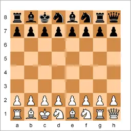
Exemple de posició
dels escacs aleatoris de Fischer.
picture: Ihardlythinkso, CC0, via Wikimedia Commons
Els escacs aleatoris de Fischer, també anomenats escacs 960,
pel nombre de combinacions de la posició d'inici possibles, són l'única variant
que la mateixa FIDE ha promocionat, organitzant torneigs internacionals.
Les obertures dels escacs clàssics han estat molt estudiades, i els primers
moviments d'una partida generalment són moviments dins del llibre, és
a dir, moviments ja estudiats com els més convenients per a una determinada
obertura, i que els jugadors senzillament memoritzen. Bobby Fischer,
qui no hi era còmode amb aquesta situació (veure
entrevista) va inventar aquesta variant en 1996, de
manera que les peces es posicionen aleatòriament; habitualment
es fan dues partides amb la mateixa disposició, canviant blanques i
negres entre els jugadors.
Existeixen 960 diferents combinacions, i això, junt amb la
elevada combinatòria dels mateixos escacs, pràcticament elimina l'opció de
les obertures memoritzades pels jugadors. Una d'aquestes
combinacions és la combinació clàssica dels escacs, però
quan surt per atzar aquesta combinació, es descarta i es tria
una altra; la combinació clàssica, però permutant les posicions
del Rei i la Dama, també es descarta (en realitat, és la
posició clàssica per a les negres); encara queden 958 combinacions.
Tots els peons fan servir les seves posicions habituals, i les peces
negres en mirall de la posició de les blanques. Per posicionar les peces
s'ha de complir que un dels alfils es posiciona en blanc, i l'altre en
negre; a més, el Rei es trobarà posicionat entre les dues Torres,
doncs aquesta disposició permet l'enroc.
Posició inicial
Per complir els requeriments, habitualment es comença posicionant les peces
blanques, primer els alfils, i es deixen els tres últims llocs per
al Rei i les dues Torres; per exemple, la proposta de
Hans L. Bodlaender:
Un dau entre 1 i 4 per posicionar l'Alfil negre.
Un dau entre 1 i 4 per posicionar l'Alfil blanc.
Un dau per posicionar la Dama.
Un dau entre 1 i 5 per posicional un cavall.
Un dau entre 1 i 4 per posicional l'altre cavall.
En les tres posicions restants, el Rei i les dues Torres,
posicionant en mig el Rei.
Les caselles es conten d'esquerra a dreta; quan surt un
número més gran que el nombre de caselles buides, es torna a tirar el dau.
Combinacions: 4 * 4 * 6 * 5 * 4 = 1920, però els dos cavalls són
indistingibles, així que les combinacions són la meitat, 1920 / 2 = 960.
Enroc
De la mateixa manera que en els escacs clàssics, es defineixen dos moviments
d'enroc:
Enroc cap a la fila a (esquerra en el blanc, dreta en el negre).
Seria l'enroc llarg en els escacs clàssics: 0-0-0.
Enroc cap a la fila h (dreta en el blanc, esquerra en el negre).
Seria l'enroc curt en els escacs clàssics: 0-0.
Les posicions finals, després de l'enroc, són les mateixes posicions
finals dels escacs clàssics, indiferentment de les posicions inicials
del Rei i la Torre. Ha d'anar-se amb compte, perquè les caselles
entravessades pel Rei no poden estar amenaçades.
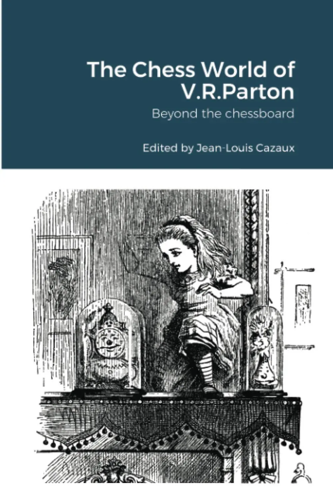
The Chess World V.R.Parton,
portada del llibre.
Els escacs d'Alícia foren una creació de
Vernon Rylands Parton, un inventor de múltiples variants dels
escacs, moltes d'elles molt interessants, i sovint inspirades en les històries de Lewis
Carroll. La variant dels Escacs d'Alícia és molt popular, doncs fa el joc ple de
sorpreses i errors divertits. Per jugar es requereix un joc d'escacs i un segon escaquer
(consulteu la Viquipèdia per a veure les regles).
Queen of Hearts Chess (Escacs de la Reina de Cors),
també anomenat Co-regal chess: S'incorpora
regalia
també a la Dama, de manera que es perd la partida tan si es perd el Rei
com si es perd la Dama. Naturalment, s'han d'avisar els escacs a la
Dama.
Es juga amb el material usual
d'un joc d'escacs.
Tweedle chess:
També conegut com a Escacs de Doble Rei o
Escacs dels Reis bessons, cada
jugador té dos Reis i dues Reines en un tauler de 10×10. Un jugador
guanya donant escac i mat a un dels Reis contraris. En la disposició inicial,
les Reines es col·loquen en el centre de la fila i els Reis als seus
costats, de manera que cada Rei només pot enrocar curt en el seu costat,
i no hi ha enrocs llargs. Els Peons poden avançar fins a tres caselles en el
seu primer moviment. Els Reis bessons representen a
Tweedledum i Tweedledee.
La partida es juga amb un tauler d'escacs
de 10×10 i el material d'escacs habituals, amb dos peons, un rei i una reina
addicionals per a cada jugador.
Decimal Rettah chess (podria traduir-se com a
Escacs Decimals del Barreter Boig, ja que "Rettah" és
Hatter escrit a l'inrevés, en català Reterrab):
El rei hauria de ser fort, no feble.
Cada jugador té dues Reterrabs (Rettahs) i dues Dames
en un tauler de 10×10. Un jugador gana capturant les dues Reterrabs
(Rettahs) contràries. En la disposició inicial, les Reterrabs
(Rettahs) es col·loquen en el centre de la fila i les Dames als
seus costats. Els moviments de la Reterrab (Rettah) són els de la
Dama, amb l'opció també de realitzar moviments de salt com els del
Cavall. Quan una Reterrab (Rettah) és atacada, la peça
atacant ha de ser capturada immediatament. Els Peons poden avançar fins
a tres caselles en el seu primer moviment. No hi ha captura al pas. Un peó
promociona a Reterrab (Rettah), però només si ja havia
estat capturada una Reterrab (Rettah) del seu color.
La partida es juga amb un tauler d'escacs
de 10×10 i el material d'escacs habituals, amb dos peons, un rei i una reina
addicionals per a cada jugador. Utilitza els dos Reis de cada jugador
en el paper de Reterrabs (Rettahs).
Imperial Fiddlesticks (Foteses Imperials): El Rei deixa
de tenir regalia,
i ara es comporta com a una peça més, i si l'oponent la captura, el joc segueix.
L'objectiu és capturar tots els Peons de l'oponent; si un Peó
arriba a l'última fila promociona a Cavall, i el jugador perd un dels seus
valuosos Peons. Quan un jugador queda sense Peons, perd la partida;
si són les negres, poden realitzar un últim moviment, i si també deixa sense
Peons a les blanques, es considera un empat.
Es juga amb el material usual
d'un joc d'escacs.
Mock chess (Escacs de Simulacre): Similar a
Imperial Fiddlesticks, però s'han de capturar totes la peces de
l'oponent per a guanyar. La captura d'una peça és obligatòria, quan
hi ha un moviment que ho permet. Els Peons han d'iniciar amb un moviment
doble, excepte quan poden capturar una peça. La promoció dels Peons és
com en els escacs ortodoxos.
Es juga amb el material usual
d'un joc d'escacs.
Dodo Chess (Escacs del Dodo) and Racing Kings
(Carreres de Reis):
Són pràcticament el mateix joc. Són jocs de carreres usant un tauler
d'escacs i fitxes d'escacs. Gana el jugador que aconsegueix arribar amb el
Rei a l'extrem oposat, però no es permet posar en escac al Rei
de l'oponent, encara que sí que es poden capturar la resta de les seves peces.
Es juguen amb el material usual
d'un joc d'escacs.
Veure les posicions inicials en
Racing Kings i
Dodo Chess de la Viquipèdia.
Sphinxian Chess (Escacs d'Esfinxs): Uns escacs de quatre
dimensions que es pot jugar en un tauler pla de dues dimensions.
...i molts altres més.
Escacs tridimensionals
Aquesta categoria es va inaugurar ja en 1851 amb el Kubikschach (escacs cúbics).
En 1907 Ferdinand Maack ho va perfeccionar, inventant els Raumschach,
els escacs espacials alemanys.
Posteriorment ha hagut diverses propostes
d'escacs
tridimensionals;
el mateix V.R. Parton va proposar algunes, com el
Cúbic Chess, i una variant d'aquest que definia en modalitat cúbica els
Grans escacs de Tamerlà, o els
Sphinxian Chess, uns escacs en quatre dimensions, que es juguen en un escaquer
pla, de dues dimensions. N'hi ha molts altres exemples,
com els Escacs de l'Era Galàctica d'Isaac Asimov, esmentat a les novel·les
A Perfect Fit i Pebble in the Sky.
Fins i tot també ha hagut propostes d'escacs de dimensions més altes,
però els escacs amb més de dues dimensions no han estat una variant d'èxit.
Bé, si volem uns escacs de fantasia, potser perquè volem fer realitat el terme escacs de
fades, potser perquè som fanàtics dels coneguts jocs
D&D (Dungeons
& Dragons, Dragons i Masmorres), o potser perquè des de Star Trek
hem pensat que era una bona idea això dels escacs en tres dimensions, llavors
Dragonchess
són realment uns escacs fantàstics interessants. Es juguen amb figures de fantasia, en un
tauler de tres dimensions: cel, terra i inframón. Són uns escacs dissenyats pel mateix
Gary Gygax, dissenyador del joc de rol D&D, i les regles les podem trobar a
les Chess Variant Pages.
Star Trek
Si parlem d'escacs tridimensionals, hom pensarà en els escacs d'Star Trek.
En realitat la importància d'aquesta variant és, sobretot, per la seva fama deguda a l'aparició
en
la serie, i el joc és senzillament una reproducció d'allò que allà s'hi veu (merament era
atrezzo).
Les instruccions per construir el tauler es publicaren en el Star Fleet Technical Manual,
i més tard aparegueren les regles. Les regles impreses es poden adquirir en el
lloc
web d'Andrew Bartmess, on també es pot consultar la versió resumida. Aquests escacs, per
la
popularitat de la seva imatge, fins i tot s'hi poden trobar comercialment.
Geometria Impossible
La possibilitat d'un joc tridimensional amb assistència d'ordinador als jugadors també ho vàrem
discutir en les converses de disseny de C'escacs, encara que en aquell moment parlàvem
d'un veritable tauler físic molt complex, i una mera assistència als jugadors mitjançant
ordinador. Potser el joc assistit pot arribar a ser una modalitat de futur.
Però la intel·ligència artificial ha avançat molt des d'aquestes converses on
parlàvem de la dualitat home-màquina, fent servir la màquina com a eina en igualtat de
condicions
per a tots dos jugadors; actualment, la superioritat de la màquina deixa poc espai al jugador
humà,
però de segur s'inventaran jocs en aquesta línia, tot i que molt probablement haurem d'oblidar
el
tauler físic i resignar-nos a jugar virtualment.
En aquest sentit n'hem parlat d'un joc en un tauler impossible,
per jugar virtualment: un icohexaedre (polígon de 26 cares) regular
de cares hexagonals, format per vint-i-sis hexcaquers, amb 169 caselles cadascú:
uns escacs amb 4_394 hexcacs!
És un polígon impossible, doncs no es pot fer un poliedre amb hexàgons regulars, però això no fa
més
que fer el joc més interessant, semblant a incorporar més dimensions, i el nombre de
combinacions és
absolutament impensable.
Bibliografia:
història dels escacs i variants d'escacs
Si ens interessen les variants històriques i de diferents indrets del
món, el llibre A World of Chess[ISBN:978-0786494279]
de Jean-Louis Cazaux és molt recomenable. També és Jean-Louis Cazaux qui ha editat
l'obra de V.R.PartonThe Chess World of V.R.Parton, beyond the chessboard[ISBN:978-1-716-19045-2],
llibre que recull els treballs de V.R.Parton
Per descomptat, el llibre per excel·lència quant a informació històrica sobre els escacs,
sens dubte és A History of Chess[ISBN; 978-1-63220-293-2]
de H.J.R. Murray, publicat originalment en 1913, però que continua sent una referència
imprescindible.
Part del contingut del llibre A World of Chess[ISBN:978-0786494279] de Jean-Louis Cazaux es troba
disponible on-line en el lloc web de Jean-Louis Cazaux, que
constitueix un resumen d'aquest, i fins i tot n'hi ha algunes actualitzacions.
Un resum de l'història dels escacs, complementària a la que aquí es presenta, la poden trobar
(on-line) als artículos
del blog de Antonio Gude, (en castellà) recopilats i indexats.
Referencies On-line
Són moltes, moltísimes, les variants dels escacs, i The Classified Encyclopedia of
Chess Variants[ISBN: 978-0955516801] de
David B. Pritchard, hi descriu més de 1.400; en els inicis del segle XX
destaca V.R.Parton
per la seva gran creativitat. Per motius històrics, també és molt rellevant el
llibre Chess Eccentricities, de
George Hope Verney, que podem trobar on-line.
Algunes variants d'escacs apareixen en la Viquipèdia,
però si volem indagar alguna variant, cal esmentar els llocs (on-line):
El llibre de George Hope VerneyChess Eccentricities (1885)
(via https://www.chessvariants.com/)
En el lloc web de Jean-Louis Cazaux,
autor del llibre A World of Chess, n'hi ha informació detallada referent
a l'història dels escacs i variants de diferents indrets del món.
Variant Chess,
en el lloc web Mayhematics.com de George Peter Jelliss.
Podem trobar exemples de partides d'escacs
hexagonals de la dècada de 1980 en el
número de 1992, en un artícle
de Miroslaw Miodoriski descriu quatre partides de la dècada de 1980,
argumentant i reivindicant el valor de l'Alfil hexagonal, en comparació
amb el cavall.
Joc molt popular entre els antics egipcis i es troba sovint representat
a les tombes; les primeres mostres que s'han trobat daten de
l'Egipte predinàstic, cap al 3100 AEC. En comptes de daus,
els egipcis feien servir uns bastonets plans amb dues cares diferents,
una en blanc i l'altra de color
negre o decorada, a vegades també es feien servir unes tabes
(com en el joc dels ossets) en comptes dels bastonets. Les fitxes
recorden algunes peces dels escacs, com els peons i les torres.
El joc té punts en comú amb altres jocs més moderns com el de l'oca,
el backgammon o el parxís.
És el nom d'una deïtat egípcia amb forma de serp, però
també d'un joc amb un tauler en espiral, tot i que es desconeix
el funcionament del joc, encara que sembla alguna mena de joc de
persecució.
Trobats en les Tombes Reials d'Ur, daten de la Primera Dinastia d'Ur,
abans del 2600 AEC, Mesopotàmia. Sembla que era era un joc de
carreres o persecució, amb una dinàmica de joc semblant als actuals
parxís o backgammon. No es pot determinar si és posterior
o anterior al Senet egipci.
El joc del pentagrama, o joc de les cinc línies és
un joc grec del tipus dels jocs de taules, com el
blackgamon, tot i que es desconeixen les regles, però s'han
fet diverses reconstruccions. Les primeres mencions daten
aproximadament de l'any 600 AEC. Existeixen també versions amb més
línies (típicament, onze), que llavors es jugaven amb dos daus.
El Petteia, amb una primera referència d'Homer (segle VIII AEC), és un
joc grec. Tot i que es desconeixen les regles, sembla que el Latrunculi,
podria haver estat la versió romana del joc. Tampoc es coneixen les regles del
Latrunculi, tot i que s'han fet diverses reconstruccions.
El joc, o un de molt semblant, és citat a l'Art amatòria d'Ovidi
(segle I EC). Les connexions africanes del joc de l'alquerc podrien determinar
que
el joc què referència Ovidi és un de diferent, o bé que els jocs africans són encara
anteriors.
El joc forma part de la nombrosa família de jocs anomenats genèricament marro,
que
inclou també el marro de tres, el marro de sis i l'alquerc o
marro de dotze. Força popular durant l'Edat Mitjana, apareix al Llibre dels
jocs
encarregat per Alfons X de Castella. També apareix en nombrosos relleus a
l'Anglaterra
medieval i, posteriorment, apareix a El somni d'una nit d'estiu de
William Shakespeare.
El nombre de posicions possibles del marro de nou és d'unes 1010, que donen lloc a
uns
1050 jocs possibles. En 1993, Ralph Gasser resolgué el joc i demostrà que
acaba
en empat, suposant jugadors perfectes.
El hnefatafl és un joc de taula que pertany a la família dels jocs tafl,
antics jocs de taula germànics que es practicaven sobre una taula quadriculada i que són
probables descendents del Ludus latrunculorum romà. Els vikings consideraven
que saber jugar bé al Hnefatafl o Tauler del Rei era signe de noblesa.
Algunes versions d'aquest joc van ser populars a Europa del Nord almenys des del 400 EC
fins que van ser reemplaçats pels escacs durant el Renaixement. Les descripcions de les
regles d'aquesta família de jocs són confuses, però s'ha reconstruït el joc com degué
practicar-se en l'antiguitat.
Tenim referències a l'Alquerc des del segle X, però és amb
El Llibre dels Jocs d'Alfons X, en el
segle XIII,
que ens arriben les regles. Sembla que l'Alquerc seria el precedent de l'actual
Joc
de les Dames, que apareixeria combinant-lo amb l'escaquer dels escacs. Se
sap que el joc
va ser portat a Europa pels pobles moros quan aquests van entrar a la península ibèrica.
Diferents
versions en el tauler per tota Àfrica confirmen
l'origen del
joc a l'Àfrica subsahariana, amb una antiguitat almenys d'inicis de l'Edat mitjana. El
Seega
és una versió que va ser molt popular a Egipte al llarg dels segles XIX i XX.


 Miguel Hermoso Cuesta, CC BY-SA 4.0 i Siren-Com, CC BY-SA 3.0 via Wikimedia Commons
Miguel Hermoso Cuesta, CC BY-SA 4.0 i Siren-Com, CC BY-SA 3.0 via Wikimedia Commons
.jpg) British Museum, CC BY-SA 4.0, via Wikimedia Commons
British Museum, CC BY-SA 4.0, via Wikimedia Commons